Tarihi Genç Tutmak ve Dağı Delmek
Kemal Haşim Karpat, 1923 Romanya-Dobruca doğumlu, 1946’da TC vatandaşlığına geçmiş, 1950’den bu yana ömrünün büyük bölümünü ABD’de geçirmiş ve halen emekli olduğu Wisconsin Üniversitesi’nin bulunduğu Madison kentinde yaşayan tarih profesörü.
Şu birkaç satırda tam 85 yıllık bir öykü gizli. Doğduğu 1923 yılında Mustafa Kemal Atatürk nedeniyle Kemal adı konmuş, o yıllarda doğan yüzlerce çocuk gibi… Ama diğerlerinden farklı olarak Kemal Karpat’ın hayatı, kendi deyimiyle “dağı delmeye azmetmiş bir ırmağın” öyküsü.
Roma-Bizans döneminde Doğu ile Batı’nın sınırı sayılan Tuna’nın güneyinde doğup, yaşam rotasını Batı, çalışma eksenini ise Doğu olarak seçen Karpat’ı, diğer tarihçiler arasında farklı kılan en önemli özelliği, salt “laiklik-modernizm-İslam” ve “Türk Devletleri” gibi başlıklar altında sıralanabilecek özgün çalışmaları değil, yaşananı sürekli takip etmesi, yaşananı geçmişten devralınan miraslar ışığında yeniden ve yeniden incelemesi ve tüm bunların aktüel politikayla sürekli bağlarını kurması. Bu süreçte de yerleşik, resmi ya da sivil kalıpları tekrar tekrar sorgulaması. Dağları delmekteki ısrarı, yani…
Hayatı boyunca hep ‘aktüel’in birebir içinde olan Karpat, Türkiye’nin bir çırpıda sayıvereceğimiz önde gelen politikacı ve devlet adamlarının büyük çoğunluğu ile ilişkiler kurmuş, Anadolu’nun köylerinde incelemeler yapmış, hakkında yazı yazdığı tüm Türki cumhuriyetleri ve Ortadoğu’yu ‘sahada, yerlerinde’ incelemiş, ABD’de Beyaz Saray’a davet edilerek sıcak politik gelişmeler konusunda sık sık görüşlerine başvurulmuş, deyim yerindeyse “yaşayan” bir tarihçi olmuş. Yaşadıkça, tarihi de genç ve canlı tutmuş. Ömrünün elliden fazla yılını Amerika’da geçirmiş olmasına karşın, günümüzü ve günümüze ışık tutan yakın geçmişimizi, ömrünü Türkiye’de, Türkiye’ye hasretmiş birçok politikacı ve devlet adamından daha iyi takip ettiğini söyleyebilirim.
2006 Kasım ayında İstanbul’daki görüşmemizin ortalarında bir yerinde şöyle demişti: “Zaman zaman kendi hayatım bana da ilginç gelir.”
Bana “zaman zaman” değil, tümüyle ilginç gelen bu hayat öyküsünü, onu bugün Türk-Osmanlı tarihçileri arasında ön sıralara yerleştiren çalışmalarının ana hatlarıyla birlikte aktarmaya çalıştım. Onun tüm bir hayat boyu koruduğu Rumeli lehçesine ve anlatımına tümüyle sadık kalamadığım için üzgünüm, ama gene de sohbetin doğallığını koruyarak aktarmaya gayret ettim. Sayfayı çevirdiğinizde sizi bekleyen, bir tarihçinin çeşitli kitap ve makalelerinde bulabileceğiniz tarih, aktüalite ve politika hakkındaki görüşleri değil, bu görüşlerini oluşturan geçtiği bütün durakların, istasyonların, kurduğu ilişkilerin, yaşadıklarının öyküsü.
Umarım yeterince aktarabilmişimdir.
Emin TanrıyarDatça-2008
İnsanlar denize doğru akan nehirlere benzerler. Nehir gibi belirli mecralardan yürürler, yaşarlar ve bir yerde sonsuz denizlere erişirler. Ama bazıları herkesin gittiği yolu bırakıp başka yoldan yürümek ister. Nehirlerde de bazen ayrılan, kendi yolunu arayan ırmaklar vardır. Kendi yolunu açar ve akar gider ırmak, dağlara, tepelere çarpıncaya dek… Irmak vardır, dağın üstünden atlamak istercesine kayalara çarpar, suları köpürerek yükselir, sonra gerisin geri düşer bir an, durgunlaşır. Sonra dağı kucaklayarak, öperek etrafında dolaşır ve sonra denize akar, gider.
Ama bazen de inatlaşır dağla; kayaları oyar, dağı delip kendisinin açtığı yoldan türkü söyleyerek akar, gider ve aynı denize kavuşur. Ama dağı delmiştir. Oradan belki binlerce sene aynı mecrada akacaktır nehir, bir gün, kim bilir…
Bazı insanlar da, kalbinde, zihninde ne yattığını bilmeden ama onların gücüne boyun eğerek yeni yollar arar. Bulamazsa yolunu kendisi yaparak yürür. Denizler, kıtalar, kurak çöller aşar, hep yürür; ömürler yaşar, kısa bir hayat boyunca. Engellere çarpar, sendeler, yıkılır ama sonra tekrar toparlanarak yoluna koyulur. Taa denize ulaşıncaya kadar.
Tıpkı ”dağı delen ırmak” gibi…
Kemal Haşim Karpat
Birinci Bölüm
Sarı Saltuk’un Gölgesinde Asude Bir Çocukluk
Babadağ’da babamın bir evi vardı, sonradan bu eve ablam yerleşti, onun için her zaman gidip kaldığımız bir diğer evimiz de Babadağ’daydı. Benim yetişmemde fiziki olarak, sembolik olarak, tarihi olarak Babadağ’ın birinci derecede yeri ve önemi vardır. Burada Saltuk Baba’yla iç içe yetişmenin ve onun buraya getirdiği liberal, açık, “dünyevi İslam”ı tatmış olmanın hem benim hayatımda ve hem de oradakilerin hayatında önemi çoktur.

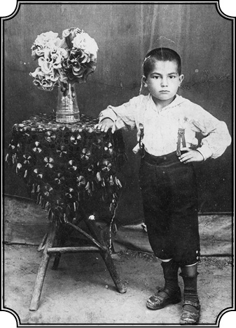
6 yaşındaki Kemal Haşim Ömer, Armutlu’da
(en eski fotoğrafı). Soyadı henüz Karpat değil.
Kemal Bey, sizi Kemal Karpat yapan çeşitli kaynakların başında herhalde aileniz geliyor. Bir söyleşinizde babanızdan çok şey öğrendiğinizi söylüyorsunuz. Aileniz de Osmanlı’nın Balkan-Rumen kültürünü taşıyan bir geçmişten geliyor. Romanya-Dobruca’da doğmuş bir Kemal Karpat var karşımızda. Önce bize doğduğunuz yerleri anlatır mısınız, işittiğiniz, gördüğünüz kadarıyla aileniz oraya nasıl yerleşti? Nereden geldiler? Orada nasıl bir hayat kurdular? Orası gerçekte neresi?
Şunu hemen belirtmek yerinde olur ki ben, kişiyi ortamının bir parçası olarak görürüm. Kişinin hayatını, kişiliğini, benliğini, kimliğini bir dereceye kadar ortamı ve ailesi tayin eder. İşte ben de bu ortamdan bahsetmek istiyorum. Bu ortam yalnız benim üzerimde değil, aynı zamanda “Osmanlı” ya da “Türk” dediğimiz, oralara hâkim olmuş kitlenin üzerinde de etki yapmıştır. Bir dereceye kadar bugünkü tarihimizi tayin etmiş, ona istikamet vermiş yerlerdir buralar. Dobruca’dan başlayalım: Dobruca, Tuna ile Karadeniz arasına sıkışmış, bugünkü Bulgaristan’ın Varna’sına kadar uzanan, 150-200 kilometre uzunluğunda, adeta yarımada gibi bir bölgedir. Bu bölgenin önemi, bir bakıma daha çok Balkanlar’a, Balkan coğrafyasına ve hatta iklimine bağlı olmasından ileri gelir. Tuna’nın kuzeyine düşen bölgeler, bilhassa bölgenin kuzeydoğusu, Kıpçak-Rus steplerine, oradan Orta Asya’ya kadar uzanan steplere bağlıdır. Orada Avrupa adeta ikiye ayrılır: Tuna’nın kuzeyi ve Tuna’nın güneyi. Dobruca, bir bakıma Balkanlar’a ve Avrupa’ya bağlı. Kuzey ve kuzey doğusunda Kıpçak, Peçenek ve Hunların yaşadığı yerler ve ondan sonra Orta Asya’ya bağlı muazzam engin ovalar var. İşte Dobruca, Orta Asya’dan Avrupa’ya uzanan bir yer ve bu iki kıta arasında bir geçit noktasıdır.
Türklerin bu sınıra, bu geçit bölgesine yerleşmelerinin tarihi Osmanlı’dan çok önce değil mi?
Türkler daha Osmanlı Devleti kurulmazdan evvel, Sarı Saltuk idaresinde 12.000 çadır olarak Dobruca’ya gelmiş ve Dobruca’nın güneyinde Kavarna-Kalyakra bölgesine yerleşmiş. Bir kısmı Sarı Saltuk idaresinde kuzeye, Babadağ’a geçmiş ve 1263 senesinde orada Babadağ adındaki bu şehri kurmuşlardır. Osmanlı’dan evvel Avrupa’ya geçmiş, yine Dobruca bölgesine yerleşmiş başka kalıntılar da vardır. Anadolu Selçukluların izleri vardır. Mesela Dobruca’nın güneyinde, yanlış hatırlamıyorsam Derviş Paşa Camii vardır. O cami 1299’da kurulmuştur. Bu tarih de aşağı yukarı Osmanlı Devleti’nin kuruluşuna tekabül ediyor, demek ki daha o devirde Dobruca’da orayı kendine yurt edinip yerleşmiş Türk, daha doğrusu Türkmen kitleleri vardı ve bunlar Bizans’ın idaresinde yaşamaktaydılar. Benim doğduğum, büyüdüğüm yer olan Armutlu ise Babadağ’a on kilometre mesafededir. Babadağ’da babamın bir evi vardı, sonradan bu eve ablam yerleşti, onun için her zaman gidip kaldığımız bir diğer evimiz de Babadağ’daydı. Benim yetişmemde fiziki olarak, sembolik olarak, tarihi olarak Babadağ’ın birinci derecede yeri ve önemi vardır. Burada Saltuk Baba’yla iç içe yetişmenin ve onun buraya getirdiği liberal, açık, “dünyevi İslam”ı tatmış olmanın hem benim ve hem de oradakilerin hayatında önemi çoktur.
Başka sohbetlerinizde de geçiyor bu “dünyevi İslam” kavramı. Tam olarak ne kastediyorsunuz bundan?
Yani dünyayla, yaşananla ilişkiyi kesmemek. Ailemden gördüğüm, muhtemelen Sarı Saltuk etkisiyle o bölgedeki diğer Müslümanlar’da da olan “hakiki, ruhani dine” yakın olmak fakat dünyayla da ilgiyi, ilişkiyi kesmeden yaşamak düşüncesi. İşte bu tarz bir yaşam, ahireti dünyayla birleştiren bir dünya felsefesine sahip olmama sebep olmuştur. Babadağ, gerçekten bu şekilde babaların babası olan “Saltuk Dede” tarafından kurulduğu için ilk olarak “Baba Şehri” denmiş oraya, sonra “Sarı Saltuk” denmiş, sonra başka şehirler, başka babalar ismiyle anılmış ve nihayet “Babadağ” olmuş. “Baba’nın dağı.” Çünkü hakikaten Babadağ’ın arkasında bir iki yüksek dağ vardır, öyle tırmanılmayacak yükseklikte değil, fakat yine dağ manzarası vardır.
Sarı Saltuk Baba’yı biraz daha öğrenelim mi?
Bizim bilgimize göre Sarı Saltuk, aslen Orta Asyalı ve Hacı Bektaş grubunun mensubu bir kimse. Onun için Sarı Saltuk’un Bektaşi olduğunu iddia eden çok kimse çıkmıştır. Fakat bence Sarı Saltuk, bizim bugün anladığımız manada Bektaşi olmadığı gibi o devirde Bektaşiliğin de adeta İslam’ın ortodoks olmayan bir kolu olarak gözüktüğünü sanmıyorum. Bektaşilik başta gayet normal, genel İslam çerçevesinde gelişmiş bir akımdır. Sarı Saltuk 13. yüzyılda doğrudan doğruya Orta Asya’dan çıkmış, Horasan veyahut Orta Asya kökenli bir ailenin çocuğu olarak yetişmiştir. Sarı Saltuk’un, bilhassa kültürel, dini ve kısmen de siyasi tarihimizde bir yeri vardır ve bunun doğru dürüst anlaşılması gerekmektedir.
Evet, o yıllar o bölgelerde, yani Horasan’da, Nişabur’da, İsfahan’da, Tebriz’de İslami inancın en özgür yaşandığı yıllar değil mi? Yani insana saygı ve tevazu daha fazla, despotizm daha az, düşünce ve felsefe tartışmaları daha yoğun... Bütün eski Budist kültürlerin, Şamanizm’in, yeni İslami düşüncelerin birbirine geçtiği bir özgürlük havası yaşanmış o dönemde. Sarı Saltuk, bu dünyanın bir çocuğu olarak ortaya çıkıyor, değil mi?
Şüphesiz. Saltuk Baba’nın hayatı, diyebilirim ki İslam’ın en liberal, en hümanist ve aynı zamanda başka dinlere ve kültürlere hürmet edip onların arasında yaşadığı bir devresine tesadüf eder. Çünkü hem Horasan hem Anadolu birçok kültürün barındığı yerlerdir. İşte bunun için de Sarı Saltuk Rumeli’ne, yani Dobruca’ya geçince orada ezici çoğunluğu İstanbul’a bağlı ve Ortodoks Hıristiyan olan kitlelerle bir arada yaşayabilmiş, onlarla anlaşmış ve onların bir kısmını Müslümanlığa geçirmiştir. Nitekim elimizde bulunan kaynaklar Babadağ’ın nasıl büyüdüğünü göstermektedir. Sarı Saltuk oraya yerleşmiş, mahallesini kurmuş, kasabasını kurmuş, camisini yaptırmış. Ondan sonra ne olduğu belli değil. Fakat türbesi olsun, yaptırdığı cami olsun hepsi harap olmuş. Yaklaşık iki yüzyıl sonra II. Bayezid, Kili ve Akkerman seferine giderken Babadağ’da kalmış. Orada kendisine Baba Saltuk’tan bahsedilmiş. O gece Bayezid’in rüyasına giren Baba Saltuk, ona “Kili’nin ve Akkerman’ın kendisi tarafından fethedileceğini, önünün açık olduğunu” söylemiş. Ondan sonra II. Bayezid, Akkerman-Kili seferinden zaferle dönerken Babadağ’a uğramış ve bu defa Sarı Saltuk’un türbesini bulmuş. Türbeyi tamir ettirmiş, ihya ettirmiş ve o zaman orada bir külliye yaptırmıştır, ki kalıntıları bugün hâlâ görülmektedir. Bu, aşağı yukarı 1488’de olan bir olaydır. Yalnız şunu derhal belirteyim ki Sarı Saltuk geldiğinde oranın o zamanki ismi Dobruca değildi. Çünkü Dobruca’nın ismi, Dobruca’da bir devlet kurmuş Dobrotiç’ten geliyor. Dobrotiç ise neredeyse yüz sene sonra yaşamıştır. Sarı Saltuk buraya geldiği zaman, buraların ismi kaynaklara göre Kıpçaki’ydi; Kıpçak toprakları, Kıpçakiye. Nitekim Sarı Saltuk’tan bahseden en eski kaynak 1315 tarihli bir Arap kaynağıdır, bu yerden “Kıpçakiye” diye bahseder. Yani buralar “Kuman” yahut “Kıpçak” dediğimiz Türk boylarının yaşadığı yerlermiş.
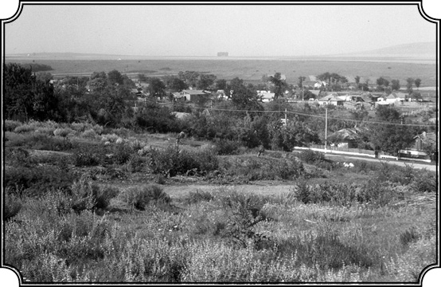
Karpat’a göre “dünyanın en güzel yeri” olan Armutlu köyü (1998’de).
Miladi mi bu tarih, eski dediğinize göre, neydi bu kaynak?
Miladi tarihle 1315. Yani Sarı Saltuk öldükten kısa bir süre sonra Araplar burayı ve Saltuk Baba’yı kayda geçirmişler. Ben de bu bilgiyi sonradan öğrendim ama şu an kaynağın adını hatırlamıyorum. İşte Babadağ, bizim tarihimizde, kültür hayatımızda, siyasi tarihimizde böyle özel yeri olan bir kasabacıktır ve buradan birçok Osmanlı Sultanı geçmiştir. Fatih Sultan Mehmed de buradan geçmiş. Fatih’in oğlu Cem Sultan, Dobruca’da bir kış geçirmiştir. “Sarı Saltuk Menkıbeleri”ni dinleyen Cem Sultan, kendisi de zaten şair olduğu için bundan çok etkilenmiş ve “bunların bir araya toplanmasını” emretmiş ve ortaya Saltukname diye bir menkıbe çıkmıştır. Metni toplayan Rumi isminde bir zattır. Bu menkıbe, bizim Dede Korkut’unki gibi menkıbeler arasında yer alır. Fakat bildiğim kadarıyla, şimdiye kadar Saltukname’yi kimse doğru dürüst incelememiştir. Latin harfleriyle yayınlanmıştır. Topkapı Kütüphanesi’nde bir nüsha var galiba. Bu nüsha esas tutularak yayınlanmış fakat yorumlanmamıştır, yani onu okuyan pek bir şey anlamaz. Çünkü Saltukname’deki olaylar kâh Orta Asya’da, kâh Asya’da, kâh Anadolu’da, kâh Balkanlar’da, kâh Kuzey Avrupa’da geçer. Yani asıl Saltukname’ye ilaveler yapılmış.
Müslüman Türklerin orada yerleşmeleri adım adım bir süreklilik kazanıyor. Yerleşirken neler oluyor?
Hotin muhafızı olmuş Kadızade Ali Paşa, Budin Valiliğinden sonra Babadağ’a gelmiş, Babadağ Paşası olarak, burada bir cami ve muhtemelen bir medrese yaptırarak bu külliyenin mali yükünü de bir vakfa yüklemiş. Vakfın geliri ise Sebil-i İlyas ve Hergele Köyü’nün gelirleriyle karşılanacaktı. Bu köyler hâlâ ayaktadır. Sebil-i İlyas Köyü’nü bundan on gün evvel (2006 Kasım ayı başı) ziyaret ettim. Köyün bugünkü Rumen Dobrucası’nda ismi Zebil’dir. Hergele Köyü’nünki ise Sarıköy’dür. Bunlar saf Müslüman köyleri değildir. Sarıköy, Çar Petro’nun reformlarını kabul etmeyip Osmanlı topraklarına göçen veya göçmek zorunda kalan bir Hıristiyan Ortodoks grubun köyüdür. Bunlara Lipovan denir. Hâlâ Rusça konuşurlar.
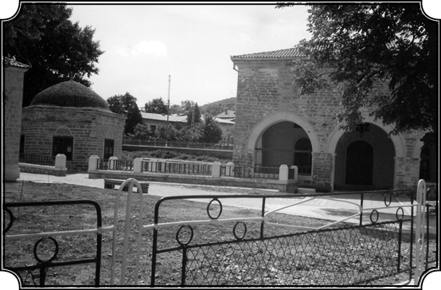
Babadağ’daki Gazi Ali Paşa Camii ve Türbesi (1610 tarihinde yapılmış).
Niye göçmek zorunda kaldılar, Çar ne yaptı onlara? Bu bizim tarihimizde “Deli” olarak anılan Petro mu?
Evet, Çar Deli Petro. 18. yüzyıl başlarında (1690’larla 1725 arası) bir dizi reform yaptı. Yani eski Moskova Çarlığı’nın ilk kurulduğu yıllardaki bazı gelenekleri ve kurumları kaldırdı. Mesela bizim yeniçeri benzeri eski askerlik uygulamalarını ve stretzileri (eski rejimden kalan yeniçeri benzeri asker grupları) kaldırdı, aşırı dindarlığa karşı önlemler getirdi, sakal yasağı koydu, sakal kestirmeye zorladı insanları. Mesela bu göçenler de sakallarını kesmek istemeyen bir grup Ortodokstu. Onlara hatta “eski inançlılar” anlamına gelen Staraveri de denilmiştir. Lipovan diye anılmalarının nedeni de Rusya’da Lipova Nehri kıyısında yaşıyor olmalarındandı. Onlara burada “ikamet etme” müsaadesini Osmanlı Sultanı vermiştir. 1700’lerde, I. Abdülhamid ya da ondan önceki bir padişah döneminde olabilir. Onlar hâlâ bu sayede buralara geldiklerini hatırlarlar. Buna benzer daha birkaç köy vardır. Mesela Jurilofka Köyü vardır. Jurilofka Köyü, Razelm Gölü etrafında kurulmuştur ve Razelm Gölü’nün balık mukataası, Hıristiyanlara verilmiştir ki bu köyü de ziyaret ettim. Köyün hâlâ Rusça konuşan halkı, bu köyün kendilerine Osmanlı Sultanı tarafından verildiğini hatırlar. Bizim orayla bağlantımız da şuradan belli olur: Benim bir yeğenim var, Jurilofka Köyü’nde kendine bir ev aldı, arada sırada gidip orada oturuyor, burası “o topraklar” diye. Çelikdere Köyü’ndeki kilisede Abdülmecid’in, “Burada kilise kurulmasına dair” fermanı duvarda asılıdır. İşte Dobruca buydu. Dobruca’nın iki yüz küsur köyü vardı ve aşağı yukarı 1890’lara kadar bu köyler en halis Türk isimlerini almışlardı. Çukurköy, Çukurova, Topalova, Başpınar, Hasanfaki, Bayramdede gibi hiçbir yerde görülmeyecek derecede özü Türk olan köylerdi. Bunların arasında bugün Türk olarak kalmış çok az köy vardır. Oradan göçler, sürgünler vesaire burayı tamamı ile Türklerden temizlemiştir. Çünkü Dobruca, Kıpçak steplerinden İstanbul’a gelen yolun en kısasıdır. İstanbul, eski Konstantinopol, buradan gelmiş geçmiş bu kadar kitlenin baş hedefi olduğu için, oraya gidenlerin hepsi Dobruca’dan geçmiş, bir kısmı Dobruca’yı mahvetmiş ama hepsi orada bir iz bırakmıştır. Osmanlı, tam manası ile bu bölgeye hâkim olduğu zaman benim kasabam Babadağ ve bu bölge çok büyük bir refah ve huzur dönemi geçirmiştir. Nitekim 16. yüzyılın başında bir tahrir, Babadağ’ın altı mahalleden ibaret olduğunu gösteriyor. Elli sene sonra bir başka tahrir Babadağ’ın on sekiz mahalleye çıktığını gösteriyor. Evliya Çelebi, 17. yüzyılda (1650-60’larda) buradan beş defa geçmiş ve Babadağ’ın o devirdeki manzarasını çok güzel vermiştir. Medreseleri, camileri, pazarları, 390 dükkanı ile Babadağ müreffeh, rahat bir hayat geçiriyordu. Fakat 18. yüzyılın gelmesi ve Rusya’nın bir kuvvet olarak ortaya çıkması ile Dobruca ve bu arada Babadağ defalarca yağma edilmiş, yıkılmış, yakılmış; tekrar dirilmiş, kendine gelmiş, camilerini, evlerini tamir etmiş, sonra tekrar 1800’lerde, 1850’de, 1877’de yine kuzeyden gelen Rus ordularının hücumuna maruz kalarak mahvolmuştur. Eh işte benim ailemin tarihi de, bu olaylara bağlı olarak gelişmiştir.
Hatça Hala’dan dinlenen “halk tarihi”
Babanız ya da dedeniz, Sarı Saltuk döneminden beri orada yaşayan bir aileden mi, yoksa daha sonra göç edenlerden mi?
Şöyle: Babamın babası, baba tarafımdan dedelerim, bugün Ukrayna’ya ait olan, Bucak’ta (Kanuni Süleyman devrinde bu ismi almıştır) yaşamış Kıpçaklardandır. Babamın anne tarafı ise Babadağ’a çok yakın, Aşağıçamurlu köyündendir ve Sebilah isimli babaannem Dobruca’nın yerlisidir. Babamın ailesi kendine mahsus özellikleri olan bir ailedir. Ben aile tarihimi, ailemizin en yaşlısı sayılan Hatça (Hatice) halamdan öğrendim. Biz onun anlattıklarını masal gibi dinler ve aklımıza not ederdik ama bunların tarihi değeri olduğunu anlamazdık. Ancak çok sonra onun anlattıklarının gerçek tarih olduğunu anladım. Benim şimdi ancak onun anlattıklarından kalmış bazı hatıraları dile getirmem mümkündür. Buna göre baba tarafım, babamın babası ve onun babası bayraktardı. Bucak Osmanlı idaresindeyken bir kısmı da Kırım Hanı’nın idaresindeydi. O zamanlar Akkerman, bir Türk kalesiydi. Bizde babamın babasının (adı Hasan’dır) Akkermanlı olduğu, onun bir kumandan, bir bayraktar hatta “serdar” olduğu söylenir. Yine Hatça halamın anlattıklarına göre 1812’de Ruslar buraya girdikten sonra bu dedemiz, savaşarak Akkerman’dan Dobruca’ya doğru çekilmiş, tek başına köprüde düşmanı tutarak askerlerinin geri çekilmesine, hayatlarının kurtulmasına yardım etmiş biridir. Kılıcı, komünistler devrine gelinceye kadar evimizin duvarında asılıydı. İşte ben çocukken o kılıcı alır, kınından çıkarır bakar oynardım. Uzun bir kılıçtı, küçük bir köşesi kopuktu, “Ruslarla çarpışırken kopmuş.” Bunlar belki masaldır ve işin çok ilginç ve benim üzerimde hâlâ büyük etki bırakan tarafı şuydu: “Bu kılıcı nereye asarsanız asın, daima kıbleye döner” derlerdi. Bu basit bir cümle fakat onun altında yatan bir destan var: “Bu kılıç daima kıbleye döner.” Hakikaten kılıcı biraz kaldırırsan ağırlığıyla bir hareket yapar. Ama onlar, “kıbleye döner” derken, “biz bir şeyi savunuyorduk, bu kılıç bir şeyi savunuyordu” manası çıkıyordu ve bize de bu felsefe işlenmişti. Okulda değil, devlet yoluyla değil, gelenek yoluyla geçen bir kültür anlayışı vardır. Hani halk arasında tarihin yaşandığı şekliyle. Biz okula gitmiş, kitap okumuş kişiler, tarihi çok biçimlendirilmiş şekilde anlarız. Veya amaçlı olarak bize sunulan tarihi okuruz ve amaca göre anlarız. Ama halk, tarihi yaşandığı gibi anlar ve anlatır. Bunlar da tarih olur.
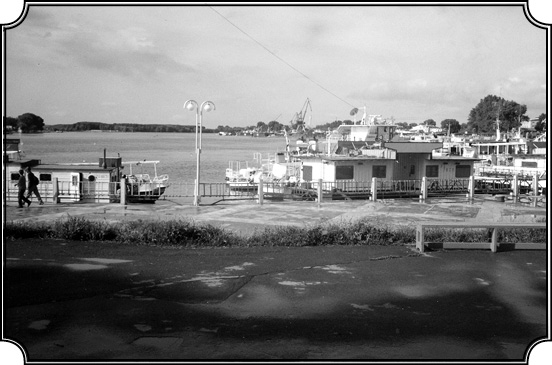
Karpat’ın büyüdüğü bölgenin vilayet merkezi Tulça. Tuna kıyısındaki bu kente Osmanlı döneminde Tulci denirmiş.
Resmî tarih, sivil tarih…
Halk tarihi. Ben bir yerde bunu yazmışımdır. Biz Türklerin üç çeşit tarihi vardır. Bir resmî tarih; iki, Avrupalıların yazdığı tarih ki bu ikisi de şüphelidir. Bir de halkın zihninde kalmış tarih vardır. İşte hakiki tarih odur; nesilden nesle geçen tarih odur. Bu “sözlü tarih” dediğimiz şey son elli yılda gelişen bir tarih çalışmasıdır ve bunun öncülerinden birisi de Afrika’nın tarihini tespit etmeye çalışan Jan Vansina adında bir Belçikalıdır. Kendisiyle aynı üniversitede profesör olarak çalıştık. Çok samimi dostumdur ve daima destekçim olmuştur. İşte bu sözlü tarih, özel tarih veya benim deyişimle halk arasında yaşayan tarih konusunda bir bakıma benim en iyi hocam olmuştur.
Bu tarzı diyelim, size ilk aşılayan Hatice halanız mıydı?
Ben ancak şimdi anlıyorum onu. Senelerden sonra, uzun zaman hafızamın bir köşesine saplanmış kalmış, önem vermediğim hatıralardan. Bu arada Hatça halamın anlattıklarından aklımda kalanlar yavaş yavaş canlanarak bana gerçek tarihin aslında Hatça halamın anlattıkları olduğunu gösterdi. Böyle anlamaya başladıktan sonra o anlatılanları daha iyi değerlendirebildim. Ama o bölgenin tarihini anlatan bir sürü başka olay da vardır gene halk arasında. Bir iki misal vereyim: Babadağ’ın kuzeyine düşen ve Sakça-Tuna yolu üzerinde bulunan bir mevki vardır. Buraya “Arap Tabyası” derler. 1855 Savaşı’nda Ruslar, Babadağ’ı almak için hücum ederken, oradaki askerler bu hücuma karşı korunmak için topraktan bir tabya yani yüksek bir set yaparlar. Taşımak için araçları olmadığından toprakları feslerine doldurarak bu tabyayı kurmuşlar. Bu, halk arasında bilinen bir şeydir, feslerle toprak taşıyarak kurulan tabyanın izleri vardır. Bundan on beş sene evvel gittiğimde tabyanın yerinin hâlâ belli olduğunu gördüm. Yine bir başka hatıram, o dönemki ruh halini, ortamı yansıtması açısından önemli. Hatırlıyorum, 10 yaşında çocuktum, yağmur yağmıştı. Yağmur bizi köyden uzak tarlalarda yakalamıştı, sırılsıklam bir şekilde at arabasına doluşmuş, köye dönüyorduk. Arabayı, Bulgaristan’dan gelmiş, Nuri Ağa isminde, bizim “amca” dediğimiz biri sürüyordu. Yağmurdan sonra yoldan geçerken, baktım etrafta ateş gözüküyor, kıvılcımlar parlıyor. Sonradan bunların ateşböceği olduğunu anladım. Fakat hayatımda ilk defa gecenin karanlığında birden yerden kalkarak alevlenen bu ışıkları gördüğümde hayret içinde sordum yanında oturduğum Nuri Ağa’ya: “Nuri Ağa nedir bunlar?” Nuri Ağa bana dönerek, “Allah’ın şehitlerimize yaktığı kandillerdir” dedi. Ben sarsıldım. Hâlâ o his içimdedir. Basit bir adamdı Nuri Ağa; halktan biriydi. Orada gelip geçmiş savaşları, ölenleri hatırlatıyor. “Ateşböceği” deyip geçebilirdi ama halk oraya bir mana vermiş: “Bizim burada şehitlerimiz yaşıyor.” Onlar da her vesile ile bunu hatırlayıp yaşatıyorlar. Bunu düşünseniz de bulamazsınız; içinde din de var mistisizm de var…
Hayal var, kurgu var, imge var...
Hayal var, güzellik de var, şairlik de var; “Allah’ın şehitlerimize yaktığı kandiller” diyor, dört kelime.
Orası Osmanlı’nın bir uçbeyliği olmasaydı, yani Osmanlı dışındaki diğer kavimlerle sınır teşkil etmeseydi, orada yaşayanların da böyle bir sözü sarf edecek ruh hali olmayacaktı değil mi? Sizin yetişmenizde o uçbeyliğinde yaşamış olmak çok önemli bir etki yapmış olmalı?
Bence de… İşte o ortam çok önemlidir benim görüşümün oluşmasında. Şimdi diyeceksiniz ki; “Niye sen? Yani niye bunları yetmiş sene sonra sen hatırlıyorsun, sanki dün olmuş gibi.” Hakikaten de öyledir ve başkaları bunu hatırlamıyor. Nuri Ağa için bu sıradan bir olaydı. Bu bir histi, onu söyledi. Fakat acaba bu kelimelerin bende uyandırdığı derin tepki, onda var mıydı yok muydu? Onun için bu bir masal haline gelmiş; nasıl ki yağmuru, fırtınayı Allah’a bağlarsa, bunu da Allah’a bağlamış öylece. Hâlbuki benim için öyle değildi. Ben fırtınanın, yağmurun neden oluştuğunu biliyordum. Sonradan o ışıkların ateşböceği olduğunu da öğrendim. Fakat bu ateş böceklerinin “Allah’ın kandili” olduğu imajı benim kafamdan silinmedi, gerçeği bildiğim halde. Burada yepyeni, başka bir unsur ortaya çıkıyor. Demek ki bunlara karşı kişisel bir reaksiyonum varmış. Yani bir insanı yalnızca ortamını çözmekle anlayamazsınız. Acaba bu adamın içinde de bu olaylara karşı, özel bir tepki…
İlgi, yatkınlık…
Evet, ilgi, yatkınlık var. Nereden geliyor, nedir bu? Şimdi farkına varıyorum ki benim de bunlara karşı bir özel anlayışım, etkilenmeye yatkınlığım varmış.
Bilge kadınların arasında bir çocuk
O zaman tam bu noktada Babadağ’da baba ocağının içine girelim.
Oraya geliyoruz. Buraya girmezden evveli, bunu çok defa düşündüm. Üç ablam, Allah rahmet eylesin üçü de vefat etti ve ablamın bazı çocukları, entelektüel bakımdan son derece faal kimselerdir, hayret edilecek derecede. En büyük ablam Nazmiye, fevkalade güzel konuşan, nefis sesi olan biriydi, kafası da o şekilde çalışırdı. Yıllar sonra o güzel sesini hâlâ hatırlarım, duyarım. Küçüklüğümde, Hıdrellez’de ormana giderdik ki o da ayrı bir şey. Ablamın Hıdrellez’de ormanın içinde söylediği şarkılar, hâlâ kulağımdadır. O kadar güzeldi ki o ablam… Fevkalade de güzel konuşurdu, bir hatip gibi. Üstelik tahsili yoktu ve her zaman şöyle derdi: “Eğer ben tahsil görmüş olsaydım, büyük bir avukat olurdum, içimde var bu.” İkinci ablam Vasfiye, dindar, o kadar temiz ruhlu, o kadar açık, melek gibi bir insandı. Elinden kitap düşmez, ilahi okur, herkese yardım eder. Tabii eski harfler okurdu, çok istisnai bir karakterdi. En küçük ablam Adviye ki o da on sene evvel vefat etti, “İlla okula gideceğim, okuyacağım, baba beni okula gönder ne olursun, bak arkadaşlarım ilkokuldan sonra başka okullara devam etti.” diye babama yalvarırdı. “N’olur okula gönder beni!” Fakat babam göndermedi. Çünkü Müslümanlar arasında kızlar o devirde ilkokula bile gitmezlerdi. Ama gene de babam kızlarını hocaya göndererek okuttu, sonra da Rumen ilkokuluna gönderdi. Adviye ablam, sınıf birincisi olması bir yana, kendi başına şiir, makale yazardı. O şekilde geliştirdi kendini ve ölünceye kadar da “ah okuyamadım” diye yandı. Fakat “ne olursa olsun ben çocuklarımı okutacağım” dedi ve en büyük kızını okuttu. Bu kızı Ayşe Azade ki ben onu Melahat diye çağırırım, şimdi Los Angeles’ta, Güney Kaliforniya Üniversitesi’nde Rus ve Asya tarihi profesörüdür. Ablam, “ben okuyamadım ama hiç olmasa kızımı okuttum, profesör yaptım” derdi. Ailemizin üç kızı ve babamızın özellikleri işte böyleydi. Nereden geliyor bu? Valla bunu bir yerde genlere bağlamak lazım ve benim kanaatime göre bu babamın annesinden veyahut da anneannesinden geliyor. Çünkü babamın anneannesi Aşağıçamurlu köyünde ulema olarak tanınmış bir kadın. Onun hakkında fazla bilgimiz yok fakat yine Hatça halamın ve etrafın anlattıklarına göre o kadar okumuş o kadar bilgiliymiş ki erkek ulemalarla karşı karşıya gelip dini meseleleri tartışır ve daima onlardan üstün gelirmiş. O kadar bilgili, kafası parlak bir kadınmış babaannemizin annesi. Bizim ailemizde okumaya karşı ilgi ve merak belki de babaannemizden geçmiştir ki bunun en güzel timsali babamdır.
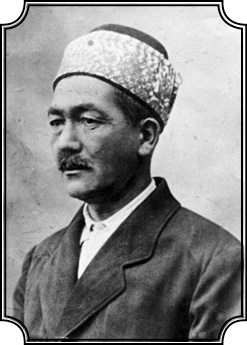
Kemal Karpat’ın babası Hüseyin oğlu Haşim Ömer. 1881’de doğmuş ve 8 Kasım 1938’de ölmüş.
Adı neydi babanızın?
Haşim. Hüseyin oğlu Haşim.
Sizin de ikinci adınız Haşim değil mi?
Evet. Romanya’da baba ismi soyadı olarak verilirdi. Benim de soyadım Haşim’di. Hatta ilk önce adım Kemal Haşim Ömer şeklindeydi. Karpat, sonradan Türkiye’ye geldiğimde, burada kendime uygun olması için düşünüp bulduğum ve aldığım soyadıdır. Benim ilk adım Mehmet Kemal’dir. Doğum kâğıdımda öyle yazılır.
Şarap satan imamın oğlu
O yıllara tekrar geleceğiz. Şimdi Haşim Bey’i anlatıyoruz.
Ben 1923 yılının 15 Şubatında ailenin yedinci çocuğu ve tek erkek evladı olarak altı kızdan sonra doğmuşum. Babam, erkek olduğum için beni yanından ayırmazdı, her yere beraber giderdik. Babamın bir kamyonu vardı, yani babam oranın ölçülerine göre varlıklı bir adam sayılırdı, arazileri vardı, değirmenleri vardı. Tulça vilayet merkeziydi, orada otel, restoran sahibiydi. Kiraya verir, kendisi işletmezdi. Bu mülk ona babasından geçmişti. Ve burada onun dinciliğiyle dünyeviliği nasıl birleştirdiği çok açık olarak ortaya çıkar. İnançlı bir adamdı ama hiçbir zaman inancını göstermezdi. Her bayramda fakir fukaraya elbise dağıtır, giydirir, fitresini verirdi.
Babanızın “dünyevi İslamcılığını” biraz daha açalım.
Hayat işte, ne lazımsa onu yapıyordu. Hayattan kopmamıştı. Ticaretle de uğraşırdı din ile de. Mesela cennet ve cehennem terimleri kafamı kurcalamaya başladığında, hani Yunus Emre’nin “Şu cennetin ırmakları akar Allah deyu deyu” gibi dizeleri hoşuma gidip de sorduğumda babam şunları söylemişti: “İki çeşit cennet ve cehennem vardır. Birincisi kitapların yazdığı cennet ve cehennem ki onları Allah yaratmıştır, ikincisi ise insanların yer üzerinde yaşarken yarattıkları cennetler ve cehennemlerdir. Müslüman’ın vazifesi bu dünyada cennetler yaratmaktır.” Babam, çorak, kumlu verimsiz 30 dönümlük bir araziyi bağ haline getirmişti. Buradan çıkan nefis üzümlerin bir kısmı tatlı şıra haline getirilerek içilir, geri kalanı 15-20 büyük fıçı içinde şarap olarak satılırdı. Kendisi içmezdi ama yapar satardı. Dere kenarına meyve ağaçları dikmişti ve yüzlerce ağacın ortasındaki su değirmeniyle birlikte orası benim cennetim olmuştu. İşte İslam’ın ilk manası benim için güzellik, yeşillik, meyve veren ağaçlar, Yunus Emre’yi hatırlatan akarsular olmuştu. Babam medresede eğitim görmüştü. İmamlık da yapardı. Buna karşın yakın dostları arasında kilisenin papazı, sinagogun hahamı gibi insanlar da vardı, bunlarla da yakinen görüşür ve onlar da ona çok hürmet ederdi. Herkes etrafını sarar “Haşim Efendi” veyahut da “Domnu Haşim” deyip hürmet ederdi, ona hiç kimse Haşim diye hitap etmezdi.
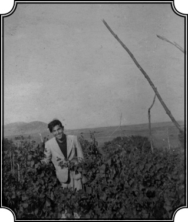
Kemal Karpat okul yıllarında Dobruca’daki üzüm bağlarının ortasında poz vermiş. Bölge cemaatine imamlık yapan babası, bir taraftan da şarap üretip satıyordu.
Babadağ etnik ve dinsel olarak çok kültürlü bir bölge tabii…
Evet, hemen her topluluktan vardı Babadağ’da. Yahudi toplumu, küçük bir Rum toplumu, Ermeni, Rus, Rumen, Bulgar toplulukları vardı. Benim çocukluğumda, Babadağ’da nüfus 6-7 bindi. Osmanlı devrinden kalmış tam manasıyla çok kültürlü, çok dinli bir şehirdi. Belki de yaşamımda en büyük şansım, bozulmamış, eski karakterini, kültürünü, benliğini korumuş böyle bir ortam içinde doğmamdı. Çünkü Dobruca, 1877-78’de Berlin Muahedesi’yle Romanya’ya verilmişti. Romanya, Basarabya’nın güneyini Ruslara vermiş, böylece Ruslar, Tuna’ya ve Karadeniz’e gelmişler ve Basarabya’nın güneyi, yani Bucak karşılığında da Dobruca’yı ve benim de yaşadığım Dobruca’nın kuzeyini Rumenlere vermişlerdir. Bu pek beklenmiyordu. Böylece aniden orası Rumen idaresine geçti. O devirde Rumen halkı, nüfusun ancak yüzde 20’sini oluşturduğu, ekseriyet Türklerde olduğu için Rumenler de Dobruca’da yaşayanların bütün varlığını olduğu gibi kabul ve muhafaza etmiş, böylece Rumen idaresi orada bulduğu eski Türk, Saltuk Dedeli, Bayezidli, Kanuni Sultanlı hatıralarını taşıyan Babadağ ve çevresini olduğu gibi dondurmuştur. Böylece ben, bir bakıma Rumen idaresinde, bir bakıma da tam katıksız Osmanlı-Türk toplumunda ve kültüründe yaşadım. Bir taraftan kendi kültürümüzü alabildiğine halk içinde, aile içinde yaşamımızla tam manasıyla içime sindirdim, diğer taraftan hâkim olan siyasi kültüre, yani Rumen Batı kültürüne de daha küçük yaşta açık oldum. Okumaya çok merakım olduğu, her türlü kitabı, gazeteyi, dergiyi, elime yazılı ne geçerse geçsin okuduğum için Rumenceye de o yaşta fevkalade hâkimdim.
Bu harflerin içinde ne var acaba?
Geleceğinizi de belirleyecek olan bu okuma merakı, babadan mı ablalardan mı, haladan mı, nereden geliyor tam olarak çıkarabiliyor musunuz?
Bende bu merak okuldan ziyade, kitap merakıydı. Adviye ablam okula giderdi. Benden 7-8 yaş büyüktü. Ben 3-4 yaşında idim, kitapları ile gelir, dersini yapardı. Ben de onun dersine bakardım, harfleri görürdüm “acaba bunların içinde ne var” diye merak ederdim. Müthiş bir merakım vardı, belki de bu merak, kişiliğimin en başta gelen özelliğidir. Bu merak, beni daha 5 yaşında okumaya yazmaya götürdü. “Bunları nerede öğrenirim, nasıl sökerim ben” diye düşünüyordum, hani adeta bir sırrın içine girmek, ona vakıf olmaktı amacım. Bütün hayatım boyunca bu karakterim canlı kaldı. Analizle ve kafa yorarak bir şey bulmak… O zaman da bakardım, ablam kitabını alır, yüksek sesle bakarak okur, beni hayrete düşürürdü bu durum. “Ya bu harfler nasıl sesleniyor, hayret” derdim, çok acayip bir vaka gibi geliyordu bana; “Ya onlara bakıyor ve oradan ilham alarak konuşuyor sözleri ve ben anlıyorum onları, hâlbuki kitapta yazılı olan yazılar sessiz, ölü duruyor, bunlar nasıl canlanıyor?”
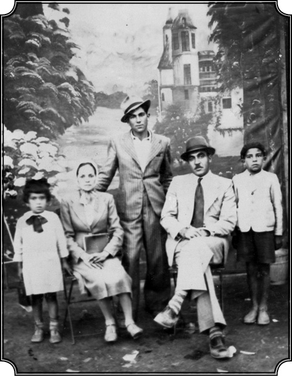
Karpat, çok sevdiği Vasfiye ablası, ablasının eşi Sezai ve çocukları Cafer ve Müezzel’le (1942).
Büyülü…
Büyülü sanki. “O yazılı şeyler nasıl canlanıyor, onların içinde bir şeyler gizli ama acaba ne” diye muazzam bir merak vardı içimde. “Yaa bana öğretsene” dediğimde “Öğretemem, benim vazifem değil bu, okul öğretir” derdi. “E beni okula götür” derdim, götürmezdi. Ablam çantasını alıp okula gitmeye kalktığında, ben de onun peşine takılırdım. Annem de beni teşvik ederdi. Çünkü evde kaldığım sürece yaramazlık yapıyorum. Annem için de benden kurtulmak huzur verici bir şey olduğundan ablama, “Hadi gelsin senle, ne olacak” der, götürmesini sağlardı... Köyün ileri gelenlerinden olduğumuz için, Haşim Efendi’nin oğlu olduğum için Rumen öğretmenler bana, “Gel, otur” derlerdi. Ben de orada öylece otururdum. Benim için, “Yerinde durmayan Kemal, okula girdiğinde mıhlanıp kalıyor, hiçbir şey yapmıyor” diye konuşurlardı. Neden kalıyordum? O duvarda yazılı şeyleri anlamak istiyordum çünkü. Böylece gide gele o yazıları söktükten sonra merakım daha da uyandı, “bu kitapların içinde ne var, ne yok” merakı gittikçe arttı, büyüdü ve bu merak içimde hâlâ duruyor. Hâlâ okuyorum ve hâlâ merakım devam ediyor. Hâlâ, “yahu neler öğrenememişim, yahu ne kadar cahil kalmışım, neler varmış dünyada” diye esef eder dururum.
Babanızın okumaya merakı da sizi etkilemiş olmalı. Onun anlattıkları mesela?
Evet, babam, dediğim gibi “derin hisleri” olan bir adamdı, Kuran okurdu bazen yüksek sesle, öyle yanık okurdu ki herkes içlenirdi. “Ben Kuran okuyacağım, çekileceğim” diye odasına kapanır, okurdu. Ben onu dinlemek için dışarı çıkardım ve orada dinleyip dururdum. Ama halka karşı, şuna karşı, buna karşı herhangi bir Kuran okuması, gösterişi yoktu. Köyün aynı zamanda imamıydı ama köyde cami yoktu. Çünkü camiyi yıkmışlardı, I. Dünya Savaşı’nda mı ne yıkılmış, ondan sonra Müslüman halk Türkiye’ye göç ettiği için kalan yirmi hane kadar Müslümanın mali kudreti olmadığı için cami yapamamışlar. Bilhassa bayram namazlarını gidip Babadağ’da kılarlardı. Bazı doğumlarda, ölümlerde ve her yerde gereken duaları babam okurdu, halk imamı olduğu için. Yeşil bir türbanı vardı, onunla okurdu ama onun ötesinde o da merak eder, durmadan okurdu. Bilhassa kış gecelerinde köylüler, zaten hepsi hısım akrabaydı, bizim mutfağa toplanır ve babam onlara okuduklarını, bildiklerini anlatırdı. Muhammediye gibi büyük kitapları vardı, bir sürü kitabı vardı bunları okur, anlatırdı. Dünya tarihinden olsun, İslamiyet tarihinden olsun her şeyi anlatırdı ve ben de orada bir köşede mıhlanmış bütün bunları dinlerdim. Yani benim büyük eğitimim oradan geliyor.
Mutfaktan yetiştiniz yani...
Bu kadar küçük yaşta, bu gibi kaynaklardan yetişmeye başladım. Ama babam aynı zamanda Liberal Parti’nin üyesiydi. Bütün Türk faaliyetlerini desteklerdi. Hatırlarım, o tarihlerde Emel dergisi çıkıyordu, Dobruca’nın 1930’lardaki belli başlı yayınıydı, ona para yardımı yapardı. Dobruca’da çok sayıda Kırım kökenli insan yaşadığı için sık sık oraya Kırım’ın ileri gelenleri, Cafer Seyit Ahmed gibi ünlüler gelirdi. Hatırlıyorum onlarla tanışır, konuşurdu ve daima Türkiye’ye gelmekten, yerleşmekten bahsederdi. Yedi defa Türkiye’yi ziyaret etmiştir babam…
Babanızın gençlik döneminde, 1800’lü yılların sonunda ve 1900’lerin başlarında, Osmanlı İmparatorluğu’nun son dönemlerinde yani, Dobruca’dan bakıldığında durum nasıl görünüyordu? Babanız bunları nasıl yaşadı? Ailenizde bunlar nasıl tartışıldı?
Dobruca 1878’de Rumen idaresine geçti ve ondan sonra buranın Rumenleşmesi başladı. Rumenleşme iki şekilde oldu. Bir, devlet idaresinde ve o idarenin yönetiminde. Eğitimde, ekonomide, idarede her alanda Rumen Anayasası ve Rumen kanunları hâkim olmaya başladı. Okullarda dersler Rumenceydi, fakat gene Berlin Anlaşması gereğince, Rumen olmayan halkın da hakları gözetilmiş ve bu arada Türklerin ve Müslümanların kendi dinine, geleneklerine sahip olarak yaşamaları temin edilmişti. Böylece Müslümanların, yani Türklerin dini ihtiyaçlarını karşılayacak, onlara dini yol gösterecek müftülük, vilayet merkezi olan Tulça’da kurulmuştu. Çocukluk yıllarımda oraya Dobruca’nın güneyinden gelen Ethem Kurt Molla isminde biri, pederimin desteğiyle müftü oldu. Müslüman azınlığın, gerçi ilk başlarda sayı bakımından azınlık değildi fakat yavaş yavaş azınlık durumuna düşüyordu, hukuki işlerini de kadılık yönetecekti. Böylece bir kadılık müessesesi vardı. Fakat zamanla müftülük olsun, kadılık olsun, yeni idarenin emirlerine girerek şeklen Müslümanlığı devam ettirmiş, fakat bu topluluğun eski tarihi kökenlerine inerek, bu topluluğun yaşamlarını yenisi ile bağdaştıracak bir ortam sağlanamamıştı. Yani bir yerde yavaş yavaş, benim yetiştiğim, küçüklük yıllarımdaki toplum, artık tarihi kökenlerini unutmaya başlamış, kısmen unutmuş, Müslümanlığını ve Türklüğünü şeklen sürdürmüştür. Fakat o bölgenin eski karakterini kaybetmesinde en önemli unsur göçler olmuştur.
Göçler neden başladı? Göçe zorlama politikaları nedeniyle mi?
Bir taraftan Rumen idaresi de oradaki Türklerin Türkiye’ye göçmelerini kolaylaştırmış hatta teşvik etmiştir. Bu siyasette birkaç faktör etkili olmuştur. İlk faktör, askerlik meselesiydi. Rumen idaresi geldiğinde, önceleri Türkleri askere almıyorlardı, fakat 1880’lerden sonra Türkleri de Müslümanları da askere almak söz konusu olunca, halkın bir kısmı muhtemelen, Türkiye ile savaşmanın söz konusu olabileceğini düşünerek, askere gitmektense göç etmeyi tercih etmiştir. Ondan sonra 1880’lerde iki sene arka arkaya meydana gelen kıtlık, zaten artık fakir düşmeye başlayan halkı göçe sevk etmiş ve bu şekilde yüzlerce seneden beri kurulmuş olan düzen, çözülmeye, bozulmaya başlamıştır. Benim vilayetim olan Tulça’daki Türk köylerinin bir kısmı dağılmış, Romanya içerisinden Rumen kökenli kimseler göçmen olarak oralara getirilmiş ve Türklerden kalan araziler de onlara verilmiştir. I. Dünya Savaşı’ndan sonra harbe katılmış olan ve arazisi olmayan genç Rumenlere arazi verilerek Dobruca’ya yerleştirilmiş ve böylece de eskiden tamamıyla Türk olan köyler Rumen olmuş ve bir müddet sonra da isimleri değiştirilmeye başlamıştır. Buna Türk okulları eksikliğini de katarsanız, kendi kültürleri, dilleri ile yetişme eksikliğini de katarsanız… Yani onlara kendi kültürleri, dilleri, gelenekleri çerçevesi içinde kimlikleri ve benliklerini belirleyici imkânlar sağlanmayınca ne olur? Artık kimlik ve kültür devamlılığı aileden gelen bağlara ve toplumun kendi geleneksel gücüne kalmış olur. Nitekim öyle oldu. Buna karşı direnme imkânı yok. Ve sonradan görebildiğim kadarıyla, buradaki en büyük güçlük gerçek anlamda bilince sahip, kendi topluluğuna bağlı bir entelijansiyanın, bir “aydınlar” sınıfının oluşmamasıydı, yani halk lidersiz kalmıştı. Ben ilk olarak orada, benlik sahibi, kimlik sahibi bir lider olmadan bir toplumun uzun süre ayakta duramayacağını anladım. Bahsettiğim müftülük, kadılık da Rumen hükümetinden emir ve maaş aldıkları, oraya bağlandıkları için toplumlarından ziyade, kendi mevkileriyle meşgul olmaya başlamış ve kendilerinden beklenen yardım ve desteği verememiştir. Toplum kendi halinde kalmış ve göçler gittikçe hızlanmıştır. Savaş zamanında, I. Dünya Savaşı zamanında olsun, ondan evvel olsun, birçok göç olmasına rağmen yine de o bölgede bir hayli Türk köyü kalmıştı. Babadağı, Maçın, Tulça gibi kasabalarda hatırı sayılır bir Türk topluluğu vardı. Fakat topluluğun ekonomik bakımdan gelişmesi sağlanamadığı, kendi kültürü ve dilinde eğitim göremediği için, bu toplum yok olmakla karşı karşıya kalmıştır. Gerçi o devirde Rumen kanunları ve Rumen hükümeti, Türk okullarının açılmasına ve Türkçe eğitim görülmesine müsaade ediyordu, fakat ne yukarıdan bu eğitimi verecek tam manası ile yetenekli bir grup vardı ne de halk arasında istek. Okullar da artık kapanır hale gelmişlerdi. 1920’lerde, çok küçüktüm. 1930’lardaki durumu daha iyi hatırlıyorum, manzara buydu. Göçün ne olduğunu, göç acısının ne olduğunu, vatanını, yurdunu terk etmenin ne kadar acıklı bir olay olduğunu ilk defa o zaman anladım. Bizim köyde yirmi hane kadar Müslüman kalmıştı. Köy çok eski bir köydü. 17. yüzyılda Evliya Çelebi bu köyden geçmiş ve gerek bizim köy, gerekse civardaki köyleri Seyahatname’de birer birer sıralamıştır, yani benim doğduğum köy, Evliya Çelebi zamanında da yaşayan, büyük bir köymüş.
Evliya Çelebi, Armutlu Köyü olarak mı bahsediyor?
Evet. Armutlu olarak bahsediyor. Onun kuzeyindeki ve güneyindeki köyleri de çok doğru olarak “Kanber, Çineli” diye anlatıyor, “oradan geçtim” diyor. Çünkü Evliya Çelebi, Melek Ahmet Paşa’nın nezdinde Polonya’ya doğru gitmiştir ki yol oradan geçiyordu. Nitekim o köylerden geçtiğini anlatıyor ve sıralaması çok doğru. Yani ben köyümün eskiliğini Evliya’ya dayanarak ispat ediyorum.
Sonra adı ne oldu o köyün?
O köyün sonraki adı Perişor oldu. Rumence Perişor, “Armutçuk” demektir. Ondan sonra da Turda oldu. Bugün Transilvanya’da Turda diye bir kasaba vardır, işte onun ismine izafeten verildi ki hiçbir manası yoktur. Köye bir ara Kafkasya’dan gelen Çerkezler iskân edildi, bir süre burada yaşadılar, civardaki köylerde de Çerkezler bulundu, sonra onlar Anadolu’ya geçtiler. Hatta bir ara tanıştığım bir iki Çerkez arkadaş, ailelerinin o civarlarda yaşadığını, orada toprak sahibi olduklarını ve hâlâ ellerinde o toprakların tapularının bulunduğunu söylüyorlardı. Şimdi ben Armutlu köyünde doğdum ve ailem de oralıdır fakat daha evvel de bahsettiğim gibi ailemin kökenleri Akkerman’dan geliyor. Dedemin babası olan Hasan dedemizin Tulça’dan Armutlu’ya göçmesi de bir olay neticesiyle oluşmuş ki bunu da gene Hatça halamızdan işitiyorum. Hasan dedemiz çok dürüst, doğru bir adam ve toplumun ileri gelenlerinden. O sıralarda mahkemede bir kadı, dul bir kadının evinin, sahte evrak düzenleyen bir adama verilmesini onaylamış, rüşvet neticesinde. Dedem buna fena halde kızmış, “Bir dul kadına, zavallı, kocası savaşta ölmüş bir kadına nasıl bu haksızlığı yaparsın” diyerek doğrudan gitmiş rivayete göre Kadı’nın başını kesmiş orada, “Haksızlık ediyorsun” diye. Bunun üzerine halk galeyana gelmiş, dedemi kovalamışlar, dedem evine gelmiş, girmiş kapıyı kilitlemiş. Halk da çok yaman bir adam olduğunu bildiği için, onunla dövüşmeye girişememiş, evini yakmaya karar vermişler. Dedem ise canını kurtarmak için, peçke (soba) dedikleri, ekmek pişirilen büyük sobalar vardır, kerpiçten, topraktan yapılır…
Fırın.
Köylerde de vardır hâlâ işte o fırınlardan, onun içine girmiş, kapısını kapatmış ve hatta gömleğini çıkararak kapağın etrafını duman girmesin diye gömleğiyle çevirmiş ve böylece hayatını kurtarmış. Sabaha karşı halk “bu öldü artık, yandı” diye düşünüp dağılmış, Dedem oradan çıkarak, bugünkü Armutlu Köyü’ne gelmiş ve orada arıcılığa başlamış. O devirde oraları ormanlıkmış, hâlâ büyük ormanlar var orada. Bu Armutlu köyünün bir kenarında arı yetiştirerek geçimini sağlayıp yeni bir hayat kurmaya başlamış ve onun oğlu olan Hüseyin dedem ondan sonra ticarete başlayarak mal mülk sahibi olmuş ve Armutlu’yu kendine mekan olarak seçmiş, orada evler yapmış. Daha evvel bahsettiğim gibi Tulça’da otel ve restoran almış…
Bu olaylar kaç yıllarında oluyor?
E bunlar herhalde 1860’larda, 1870’lerde oluyor. Babam 1881’de doğmuştur.
Atatürk’le yaşıt.
Atatürk’le yaşıttır ve ölümü de Atatürk’le aynı senede, aynı aydadır. Yalnızca günü farklıdır. Babam 8 Kasım’da, Atatürk 10 Kasım’da ölmüştür.
“Rüya bitti. Mağlup olarak vatana dönüyoruz”
Nerede öldü babanız?
Armutlu’da vefat etti. Babamın vefatına gelmeden evvel şu göç hikâyesini bitireyim. Elinde birkaç hektar tarlası olanlar, artık bu tarlaları işleyerek geçimini temin edemeyeceğini anlayınca, mahkemeler ve jandarma tarafından “Türk” diye hor görülüp hakarete maruz kalınca, kurtuluşu Türkiye’ye göçmekte bulmuşlardır. Ayrıca bir de ekonomik beklenti vardı.
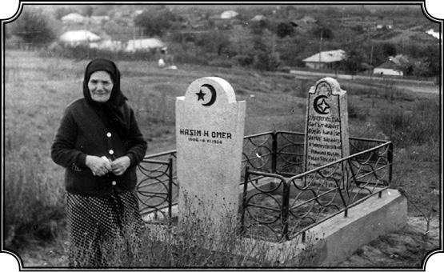
Anne Zübeyde Hanım Armutlu köyünde kocasının mezarı başında (1966).
Onların gözünde anavatan, hep “anavatan” derlerdi Türkiye’ye, alabildiğine büyütülmüş, bir altın ülke, altın içinde yüzen bir ülke olarak gösterilmiş. “Türkiye’ye gidince bize arazi verilecek, toprak verilecek, hayvan verilecek, her şey verilecek ve refah içinde yaşayacağız” diye düşünmüşler. Bunun da izahı kısmen o zaman Türkiye’nin Balkanlar’dan nüfus çekme gayretlerine bağlanabilir. Çünkü Dünya Savaşı’ndan, İstiklal Savaşı’ndan çok sayıda insan kaybederek çıkan Türkiye’nin nüfusa ihtiyacı vardı. Daha önceleri Rumeli’nde kurulan yeni idareler, Bulgar idareleri, Rumen idareleri, Sırp idareleri buradaki nüfusu zorlayarak çıkarır, Türkiye’ye yolcu ederlerdi. Şimdi ise tam tersi olmuş, Türkiye bunları çağırıyordu ve kanunlara göre de onlara şu kadar toprak verilecek, ev verilecek falan deniyordu. Aslında hiçbiri nasıl toprak verileceğini, nereye gidileceğini, ne yapılacağını bilmiyor. Bilinmediği için de hayaller içinde yaşayarak, büyük arazilere, büyük mal mülke sahip olacaklarını düşünüyorlar. Hâlbuki o devirde Türkiye gelişmiş bir yer değil. Türkiye’ye göre Romanya çok daha mükemmel. Dobruca toprakları çok münbittir, iklimi çok müsaittir, çok güzel bir yerdir. Ondan sonra onlar, Türkiye’deki çeşitli yerlere yerleştikten sonra “ah biz ne yaptık, oradaki altın toprakları bırakıp nasıl geldik” diye pişmanlık duydular, fakat geri dönüş yoktu. Benim üzerimde derin intiba bırakan anılar bu göçler sırasında Armutlu köyündeki akrabalarım, arkadaşlarımla ilgilidir. “Gideceğiz, gitmeyeceğiz, toprakları sattık, satmadık” tartışmaları içinde bir baktık hazırlanmış, gidecekler. Gidecekleri gün bizim evin karşısında oturan Salih Dayı’nın avlusunda toplandılar. Gidecek olan sekiz-on arabaya sonradan Yayla’dan ve başka Türk köylerinden gelecek köylüler katılacak ve koskoca bir kervan oluşacaktı. Bu göçmenler, yerini yurdunu terk ederek Köstence’ye gidecekler ve oradan da gemiyle anavatana geçeceklerdi.
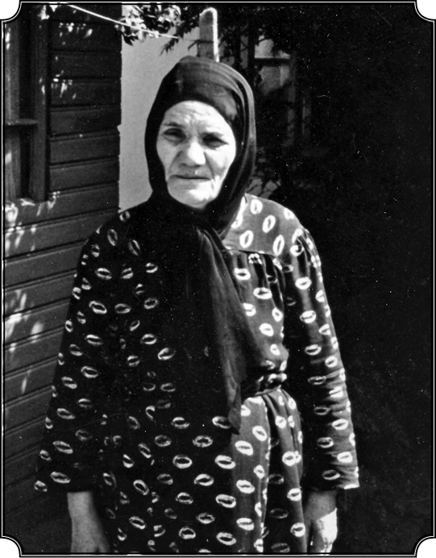
Anne Zübeyde Hanım (81) Robert Kolej’in bahçesinde (1968).
Yıl kaç?
1935 civarlarında.
Siz o zamanlar 12-13 yaşlarında olmalısınız?
O civarlarda, 12 yaşlarındayım. Nihayet diğer köylerden arabalar da geldiler, yol kenarına dizildiler uzun bir sırayla. Tanımadığım insanlar, çocuklar hatta köpekler, kediler arabadan indiler, “hadi hazır mısınız vatana göçüyoruz, hadi hazır mısınız gidelim” diye, fakat bizimkiler “daha bekleyiniz” dediler. Babadağı’nda oturan ve imamlık yapan ve bize de biraz akraba olan Salim Hoca tam hareket edilecekken, “Durun!” dedi. O zaman ben ilk defa tarihle, göçün, acının kaynaştığını gördüm. Salim Hoca’nın geçmişinin ne olduğunu, bilgisinin nereden geldiğini bilmiyorum fakat orada çok etkileyici bir nutuk çekti: “Biz bu topraklara gelmişiz, burada herkesle kardeş gibi yaşamışız. Kimseye fenalık etmemişiz, burası bizim vatanımız. Dedelerimiz, büyük dedelerimiz yüzlerce yıl burada yaşamış, hepsi burada gömülü. Bu topraklar bizim kanımıza işlemiş ve şimdi biz kurbanız. Gidiyoruz, vatanımıza dönüyoruz. Bir rüya varmış bir zaman, rüya bitti, dönüyoruz vatana. Buraları terk ediyoruz. Mağlup olarak dönüyoruz.” Evet, böyle bağırarak, heyecanlanarak devam etti: “Gerçi yenildik ama yok olmadık. Şimdi yeni bir geleceğe doğru gidiyorsunuz. Ve siz geleceğin kahramanları, hadi çıkarın kalpaklarınızı.” Rumenler, Bulgarlar toplaşmışlar seyrediyorlar; “Hadi kalpaklarınızı çıkarıp bu adamlara selam verin” diye bitirdi. Kalpak çıkarmak orada hürmet ifadesidir, herkes kalpağını çıkardı ve sonra tekrar taktı, sonra Salim Hoca, “Hadi yürüyün artık” dedi ve arabalar yavaş yavaş yola koyuldu. Yola koyuldular ama yavaş yavaş, bayır yukarı ya yol da biraz, atlar sanki gitmek istemiyorlar, sanki o toprakları terk etmek istemiyorlar gibi adımlar ağır ağır, istemeye istemeye atılıyor. Ve kafile yavaş yavaş köyümüzden, topraklarından çıkmaya başladı; köpekler havlıyor, gitmek istemiyorlar onlar da. Ne kadar acıymış göç; yurdundan vatanından ayrılmak ne kadar acıymış. Kim olursa olsun Allah korusun. Zorla kopar gibi, arabalar gıcırdayarak, atlar istemeyerek, kadınlar ağlayarak, çocuklar ağlayıp sızlayarak, erkekler başı öne eğik, arkaya bakmamaya gayret ederek Köstence’nin yolunu tuttular. Ormana doğru giden yol, mezarlığın yanından geçiyordu. Tam mezarlığın orada sanki bir emir verilmiş gibi bütün arabalar durdu. Herkes arabadan indi, çoluk çocuk mezarlığa dönerek, avuçlarını açarak dua ettiler. O manzara hiçbir zaman gözümün önünden silinemez. Yurduna, her şeyine veda edip giden bir sürü insan durmuş dua ediyor. Ve sonra kervan tekrar yola koyuldu ve yavaş yavaş tozlar içinde eridi gitti. Nereye? Anadolu’ya. Sonra akşam o evler, hayat dolu evler kapkaranlık, bomboş oldu. Baykuşlar oraya geldi hemen, sanki oradan ölü çıkmış gibi acı acı bağırdı. Bir süre göçmenleri takip eden köpekler bir yerde durup, sılaya, terk ettikleri yere geri döndüler. Evlerine döndüler, havlayarak sahiplerini aradılar. Sahipleri ise Anadolu yolunu tutmuş gidiyorlardı. Havladılar, havladılar, havladılar kimse onlara kapı açmadı, yemek vermedi. Etraf bomboştu. Ondan sonra tekrar geldikleri yola dönerek, giden arabalara ulaşmaya çalıştılar. Bazıları ulaştı, bazıları yolda ölüp kaldı. Yani köpek dahi vatanı, doğduğu yeri terk etmek istemiyor. Ya insan! İnsan ne yapsın? Sonra ben Türkiye’ye geldikten sonra gidip o göçmenleri iskân edildikleri yerlerde gördüm. Aksaray’da, Sağlık Köyü’ndeki göçmenlerin arasında benim en sevdiğim, yakın arkadaşım Ahmet vardı. Bahsettiğim Nuri Ağa’nın çocuğu Ahmet…
Ateş böceklerine, “şehitlerin kandili” diyen…
Evet. Nuri Ağa’nın oğlu Ahmet, benim çok yakın arkadaşımdı. Biz “arkadaş” derdik, dost kelimesi kullanılmazdı orada. Dost, sevgili manasınaydı. Niğde/Aksaray’ın Sağlık Köyü’ne gittim. Orada iskân edildiğini duymuştum. Ahmet’in öldüğünü öğrendim. Çok çalışkan, güçlü bir çocuktu. Dereye girmiş ot biçmek için, su rahat aksın diye otu biçecek. Zatürre olmuş, ölüp gitmiş; acı işte. Orada bazı köylülerimi gördüm. Orada başlamıştı karışım, onu gördüm. Akrabam olan Fehim’in karısı ölmüş ve oradan yerli bir hanımla evlenmiş, ondan da bir çocuğu olmuş. Birisi Orta Anadolu şivesiyle, diğeri Rumeli şivesiyle konuşarak, bana, “Hoş geldin” dediler. Rumeli’ye nazaran çok daha başka adetler var tabii. Diğer bir akrabam küçük bir kahve açmış; yeni bir hayat. Ondan sonra, bir kısmı seneler sonra göçüp İstanbul’a geldiler. Bazılarını İstanbul’da buldum. Bazıları Trakya’da iskân edildi, Malkara’da. Birkaç Babadağlı, Eskişehir’de iskân edildi, onların bir kısmını da gittim buldum. Babadağ’daki hayatlarıyla yeni hayatlarını karşılaştırarak ne kadar değiştiklerini, göçün ne kadar önemli bir değişim faktörü olduğunu gördüm. Sonraları bunu göçlerle ilgili kitabımda yazdım, yani bu insanlardan bahsetmedim ama çok objektif, başka ölçüler içinde köyden şehre göçü ve insanın değişimini sağlayan çok önemli faktör olarak göçü inceledim. Belki de benim göçlere karşı ilgim, daha küçüklükte karşılaştığım bu olaylarla bağlantılıdır.
Bu konuyu Türkiye’de Toplumsal Dönüşüm, Kırsal Göç, Gecekondu ve Kentleşme adlı kitabınızda incelemiştiniz galiba?
Evet, o kitap. Ama o yıllara daha çok var. Şimdiye kadar hep bu ortamdan bahsettim, babamdan bahsettim, annemden bahsetmedim. Annem, babama nazaran çok farklı bir kimse idi. Sakin, insansever, çok duygulu, derin sezişi olan, gösterişsiz bir kadındı. Fakat ondaki insan sevgisi, fark gözetmeden herkese yardım etme arzusu, hiç kin tutmaması, onu benim gözümde çok yükselten nitelikler olmuştur.
Dut ağacının altında bekleyen anne
Evet, annenizi, Zübeyde Hanım’ı, dinleyelim biraz.
Ben annemi babamdan farklı hatırlıyorum. Babam benim fikir dünyama tesir ettiği nispette, annem de duygu dünyama tesir etmiştir. Fakat sözü ile söyledikleri ile değil, hareketleri ile örnek olarak tesir etmiştir. Sonsuz bir çocuk sevgisi, evlat sevgisi, bizim ailelerde bulunan şey. Fakat bunu o kadar ince ve sessiz şekilde yapardı ki fark etmek bile imkânsızdı. Fazla konuşmazdı, daha fazla tecrübeye, dinlemeye yatkın bir insandı. Fakat diğer taraftan mesela en küçük bir rahatsızlık geçirirsen veyahut da başka bir aile geçirirse, en yakından meşgul olurdu. Bize ihtimamla bakar, gece kalkar, üstün örtülmüş mü örtülmemiş mi kontrol ederdi. Benim hatırımda kalan en güzel misallerden bir tanesi şuydu. Bazen çıkar kırlarda dolaşırdım, eve geç gelirdim, eve gelme zamanı gecikince (bizim evler büyüktü, avluları vardı) avluya bir giriş kapısı vardı, ana kapı, orada beni beklerdi. Kapının yanında bir dut ağacı vardı, bir avuç dut toplar, avucunda dutlarla beni beklerdi. Sonra ben geldiğim zaman, “Benim şoparım nerede kaldı” diye takılıp bana o dutu verirdi, sarılıp eve girerdik. Hani o kadar ince, o kadar duygu dolu bir hareketti ki ben onu unutamam. “Şopar”, biliyor musunuz ne demektir?
Çingene?
Evet, Bizde “şopar” diye Çingene çocuklarına denirdi. Ben de biraz belki onlar gibiydim, böyle yalınayak gider, gezerdim. O da takılırdı, “Benim şoparım nerede kaldı” diye. Hislerini kolay kolay ortaya atmazdı. Onun heyecanlandığını gösteren en açık işaret gözyaşıydı. Heyecanlandığı zaman hemen gözyaşı dökerdi ve o gözyaşı onun için bir çeşit deşarjdı diyebilirim.
Kaç yaşındaydı sizi doğurduğunda?
Annem beni doğurduğunda 40’ına yaklaşmıştı. Babamdan altı yaş küçüktü. Annem 1887 yılında doğmuştu. Ben 1923’te doğmuşum, benden beş yıl sonra da kardeşim Cemal doğdu.
Peki, babanızla nasıl tanışmış?
Orası oldukça ilginç bir konu. Babam o bölgenin ileri gelen bir ailesinden, zengin, tanınmış. Ve anlattıklarına göre de gayet yakışıklı. Babamı oranın bir başka tanınmış ailesi Bekir Efendi’nin kızıyla evlendirmek istemişler. Okumuş, güzel bir kadınmış da… Fakat babam, annemi görmüş, Topalova diye bir yer var, annemin doğduğu yer, orada görmüş, hani aşk değil belki ama derin bir ilgi duymuş ona karşı. Ve bütün ısrarlara rağmen, kendisi için seçtikleri kadınla evlenmemiş, nispeten daha mütevazı bir aileden gelen annemi tercih etmiş ve onunla evlenmiş.
Peki, yüzünü görmüş mü önceden, tanışmışlar mı? Yani peçe, çarşaf var mıymış o zamanlar oralarda da?
Annem peçe takmazdı fakat başına “çarşaf” dediğimiz şeyi takardı. Kendine mahsus bir başını bağlama şekli vardı. Türban değildi; başörtüsü gibi, siyah bir çarşaf. Çok tertipliydi, temizdi, her işini böyle en ufak teferruatına dikkat ederek yapardı ki bu tarafını kardeşim Cemal kapmış, bende o yoktu. Annemin abisi, dayımız Rifat da fevkalade güzel konuşan, fevkalade hikâye anlatan ve şarkı söyleyen, sözü ile adeta herkesi büyüleyen, aslında sakin bir adamdı. Bana göre annemin çok derin bir iç dünyası vardı ve bunu olur olmaz ortaya atmazdı. Bir bakıma belki bu bende de var. Çünkü bazen ben de çok defa içimde daha fazla yaşarım bazı şeyleri. Nadir de ola sevdiklerime (bilhassa kadınlara) onları ne kadar sevdiğimi bir türlü anlatamam. Dış görünüşümle iç görünüşüm arasında bir hayli fark vardır. Annem fevkalade güzel, lezzetli yemek pişirirdi. Hatırlarım akrabalarımıza giderdik, onlar da aynı yemeği yapardı, aynı malzemeyi kullanırlardı ama annemin yemeğinin tadı onlarınkinde yoktu. Ben yemek pişirmeyi de bir sanat olarak biliyorum. Çünkü hakikaten aşçıdan aşçıya fark vardır. Birisinin pişirdiği yemeğin tadı diğerinde yoktur. Bu nereden geliyor, bu soruyu çok defa ben kendi kendime sordum. Çünkü ben de yemek pişirirdim ve benim yemeklerim de çok lezzetlidir. Üstelik ben yemek pişirmeyi Amerika’da öğrendim, Amerikan yemeklerine alışamadım, alışamayınca da iş başa düştü ve ondan sonra annemin dolmalarını, köftelerini, “hamur aşı” dedikleri hamur yemeklerini hatırlamaya başladım. “Acaba annem nasıl yapıyordu bunları” diye düşünmeye başlayınca yavaş yavaş sırrını çözdüm bu yemeklerin. Ve sonra baktım ki benim yaptığım yemekleri de misafirlerim beğeniyor, ondan sonra biraz daha açıldım. Değişik şeyler de denedim, türleri değiştirdim, ondan sonra evime Amerikalıları davet ettim, onlara yemek pişirdim ve hepsi yemeklerimi çok beğendiler. Bir ara yirmi-yirmi beş kişiyi davet eder, yemek pişirirdim. Hâlâ yemeklerimi kendim yaparım ve davet ederim insanları. Herkes yemeklerimin çok lezzetli olduğunu söyler. Ben de diyorum ki herhalde burada da annemden gelmiş bir şey vardır. O devirlerde aşağı yukarı her şeyi en doğal şekilde kendimiz üretiyor ve en doğal şekilde yiyorduk. Et, yağ, benzeri şeyler, hepsi alabildiğine boldu. Fakat annem hiçbir zaman yağlı yemek yemez, bize en nefis yemekleri pişirir, kendisi iki patates kaynatır onu yerdi.
Niçin?
Benim için anlaşılması güçtü. Sanırım onun kendi vücuduna karşı bir anlayışı ve hürmeti vardı. İçtiği içki kahveydi. Sabah beşte kalkar on bir, on ikiye kadar çalışır, her şeyi hazırlar, sonra yatar bir saat kadar uyur, kalkar ve o zaman bir kahve içerdi. Sade Türk kahvesi… Şeker meker yemezdi. Bu şartlar altında yetişmiş bir kadın olan annem, sekiz çocuk doğurdu ve 87 yaşında vefat etti. Gayet sıhhatli bir kadındı. Çok acılar, yalnızlıklar çekti fakat uzun da bir ömrü oldu.
Vefat sebebi neydi?
Felç geçirdi, tansiyonu vardı, kendisine ilaç, tansiyon düşürücü ilaçlar verdik, bir müddet aldı, ondan sonra almadı.
Türkiye’de mi öldü?
Türkiye’de vefat etti. Babam, Romanya’da vefat etti. Kendi doğum yeri olan Armutlu’da gömüldü, mezarı oradadır. Babam öldükten, ben de gittikten sonra ablalarım da zaten evlenip evden ayrılmışlardı, annem bir süre tek başına evde kardeşim Cemal’le kaldı. Türkiye’ye gelişi çok çok sonradır.
Ve bir kış komünizm gelir…
Romanya’da yeni rejimle de yaşadı yani.
Evet, Romanya’da köyde kaldı önceleri. Artık babadan kalan o malı mülkü kendisi idare ediyordu. Ben hatırlıyorum, trene bineceğim Babadağ’dan Türkiye’ye gelmek için, evden istasyona kadar yürüyerek gittik. O sürekli ağlıyordu, ağlaya ağlaya istasyona kadar geldi ama, “Oğlum gitme” demedi bana hiç. Üstelik beni fazla da görmemişti, çünkü ben ileride anlatacağım gibi, senenin büyük kısmı Mecidiye’de yatılı okuyordum. Onunla tatillerde görüşüyorduk. Bütün çocuklar yaramaz olurlar fakat benim yaramazlığım ve durmadan hareket etmem artık orada dillere destan olmuştu. Bazen “Dur, rica ederim sakin ol” dese de onu dinlemez gene bildiğimi yapardım. Yaptıklarım onu üzerdi ama bir şey söylemezdi hiç, yani ondan bir azar işitmedim. Kendi âleminde yaşayan bir kadındı, fazla dindar değildi, inançlıydı ama gösterişli bir inançtan yana değildi, gösterişi asla ve asla sevmezdi. Gençliğinde güzel bir kadınmış. Ağzı burnu, resimlerden görüyorum gayet düzgün, hoş. İşte bu şekilde herkese iyilik yapan, kimsenin aleyhinde bir söz söylemeyen bu kadın, hiçbir kabahati olmaksızın rejim değişince, her şeyini kaybetti, yollara düştü.
Nasıl yollara düştü? Ne olmuş o dönemde?
Evimiz, dediğim gibi bahçeli ve büyüktü. Mal mülk de vardı, bir kısmı satılmıştı ama onları idare ederek geçiniyordu. Ben, İstanbul’a geldikten sonra oradan bana para gönderecek, ben de tahsilime devam edecektim. Fakat 1944’te, 1945’te, Doğu cephesinde Almanlar yenik düşünce çekilmeye başladılar ve her zaman olduğu gibi Dobruca, Rus askerlerinin geldiği, geçtiği bir yer oldu. Rus askerleri geçiyor ve köylerde konaklıyorlar. Bizim evde konaklamak için iki-üç subay gelmiş, annem onları gayet güzel karşılamış, en güzel odalarda yer vermiş, üstlerine örtecek yorganlarını vermiş. Ama o gelenler gece kendilerine konaklamak için verilen her şeyi yorganlar dahil, sabahleyin kalkıp giderken toparlayıp yanlarına alıp gitmişler. Kadın kimden soracak, kimden isteyecek? İmkânı yok. Olaylardan birkaç sene evvel “Demir Muhafızlar”, şu faşistler, iktidara geldiğinde de bir grup evin önüne toplanmış ve doğrudan anneme haykırmışlar: “Senin memleketin burası değil, Türkiye. Git buradan!” Tek başına yalnız kadın, küçük çocuk var ya Cemal biraderim, fena şekilde o da korkmuş ve bu şekilde hadiseler devam etmiş.
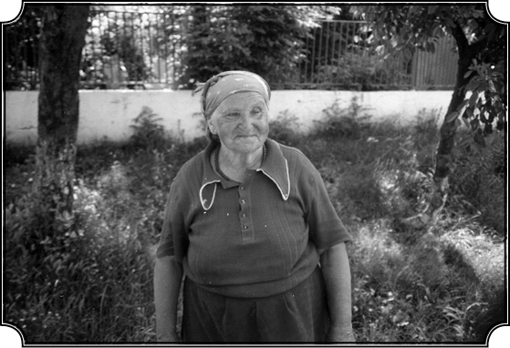
Gafya. Romanya’da komünistler iktidara geldiğinde Zübeyde Hanımın evine el konulup sokağa atılmıştı. Anne Zübeyde de fotoğraftaki Gafya’nın evine sığınmış (1998).
Malını, mülkünü nasıl kaybediyor?
1950’lerde kolektivizasyon başlamış. Şimdi anlatacağım bizzat annemin anlattığı bir olaydır: Annemi, Armutlu Belediyesi’ne çağırmışlar. Komünist rejim gelmiş, insanlar orada dizilmiş duruyor. “Evet” demişler “sen mallarını devlete hibe ettin, tamam mı?” Annem demiş ki, “Nasıl veririm, benim çocuklarım var, onların malı mülkü bunlar.” “Yok” demişler, “biz bir şey dinlemeyiz, hibe etmezsen seni hapse atacağız, çürüteceğiz, sen iyisi mi şurayı imzala, hibe ettim diye.” “Ne olduğunu anlamadım” demişti annem anlatırken. Sonunda tabii imzalamış, parmak basmış yani. “Hah tamam, teşekkür ederiz” demişler “sen malını varlığını, neyin varsa hepsini devlete devrettin.” Ne olduğunu anlamıyor hâlâ annem. Evine dönüyor. Ev, Belediye’den iki yüz-üç yüz metre kadar uzakta. Eve ulaşıyor, bir bakıyor bir sürü Rumen içeri girip evde ne varsa hepsini sokağa atmış ve anneme “sen buraya giremezsin artık, bu senin evin değil” demişler. Böylece yapayalnız sokakta kalmış. Ne yapacak? Bir komşusu var Kirila isminde, tanırdım. Bu Kirila da köyün zenginleri arasındaydı ama o kadar zengin değildi. Nihayetinde otuz dönüm arazisi ve evi vardı. Fakat o da rejim düşmanı olarak apar topar evinden alınmış uzun yıllar hapiste kalmış. Mallarını almışlar ama evini bari bırakmışlar karısına, o da Rumen olduğu için. Annem Türk olduğu için tabii evi dahil her şeyi almışlar. İşte annem onun karısının evine gitmiş, orada barınmış ve o kışı, iki kadın beraber geçirmişler. Ben o sırada Amerika’ya gitmiştim, haberim yok bunlardan. Yalnız gece kötü kötü rüyalar görüyordum. Yani biraz ben de bunlara inanırım bu telepati dediğimiz şeylere. Kabuslu geceler yaşıyorum ama ne olduğunu bir türlü anlayamıyordum, meğerse o zaman bu olaylar cereyan ediyormuş. Yiyecek yok, yatacak yok, yakacak yok… Annem biçare kalmış.
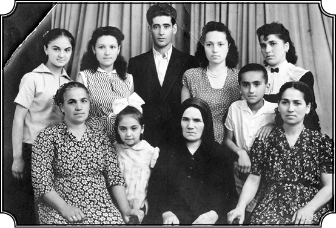
Bir aile fotoğrafı. Bu fotoğraf Amerika’daki Karpat’a bir kart olarak gönderildi. Annesi Zübeyde Hanım ortadaki, siyah giysili ve başörtülü (70 yaşında). Sol başta büyük abla Nazmiye, sağ başta küçük abla Adviye, en arka sırada solda ise Ayşe Melahat görülüyor, Adviye ablasının kızı. Güney California Üniversitesi’nde Orta Asya ve Rus Tarihi profesörü olarak görev yapıyor. Kemal Karpat bu yeğenini bizzat kendisi yetiştirmiş. Bu fotoğrafın çekildiği 1955 tarihinde ise 13 yaşında ve Köstence Lisesi’nde öğrenci. Onun yanında Sebiha (Nazmiye Hanımın kızı). Hâlâ Babadağ’da oturur. Karpat arada onu ziyaret eder.
Kardeşleriniz nerede bu arada?
Cemal’i de askere almışlar, o zaman 19-20 yaşlarına gelmiş işte.
Kemal Karpat’ın Romanya’da faşizm ve komünizm dönemlerini art arda yaşayan ailesinin çektiği acılardan yola çıkarak kaleme aldığı Ağustos 2008 tarihli mektup yazarın yaşanmışlıklar üzerinden “komünizm” ve “faşizm” kavramlarına bakışını özetliyor.1
Annemin evden atılmasını, elinde avucundaki her şeyin “devlete hibe” edilmesinin komünist rejim sonucunda olduğunu algılayanlar olabilir. Hâlbuki durum çok daha karışıktır, çünkü anneme uygulanan sert muamele doğrudan doğruya şoven milliyetçiliğin sonucudur. Annem, Müslüman ve Türk olduğu için “komünist” ajanlığı yapan eski milliyetçi demir muhafızların (garda de fer) hışmına uğramıştır. Durumun anlaşılması için bazı açıklamalar yapmam gerek.
İki dünya savaşı arasındaki dönemde tüm Balkan ülkelerinde hâkim olan siyasi rejimler, aşırı etnik milliyetçi idiler. Geri kalmış olmalarını Osmanlı’nın kötü idaresine, baskısına ve sömürücülüğüne yüklemekte idiler. O ülkelerde yaşayan Müslüman ve Türkler, geçmişi hatırlatan, geri bir rejimin kalıntılarını ve milli topraklarda, kültürden “temizlenmeleri” gereken kimseler olarak görülmekte idiler. Bulgaristan’da, Yugoslavya’da yaşayan Müslüman ve Türklerin kötü muamele görmelerine karşılık Romanya, 1938’e kadar Türklere oldukça geniş haklar tanımıştı. Fakat 1938’den sonra şoven milliyetçiliği ön plana alan “demir muhafızlar” güçlendikçe tüm azınlıklara -başta Yahudiler ve Macarlar olmak üzere- ülkenin yabancıları ve Rumen milletinin “temiz kanını” kirleten “aşağı” güruh olarak muamele etmeye başladılar. Alman Nazi rejiminin Romanya’da etkisi artıkça, Rumen milliyetçiliği daha da azdı. Romanya’da ayrıca büyük sosyal sorunlar vardı. Büyük arazi sahiplerinin ve yabancı sermayenin sömürdüğü fakir köylü kitlesi sosyal adalet istiyordu. Verimli topraklar ve alabildiğine engin ormanlara, akarsulara sahip Romanya köylerinin fakirliği üzücü idi. Romanya’da o tarihlerde Türklerin yaşadığı Dobruca, topraklarının verimliliği, ikliminin ılımlı olması gibi nedenlerle oldukça müreffeh bir hayata sahipti.
1941’de Romanya, Almanya ile birlikte Sovyetler Birliği’ne savaş ilan ederek Sovyet topraklarını işgal etmeye başladı, Dobruca’nın kuzeye, yani benim yaşadığım bölge, iki ay kadar savaş bölgesi olarak zor günler geçirdi. Tulca, hemen hemen her gün bombalanıyordu, hatta bir gün akrabaları şehirden çıkarıp daha güvenli bir yere götürmek için Tulca’ya gittiğimde ben de Sovyet uçaklarının bombardımanına yakalanmıştım. Bir ara pasif koruma ekibinde, gece ışıkların yakılmamasını kontrol eden ekipte hizmet görmüştüm. Savaş 1943-44 yıllarında Almanya aleyhine dönünce Rumen ve Alman orduları Dobruca üzerinden geri çekilmiş, nihayet Romanya 1945’te Almanya aleyhine dönüp Sovyet ordusu ile işbirliği yaparak, Almanları Rusya’dan atmıştı. “Demir Muhafız” liderleri Almanya’ya kaçmışlar, fakat onların ikinci ve üçüncü derecede önemli elemanları Romanya’da kalmış, korku içinde akıbetlerini beklemeye başlamışlardı. Bu arada eski geleneksel Rumen siyasi partileri (Iuliu Maniu’un Köylü Partisi, Bratianu’nun Liberal Partisi) tekrar kurulmuş, fakat kısmen Sovyetler desteği ile kurulan Sosyalist Parti daha büyük güç kazanmıştı. Böylece 1946-48 yılları arası Romanya’da ve Bulgaristan’da kurulan sosyalist partiler bazı sosyal reformlar gerçekleştirerek, azınlıklara eşitlik, kendi dillerinde gazete ve kitap haklarını tanıyarak ülkede halkın desteğini kazanmışlardı. Demokrat bir sosyalizmin hakim olduğu bu başarılı dönem, Soğuk Savaş’ın 1946-47’de patlaması ile kısa süre sonra yerini daha aşırı bir siyasete terk etmiştir. Nato’nun kurulmasına karşılık Sovyetler, Varşova Paktı’nı vücuda getirerek kendi tesir alanına giren ülkelerin (Romanya, Bulgaristan, Polonya, Macaristan vs.) iç ve dış siyasetini yakından kontrol etmeye başlamıştır. Romanya’nın öteden beri Batı’ya çok yakınlık duyduğunu, hatta Latin kökenli olduğunu ileri sürmesinden ve Batılı olduğunu açıkça söylemesinden kuşkulanan Sovyetler, Romanya üzerindeki kontrolünü 1950-58 yılları arasında alabildiğine genişletmiştir. Rumen Komünist Partisi’nin üye sayısı 1940’lara kadar bin kişiden fazla değildi. Soğuk Savaş’ın gittikçe kızışması ve Romanya’nın NATO’ya kaymasından korkan Sovyetler, 1950-51’de yerli komünist partisini güçlendirmiş ve onu işbaşına getirmeye karar vermiştir. Demokrasi taraftarı eski partiler kapatılmış, liderleri tutuklanmış, Romanya’nın çok parlak entelektüelleri, demokrat yazarları hapse atılmış ve sosyal adalet adına eskiden hor görülmüş, sömürülmüş halk kitlelerini temsil eden “gerçek demokratlar” işbaşına getirilmiştir. Bu yeni demokrasiyi, Sovyetlerin ihtiyaçlarını ve Soğuk Savaş icaplarını yerine getirecek “ideolojik emir Kulları”nı yönlendiren iki ana güç vardı: Birincisi, parti adına hareket eden polis ve kısmen ordu idi. İkincisi, “bu emir kulları”nın temel kültürleri ve eğitimleri idi. Bunlar arasında daha evvel sözünü ettiğim ikinci ve üçüncü derece mevki sahibi olan binlerce eski “demir muhafızlar” her şeyi yapmaya hazırlardı. Gerçi bunların önemli sayılanları ve daha sonra “gerçek komünistler” yetiştirildikten sonra “legionar” olarak tanınlar işten uzaklaştırılmış, hatta tutuklanmışlarsa da birçoğu “komünist” partisi olarak hizmet görmeye devam etmişlerdir. Şoven milliyetçilikleri, üstünkörü kabullendikleri sosyalist ideolojiden daha ağır basmıştır. Benim doğduğum, büyüdüğüm evin, babadan kalma mülklerin “millileştirilmesi” ve annemin sokaklara atılması –yani evrensel olayların kişiselleşmesi ve birçok kabahatsiz kimsenin hayatını mahvetmesi yukarıda çok genel anlattığım koşullar içinde gerçekleşmiştir.
Türklerin ve bu arada annemin 1945’ten sonra daha ağır muamele görmeleri, baskıya maruz kalmaları, Türk olmaları ve dolaylı olarak Türkiye’nin güttüğü dış siyasetin bir sonucu idi. Türkiye’nin 1946’da Soğuk Savaş’ın ana nedeni haline gelmesini (Sovyetler’in boğazlarda üs ve Kuzeydoğu Anadolu’da arazi istemesine karşılık ABD’nin Truman Doktrini ile karşı gelmesi) Türkiye’nin Batı-Doğu bloklarının tamponu olması, Sovyetler idaresinde ve çevresinde yaşayan tüm Türkleri ve Müslümanları şüphe altına sokmuştur. Böylece Romanya’da yaşayan Türkler anavatanları Türkiye’nin Batıyı tutması nedeniyle muhtemel “casus”, “sabotajcı” olarak görülmeye başlanmışlardır. Bundan istifade eden eski Rumen şoven milliyetçileri Romanya’da ve bilhassa Dobruca’da yaşayan Türklerin ileri gelenlerini kamplara sürmüşler, hapse atmışlar, okullarını kapatmışlar. Hatta Köstence (Dobruca’nın en büyük kenti) belediye başkanı bir konuşmasında “Dobruca’da tek bir Türk izi bırakmayacağız” diye övünmüştür.
Sonuç olarak diyebilirim ki, en iyi niyetli rejimler, doktrinler tahmin edilemeyen çeşitli etkiler ile yön ve renk değiştirerek baskı aracı olabildikleri gibi, masum kişileri mahvedebilirler. Annem ve benim doğup büyüdüğüm ev, işte böyle gelişmelerin kabahatsiz kurbanı olmuştur, ama dünya çapındaki gelişmeler hiçbir zaman suçsuz, masum insanların farklı dillerinden, dinlerinden dolayı zulme kurban edilmelerini meşru göstermez.
Kızlar nerede?
Kızlar evli. Bir tanesi Babadağ’da, bir tanesi Köstence’de. Vasfiye ablam vefat etmişti. Anlatıyordu rahmetli annem; “O kadar soğuktu ki, Kirila’nın karısı ile aynı yatakta yatıyorduk, ısınmak için birbirimize sokuluyorduk.” Orada o kışı bu şekilde geçiriyor annem ve nihayet Köstence’de Adviye ablamın yanına gidiyor. Türkiye’ye gelinceye kadar orada kaldı. Ben onları 1958 senesinde ziyaret ettim, on altı sene ayrılıktan sonra annemi, kardeşlerimi gördüm. Tabii yaşlanmış, çökmüş, fakat hâlâ o kafa dinçliği, hâlâ o insan sevgisi, hâlâ o hoşgörüsü dimdik ayakta. Zaman zaman ettiği tek şikayet şuydu: “Ne istediler benim evimden, ne istediler? Ne yaptım ben onlara, evimi aldılar, çocuklarımın doğduğu, büyüdüğü, kocamın vefat ettiği evimi, bizim yaptığımız evi. Bunu bana niye çok gördüler, niye aldılar evi?” Tek şikayeti buydu. “Allah belalarını versin, lanet olsun onlara” şudur budur gibi beddualar etmiyordu, ağzından kötü söz çıkmıyordu. Evi aldılar. Niye aldılar? Türk olduğu için. Sonra da anlatacağım gibi ailemi Romanya’dan çıkarmak benim ana hedefim oldu. Onları orada gördükten sonra, on altı sene evvel çiçek gibi evleri olan, fevkalade yaşamı olan ablalarımın, annemin hepsinin o rejim tarafından insanlıktan çıkarıldığını görünce dedim kendi kendime, “ben bunları burada bırakmam, bırakamam.”
Ve bırakmadınız da…
Evet. Bizim devletin, bilhassa şahsen iyi tanıdığım Süleyman Demirel’in yardımıyla kurtardım onları. Demirel’in Rumen hükümetine nota verip ailemin Romanya’dan çıkmasına izin verilmesini istemesiyle 1967 yılında ailemi Romanya’dan çıkarıp İstanbul’a getirebildim. Köstence’deki ablam ve ailesi, sonra Cemal ve onun ailesi ve annem.
Anne ve babanızın birbirleriyle ilişkileri nasıldı? Yani evin içinde birbirlerine nasıl davranırlardı?
Çok iyi davranırlardı, geleneksel aile saygısı, hürmeti vardı. Hiçbir zaman kavga ettiklerini görmedim. Bizim evde küfür yoktu. Bilhassa babamın anneme ve kızlarına karşı fevkalade açık, güzel sözlerle davranışları vardı. Biz erkek çocuklara, bilhassa bana biraz daha sert davranıyordu çünkü beni zaptetmek bir hayli güçtü. Ama bazen bize karşı takındığı sert tavırları hiçbir zaman kızlara karşı takınmamıştır. Ablalarım babama taparlardı adeta, o kadar çok severlerdi. Babam anneme karşı da gayet saygılıydı. Annem de hiçbir zaman babama göz önünde “Haşim” diye hitap etmezdi ama aramızda konuşurken, başkalarıyla konuşurken, “Haşim’e söyledim” falan derdi. Babam ona, Zübeyde demezdi, “Zübüş” derdi ve biz de annemizin ismini Zübüş olarak bilirdik. Araları gayet iyiydi ama bir yerde bizim geleneksel ailelerdeki baba hâkimiyeti ve kadının ona tabi olması vardı. Babam ona sorardı, “Zübüş şu işe ne dersin, ne yapalım” falan diye, o da, “Böyle olsa daha iyi” falan derdi. Bizim bugünkü modern ölçüler içinde ileri seviyede eşit kişilik münasebetleri bulunmamakla beraber, bence yine de çok güzel, hürmetkâr, geleneklere saygı gösteren, büyüklere saygı gösteren bir ilişkileri vardı. Ve ben de kendi ailem olsaydı öyle bir münasebet görmek isterdim. Bu kadar değişik yerler gördüm, bu kadar değişik yaşam şekillerine şahit oldum, bu kadar değişik aile tipleri gördüm, dünyanın her tarafında, gezdiğim dostlarımda gördüm ama yine de bunlarla karşılaştırdığım zaman ben kendi ailemde gördüğüm düzeni çok sağlam buldum. Belki yüzde yüz eşitlik yoktu ama karşılıklı bir hürmet vardı, biz çocuklara karşı da hakkaniyetle, muhabbetle hareket ediliyordu.
Sanatkâr bir aile
Okuma yazması var mıydı annenizin?
Yok gibi bir şeydi. Yani mahalle mektebine biraz gitmiş mi ne, oraları pek de bilmiyorum. Babamda ne nispette entelektüel birikim varsa, yani babam o şartlar altında eğitimini, medrese eğitimini ne kadar almışsa da annemde o eğitim yoktu. Babam ne kadar entelektüel ise, durmadan kafasıyla uğraşıyorsa, fikir üretip gözetliyorsa, annem de o derece ruhuyla, ruhsal dünyasıyla yaşayan bir insandı. Fazla dindar değildi ama dindar bir kimseden beklenen, en yüksek vazifeleri yerine getirebilecek bir kimseydi. Yani diyebilirim ki annem Müslüman kalmakla beraber, laik anlamda en yüksek sıfatları haiz bir kadındı; iyiliği, insanlığı hep çok önde tutardı. Bu tavrını, duygularını dine bağlamaz, insanlığa, insan oluşuna bağlardı. Misal olarak şunu söyleyebilirim: Fazla eğitim görmemekle beraber, kendi annesinden öğrendiği bir çeşit halk doktorluğu vardı onda.
Şifacılık gibi?
Şifacılık. Ne yapardı? Yaraları iyi ederdi ama burada tatbik ettiği yöntem, tamamı ile bilimsel yöntemdi aslında. Alır yaralarını temizlerdi, kim olursa olsun, Müslüman, Hıristiyan ayırt etmezdi. Yaraları temizledikten sonra, kendisinin bitkilerden yaptığı birkaç merhem vardı, onlardan bazılarını sürerdi duruma göre. Karıştırarak sürdüğü de olurdu. Merhemin birinde kül, birinde sakız ilavesi olduğunu hatırlıyorum. Teferruatını bilmiyorum ama onlara “tatlı merhem” ve “acı merhem” derdi. Her merhemin bir fonksiyonu vardı. Bir merhem yarayı temizler, mikropları öldürür, diğer merhem iyileştirirdi çabucacık. Ama o bununla yetinmez, bunun üstüne bir terapi tatbik ederdi. Benim hatırladığım ve beni etkileyen olaylardan biri şudur: 19-20 yaşlarında bir Bulgar çocuğu, kırda bir silah bulur. Silahla oynarken, kendini yaralar. Genci hastaneye kaldırmışlar, iyileşmiş kısmen. Fakat kolunu oynatamıyor. Acı çekiyor. Yarası da var, sancıları da. Hastaneden taburcu etmişler, nereye gidecek? Anneme geldi. Annem baktı, “Oğlum, bak ben seni iyi yaparım” dedi ve iki ay bu Bulgar çocuğunu tedavi etti merhemleriyle, bir sürü şeyle ve terapiyle, kollarını ovarak, hareket ettirerek. Fizik tedavi uyguladı yani. Yavaş yavaş o kol düzeldi, işler hale geldi. Asla ve kata para da almazdı, ancak merhemin parasını alırdı o kadar. Bulgar çocuğunu iyi etti ve bu çocuk sonra evlendi. Kendi yortularında karısıyla beraber, birer tavuk pişirip anneme, getirir, “şükranlarını” sunardı. Bunun gibi birçok hadise vardı.
Annenizin bu bilgisi nereden geliyordu, ablalarınızdan hiçbiri bunu devam ettirmedi mi?
Annem de galiba bunları annesinden öğrenmişti. Ama kimse bunun köklerinin üzerine gitmedi, ablalarım da bunları öğrenip sürdürmediler. Annemle birlikte bu bilgiler de yok oldu gitti. Benim küçüklüğümde, üzerimde derin etki bırakan bir aile sahnesi vardır. En küçük ablam Adviye şiir yazardı. Kendine göre babamdan işittiklerini, okuduklarını hikâye şekline sokardı ve gene konuşulanlardan ilham alarak, bazı şiirleri okur ve babam onları uduyla seslendirirdi. Bu gibi sahneler her gün olmasa da tekrarlanırdı ve ben onlardan büyük haz duyardım. Hatırımda kalan bir şarkı ve seslendirme Altaylar meselesiyle ilgiliydi. 6 yaşındayım, Altayların, İdil’in ne olduğunu bilmiyorum fakat aklımda kalmış. “Altaylardan atlarla bir çıktık, İdil’e geldik, İdil boyunda durduk, atları besledik, çoğaldık. Sonra gene yürüdük Batı’ya doğru, Geldik Tuna’ya. Orada karar verdik…” falan gibi bir şiir, ablam yazmış, babam da onu seslendiriyor, ben de dinliyorum. Bu gibi şeylerin derin etkisi olduğu da muhakkaktır, yani ‘biz kimiz, nereden geldik, ne yaptık’ gibi soruları soruyorduk kendimize. Geçmişimize karşı bir ilgi uyanıyor. Tabii o devirde bunun ırkçılıkla, Turancılıkla bir alakası yok. Bu nihayet bir şiir, sanat olayı. Fakat bunun bir köy evinde, bir baba kız tarafından yapılması, ailemin içindeki havayı anlatır işte. Köydeki tarih, biraz da hayallere, muhayyileye dayanan şeyler oluyor. Bir başka küçük nokta annemle ilgili. Annem harika derecede güzel halk oyunları oynarmış, böyle derlerdi. Ben görmedim, işittiklerim böyleydi. Bazen ona takılırlardı, “şöyle oynardın böyle oynardın” diye. O geleneksel hayat içinde düğünler tamamı ile bizim Türk usulleri içinde yapılırdı. Davul vardı, zurnanın yerine klarnet ve buna benzer aletler kullanırlardı. Çalgıcılar, Umurlar köyünden gelirlerdi. Çünkü köyün hepsi, birkaç aile istisna edilirse müzisyendi ve oradan düğün yapacak olan gider, istediği müzisyeni seçer, arabasına doldurur, düğüne getirirdi. Ve hepsi de bizim şarkıları bilirdi. O düğünlerde hatırlıyorum, beni oynatırlardı. Oyun içinde koluma bir şey bağlarlardı, onunla oynardım, “baksana, annesinden kalmış, bak ne güzel oynuyor, ne güzel dans ediyor” falan derlerdi. O zaman merak edip sorardım anneme, “Sen oynuyor muydun” diye, annem de “Yapardık gençliğimizde” derdi. Fakat tanıdıklarına sorduğum zaman annemi göklere çıkarırlardı: “Ahh! Bir oynardı bir oynardı ki, öyle güzel figürleri vardı ki herkes onu seyretmeye gelirdi” falan, yani demek istediğim ailemde sanat tarafı da, tabii fakat basit şekliyle mevcuttur.
Uçbeyliğinden Türkiye’ye bakış
Annenizin kökeni nereden geliyordu?
Annemin babası, orada Osmanlı Devleti hâkim iken vazifeli olarak annemin bulunduğu bölgeye, Topaloğlu’na (Topalova) gelmiş. Kendisi Sazlık İnegöllüydü. Orada annemin annesiyle nişanlanmış, sonra 1877 harbine katılmış ve kendisinden uzun zaman haber alınamamış. “Herhalde bu harpte öldü” diye anneannemi başka bir adamla nişanlamaya karar vermişler. Tam nişanın yapılacağı gün dedem dönmüş gelmiş ve evlenmişler. Sonra annem doğmuş, yani bu şekilde bir taraftan Anadolu’dan gelmiş, bir taraftan Kıpçak kökleri var. Ve Türkiye’de buluşuluyor. Bu yalnız benim için değil, birçok kimse için geçerli.
Yani sizin oradaki varlığınız, çok enteresan bir şekilde Dobruca’nın tarihiyle çakışıyor. Bir kol Orta Asya’dan, kuzeyden steplerden gidip Dobruca’ya yerleşiyor, bir kol Anadolu’dan Çanakkale’den Sarı Saltuk Obası’na geliyor, orada buluşma oluyor. Sizin de baba tarafı kuzeyden geliyor, anne tarafı Anadolu’dan geliyor ve orada buluşuluyor.
Evet. Aynen böyle oluyor.
Bu ilginç çakışmaları nasıl yorumladınız?
Yani ben bunların önemini çok sonra kavradım ama şurası da muhakkak ki bu olayların hikâyesini aile içinde Hatça halamdan işite işite ufkum açıldı. Yani, “Artık ben yalnız Armutlu köyünde doğmuş, büyümüş bir adam değilim” dedim kendime. Bir bakıyorsunuz dedelerim Kıpçak’tan, Kırım’dan, Akkerman’dan gelmiş, diğerleri Anadolu’dan gelmiş. Birdenbire küçücük Armutlu Köyü bütün dünyayla ilişki kurmuş hale geliyor. Ve bu ilişkiler benim ailemde, benim şahsımda ve benim gibi olan diğer kimselerde var. Bizim köyde bulunan herkesin hikâyesi benim hikâyeme benzer. Yalnız fark şurada: Onlar hiçbir zaman bunun bilincine varmamışlar. Ben ise nedense bunun bilincine varmışım. Bu da herhalde benim kimliğimin ve varlığımın oluşmasında büyük bir rol oynayan özelliğimden, farklılığımdan kaynaklanıyor.
Babanız mesela, Atatürk’le yaşıt. O kuşağın gençleri, I. Dünya Savaşı’nı yaşamışlar, ondan öncesini yaşamışlar ve sonrasını yaşamışlar. Babanız bu anlamda siyasetle uğraşır mıydı? Yani kafa yorar mıydı? Dünya nereye gidiyor, Avrupa nereye gidiyor, Osmanlı İmparatorluğu nereye gidiyor? Bu konu evde annenizle tartışılır mıydı?
Fazla tartışılmazdı. Çünkü olayların teferruatını bilecek, tartışacak fazla kimse yoktu. Fakat babam bunları anlardı. Sık sık Türkiye’ye gelir, burayı ziyaret ederdi. Hatta bu Türkiye’ye gelip gitme babamdan evvel başlamış. Dedem buraya gelip arazi almış Bandırma’da, “Buraya gelir ev yaparız” düşüncesiyle. Ve burada olup bitenlerle yakından ilgiliydiler.
Atatürkçü müydü?
Yüzde yüz Atatürk ve inkılâp taraftarıydı, o konuda şüphe yok. Zaten benim ismimi de Kemal koymasının nedeni buydu: Kemal Atatürk’e olan hayranlık. Doğduğum yıl zaten 1923. Fakat diğer yandan da bilhassa bu ilk devirlerde, Cumhuriyet’in ilk yıllarında yapılan bazı değişikliklerin, bizim tarihimizi, kökenimizi zedeleyebileceğini de düşünerek endişelenir, “Bunları yapmasaydılar daha iyi olurdu” gibi sözler sarf ederdi.
Mesela neler bunlar? Harf devrimi, şapka devrimi gibi konularla mı ilgiliydi?
Harflerle, şapka gibi kılık kıyafetle değil de başka şeylerle ilgiliydi biraz. Kendisi de şapka giyiyordu zaten, kalpak giyiyordu. Yazları fes giyerdi, kışın kalpak giyerdi, fakat şapkası da vardı, şapka giyerdi, yani onlar büyük mesele değildi. Fakat onun korktuğu şey özümüze, temel kimliğimize, benliğimize zarar verebileceğinden korktuğu bazı hareketler ve uygulamalardı. Bunlardan çekiniyordu.
Mesela?
Mesela ezanın Türkçe okutulması gibi. Gerçi bu gibi uygulamalara da doğrudan karşı çıkmamıştı. Fakat bir tereddüt seziyordum, yani inkılâplara karşı (o zamanlar “inkılâp” deniyordu). İnkılâplara karşı gelmek ya da Atatürk’ü sorgulamak gibi bir niyeti yoktu. Asla. Fakat Halk Partisi’ne karşı biraz tereddütleri vardı. Ondan sonra eski devirden kalma birçok değerli insanın bertaraf edilmesini, yani Osmanlı devrinden gelen bir sürü kıymetli adamın (bazen isim söylüyordu) bir tarafa itilmesini hoş karşılamıyordu. Bu gibi şeyleri sorguluyordu, ama bunları ne dereceye kadar bilerek yapıyordu veyahut da bunun arkasında yatan düşünceler tam olarak neydi onu bilmiyorum. Fakat şüphesiz ki hiçbir zaman değişime karşı değildi. Onun büyük derdi kimliğine, benliğine sadık kalmak, özüne sadık kalmaktı (ki aile düzenimiz, kültürümüz, yaşayış tarzımız bunun üzerine kuruluydu, derdi buydu). Mesela annemin babasının İnegöl’den geldiğini söyledim. Fakat bir Kırım kökeni de vardı annemin. Bucak’ta da yani babamın dedelerinin geldiği yerlerde de Kırım Hanlığı ile Osmanlı Devleti ortaklaşa hüküm sürdüğü için iki lehçenin, yani Osmanlı lehçesiyle Kırım lehçesinin konuşulması normaldi. Onun için bizim evde bazen annem ve babam Kırım lehçesiyle konuşurlardı. Fakat bizimle, çocuklarla her zaman Türkçe konuşurlardı, yani Anadolu Türkçesiyle, Osmanlı Türkçesiyle. Bu konuda herhangi bir tereddüt yoktu, yani bizim dilimiz Türkçe, ana dilimiz Türkçe, onun yanında Rumence konuşuyoruz ama Dobruca’da başka Türk kolları da vardı. Mesela dili Kıpçakçaya çok daha yakın olan Nogaylar vardı. Onların bölgesi vardı Mahmudiye diye. Tulça, Mahmudiye gibi yerlerde onlar da yaşardı. Bizim ailenin Kıpçak kökeninin bir tarafı Nogaylara da gidebilir. Ben o tarihlerde böyle tarih bilincine tam manasıyla vakıf olmadığım için bunları not etmedim. Yoksa hepsi daha teferruatlı, daha kesin şekilde anlatılabilecekti. Babam 1938 yılında vefat etti. İşte ben o zaman 14-15 yaşındaydım ve böylece daha küçük yaşta öksüz kaldım ve bundan sonra hayatı kendi başıma tayin etmek zorunda kaldım.
“Doğu-Batı sınırı”nın geçtiği yer
Ama yaşadığınız Dobruca’da bir taraftan din vasıtasıyla kendi benliğinizi koruyorsunuz, diğer taraftan da çok dinli, çok kültürlü bir toplumda, İslam’ın daha dünyevi yorumlarını benimsemiş bir topluluk olarak İslam’ın genelinden de ayrılıyorsunuz…
Bizim ailede bütün bunlar çok bilinçli bir şekilde yaşanırdı: Cumhuriyet ve Osmanlılık, birbirinin devamı idi, Türklük, Müslümanlık aynı idi, vesaire... Orada Türk-Müslüman özdeşliği vardı, kimse Osmanlı demezdi, hep Türk lafı edilirdi. Bilhassa Babadağ toplumu çok geleneksel bir Osmanlı-Türk toplumuydu. Fakat bunların üstünde, modern bir Avrupa toplumu vardı ki bu Romanya idi. Romanya, Latin bir ülkedir ve Rumence, Latin kökenli bir dildir, telaffuzu hafiften İtalyancaya benzer. Romanya, geniş çapta Fransa’nın desteğine sahip olarak milli bir devlet haline gelmiştir. Eflak’la Boğdan birleşerek 1858’de Romanya olmuştur.
Yani Osmanlı aslında böyle bir devletin kurulmasına göz yumuyor ya da uygun görüyor?
Tabii, o zaman Eflak’la Boğdan Osmanlı hâkimiyeti altındaydı ve Osmanlı’da Ali Paşa bunu uygun görmüştür. Orada bir devlet kurarak Rusların, Balkanlar’a inmesine engel olmak istemişler ve böylece Romanya bu şekilde Eflak’la Boğdan’ın birleşmesiyle ortaya çıkmıştır. Erdel dediğimiz bugünkü Transilvanya ise o tarihlerde Macaristan’ın hâkimiyetindeydi fakat orada da büyük bir Rumen topluluğu yaşıyordu. Dolayısıyla orada büyük bir Rumen milliyetçiliği vardı ve Rumenler kendilerinin Latin kökenli olduklarını keşfetmişlerdi. Böyle olunca da 1830’lardan sonra yetişen Boğdan ve bilhassa Ulah (Eflak) entelijensiyası, Rumen Hıristiyan entelijensiyası, Batı’ya, bilhassa Fransa’ya karşı özel bir ilgi ve sevgi beslemeye başlamıştır. Fransa da, Orta Avrupa’da kendi siyasetini güdecek bir altyapı aradığı için Rumenlerin Latinliğini kabul etmiş ve Rumenlerin birinci derecede destekçisi olmuştur ki halen de böyledir. İşte Romanya bir milli devlet olup ve bilhassa 1878’den sonra tam özgürlüğünü kazandıktan sonra yüzünü büsbütün Fransa’ya dönmüş ve her şeyini Fransa’dan almaya başlamıştır. Kanunlarını vesairesini. Böylece Rumen entelektüeli Batı modeline göre yetişmiş. Alabildiğine Fransız meyilli bir toplum yetişmiş. Ama halk içinde geniş çapta geleneksel kökenleriyle yaşayan Kıpçaklar vardır. Hıristiyanlaşmış Kıpçak’tır, Rumenlerin bir kısmı. İçlerinde Peçenekler de, Rumlar da, Bulgarlar da var. Yani Rumenler de bir karışımdı ama muhakkak ki orada Romalıların etkisi çok kuvvetli. Çünkü dilleri Latin kökenlidir, yani Roma askerlerinin yerleşmesinden de kaynaklanan bir kimlik var, yani çok karışık ama Rumen alt sınıflar genellikle daha fazla Doğu’ya dönüktür. Orada da bu Doğu (Oryantalizm) ve Batı tartışması vardır. Rumen hayatında da büyük bir tartışmaya neden olmuştu bu köken meselesi: “Biz neyiz? Batılı mıyız Doğulu mu? Nereden geliyoruz, nasıl oluştuk?” Biraz da bizde olduğu gibi. Ama onlarda din farkı yoktu. Onların ekseriyeti Ortodoks Hıristiyan’dır. Bu bakımdan dinleri Avrupa’ya katılmalarına, oraya yönelmelerine bir engel oluşturmamıştır. Benim açımdan, bu yönleriyle de ilginçtir Rumenlerin kökenleri ve Batı’ya yönelmeleriyle ilgili tartışmalar.
İlginç tabii ki... Çünkü Roma etkisi ve dili, Romalı askerlerin oraya yerleşmesiyle başlıyor. Ama din olarak Doğu Roma, yani Bizans İmparatorluğu’nun benimsediği Ortodoksluğu benimsiyorlar. Nasıl oluyor bu?
Evet, orası Bizans’la sınır aslında. Doğu Roma ile Batı Roma İmparatorluklarının sınır bölgesi. Ama oraya Hıristiyanlık buradan gitmiştir, İstanbul’dan. Rumenlerin Transilvanya’da yaşayan bir kısmı ise Roma Kilisesi’nin hâkimiyetini kabul etmişlerdir ve onlar kısmen Katolik’tir. Dilleri ve kilisedeki ayinleri Ortodoks’tur ama Roma’ya tabidirler. Romanya’da entelektüel öncülük ve modernleşme çabaları çoğu kez bu “birleşik” kiliseye mensup Transilvanya Hıristiyanlarından gelmiştir.
Yani orada hem Türk-Müslüman nüfusun başladığı yer olarak, hem de Hıristiyanların kendi içinde Ortodoks-Katolik olarak doğu-batı ayrımı geçerli…
Evet. Yaygın değildir. Komünistlik zamanında kiliseleri ve kendileri Ortodoks ilan edilen bu kimseler son yıllarda kendi kimliklerine dönme mücadelesi içindedirler.
Her iki dine göre de Doğu-Batı sınırının oradan geçtiğini düşünüyorsunuz. Ve bu sınır bölgesinde doğal olarak, Ortodoksluk Katoliklikle, Müslümanlık Hıristiyanlıkla ve Türkler, Latin-Slav kavimlerle iç içe geçmiş, karışmış durumda?
Evet, sınır oradan geçiyor. Bu durumun, tüm bunların Rumen entelektüel hayatında da çok önemi vardır, Rumen entelektüel hayatının öncüleri Transilvanya’dan gelmiştir. “Katolik” dediğimiz kısmı da, Katolik Kilise’ye tabi bölgeden gelmiştir.
Bir söyleşinizde doğduğunuz yeri anlatırken, “Ben orada, Doğu ile Batı kültürünün çatışmasını ve çakışmasını izledim, yetişme günlerimde” diyorsunuz. Sizce Doğunun sınırı nerede bitiyor, Batı nerede başlıyor? Yani kültürle mi, dinle mi, coğrafyayla mı, insan yapısıyla mı? Neyle ayırıyorsunuz Doğu ile Batı’yı orada?
Kültür ve dinle ayrılıyor. Öyle bir şey oluyor ki Ortodoks kendini hakiki Hıristiyan sayıyor, yani, “ilk kurulan Hıristiyanlığın temeli biziz” diyor, “Hıristiyanlığı biz olduğu gibi koruduk” diyor. “Çünkü Hıristiyanlık burada doğmuştu, bu tarafta, Ortadoğu’da doğmuştu. Kudüs’te, bugünkü Filistin’de doğmuştu ve biz onu koruduk ve onu kendi ruhuna, geleneğine göre değiştirdik, Roma Kilisesi ise ayrıdır” diyor. Diğer taraftan da imparatorluk yetkileriyle beraber dini merkez olma yetkilerini de elinde tutmuş olan Roma “Hayır, merkez ve en üst otorite biziz diyor!” Bu, kilise tarihi ile ilgili ilginç bir tartışmadır ama bir yerde Roma duruma hâkim olmuştur. Çünkü Roma İmparatorluğu siyasi bakımdan Anadolu’ya ve Balkanlar’a hakim olduktan sonra, elinde tuttuğu bölgelerin din bakımından da Roma’ya tabi olmalarını sağlamıştır. Ortadoğu’da bulunan İstanbul, Antakya, Kudüs kiliselerini de idari olarak Roma’ya bağlamıştır. Kiliselerin başını Roma tayin ediyordu. Yani kiliselerin idari yönetimi ve hiyerarşisi bakımından da Roma’nın bir üstünlüğü vardır. Bu ilk yüzyıllar için geçerli bir durum. Ama Roma’nın hâkim olamadığı ve ilerde bölünmeye yol açacak olan durum, gelenekler ve kültürel farklılık ile ilgiliydi. Hıristiyanlık malum, Ortadoğu, Antakya ve Anadolu’nun çeşitli yerlerinde gelişmiştir. Buralardaki topluluklar kültür bakımından, gelenek bakımından, Roma’nın tesirinde kalmadan kendi geleneklerine göre ilk Hıristiyanlığı geliştirmişlerdir. Roma İmparatorluğu idari olarak 4. yüzyılın sonlarında Doğu ve Batı olarak ikiye ayrıldı ve bir yüzyıl kadar sonra Batı Roma yıkıldı ama dinsel ve kültürel ayrılık (Katoliklik ve Ortodoksluk olarak), 8. yüzyıl ile 11. yüzyıl arasında keskinleşmiştir. Bu iki kilise çatışmasını sürdürmüş ve nitekim 1054’te fiilen, bunların “büyük şizm”, yani “büyük ayrılık” dedikleri kilise bölünmesi gerçekleşmiştir. 1054’te iki kilise birbirinden ayrılmış ve düşman olmuştur ve o zamandan beri, birbiriyle barışmanın yollarını arıyorlar.
Papa’nın ziyareti (2006 Kasım) de bu ayrılığı gidermek içindi. Ama galiba daha önce de birtakım adımlar atılmış, 1960’larda karşılıklı Aforozların kaldırılması gibi?
Evet, Papa’nın bu İstanbul ziyareti de bu şizm’e, ayrılığa, ikiliğe son vermek için atılmış adımlardan birisidir. Daha önce Aforozları kaldırdılar karşılıklı ama onun çok bir önemi yoktu. Bu adımların hepsi aslında asıl amaca doğru yaklaşmak amacıyla atılmıştır. Asıl amaç ise Roma’nın üstünlüğünü kabul ettirmektir.
Demek ki bugün Avrupa’da ve Amerika’da, yani Batı dünyasında, “Hıristiyan Batı dünyasında” diyelim “Doğu” denilince insanların aklına İslamiyet ve Türklüğün başladığı yerden sonrası geliyor, yani oradan itibaren sınırlar başlıyor. Hâlbuki 10. yüzyıla kadar, 11-12. yüzyıla kadar “Doğu” denildiğinde, Doğu Roma İmparatorluğu ve Ortodoks Kilisesi’nin sınırları anlaşılıyor, değil mi? Ve bu sınır da Romanya’nın tam ortasından geçiyordu…
Doğru. O ayrım, yani Hıristiyanlar arasındaki ayrım bugün de devam ediyor fakat bugün Müslüman-Hıristiyan ayrılığı ön plana geçtiği için Hıristiyanlığın kendi içindeki ayrılıklar ikinci plana düşmüş gibi gözüküyor. Fakat bunlar mevcut ve ağırlıkları var.
Ama Doğu Roma İmparatorluğu’nun sınırları Osmanlı İmparatorluğu tarafından devralındığında, yani Ortodoksluğun salt bir din ayrımı olarak kaldığı dönemin başından itibaren bu “Doğu misyonunu” da Osmanlı devralmış değil mi?
Tabii, Osmanlı Devleti bir bakıma Bizans’ın devamıdır. Yani Osmanlı, Ortodoks Hıristiyanlığın müdafii, savunucusu olmuş ve böylece bu topraklarda Ortodoks Hıristiyanlık bütün gücüyle hayatını korumuştur. Bu açıkça yazılmıştır. Mesela Kudüs Patriği Anthimos’un 1790’larda yazılmış Daskalikia adlı çok meşhur bir kitabı vardır. Bu kitapta aynen şöyle yazmıştır: “Allah, Sultan’ı, Ortodoks Hıristiyanlara hediye olarak göndermiştir, onların iyiliği için, varlıklarını korumaları için göndermiştir.” Bunu Anthimos diyor.
Evet, bir kitabınızda bundan bahsediyorsunuz.
Evet, ama bunu hiç kimse bilmiyor, söylemiyor. Rumların ve Patrikhane’nin işine gelmiyor ve bunun gibi birçok konuşulmamış şey daha var. Kısaca söylemek gerekirse, Osmanlı zamanında Ortodoks Hıristiyanlık yalnız muhafaza edilmemiş, aynı zamanda durmadan gelişmiştir ve bugüne kadar bir merkez olarak yaşayagelmiştir. İstanbul Patriği dahil, Sultan’ın baş destekçisi olmuşlardır. Çünkü Bizans tarihinde dahi patrik, Osmanlı’da olduğu gibi güç sahibi olmamış, Osmanlı’daki patrik adeta Hıristiyan Ortodoksların padişahı haline getirilmiştir. Patriklik Osmanlı döneminde böyle bir güce ulaşmıştır. Niye sevmesinler Sultanı? Bugünkü patrikler o şaşaalı dönemlerini arıyorlar. Neyse benim anlatmak istediğim, ben bir taraftan Müslüman-Türk olarak Romanya’da yetiştim fakat benim etrafımı saran ve gittikçe güçlenen çevre modern Batılı çevreydi. Fakat bu modern Batılı çevre de kendi içinde bir Doğu-Batı ayırımına sahipti. Böylece, küçüklükten itibaren din ve dil alanında nispiliği, rölativizmi gördüm ve bu konuları o şekilde anlayarak, dile getirmeyi, düşünmeyi, görmeyi öğrendim.
Tembel kitap kurdu
Şimdi siz hem medresede hem de Rumen okulunda okudunuz, değil mi?
Evet, ben ilkokulu köyde bitirdim. Okuldaki en büyük keşfim, okulun kütüphanesi oldu. Bizim köy okulunun 600-700 kadar kitabı vardı orada, onları keşfettim. Okumayı öğrendikten sonra, oradan kitaplar alıp okumaya başladım. Derslerime de çalışıyordum ama parlak bir talebe miydim okulda? Değildim. Daha o devirde böyle parlak olayım, birinci olayım gibi bir hırsım, hevesim yoktu. Daha çok bir şeyler öğrenmek, anlamak, keşfetmek, dünyamı tanımakla meşguldüm. Ama okulu birincilikle bitirdim. Nasıl oldu? Anlatayım. Sene sonundaki toplantıya “müsamere” derdik orada biz. Rumencesi “serbare”, eğitim yılı kapanış töreni anlamına geliyor. Orada şiirler söylenir ve 1.’ler, 2.’ler, 3.’ler duyurulur tebrik edilirdi. Tabii bu törenlerde benim ablalarım da olurlardı. Duyurular başlardı, “1.’liği falanca sınıftan şu aldı, filanca sınıftan bu aldı.” Benim sınıfıma gelince bizimkiler bakarlar, 1.’liği, burnu kitaptan çıkmayan ben alamamışım. Tabii herkes beni ders çalışıyor zannediyor ama ne okuduğumu kimse bilmiyor ki. 1. Kemal değil, 2. Kemal değil, 3. Kemal değil. “Aaa yahu ne kadar berbatmış bu bizim kardeş” derlerdi herhalde. Yani bayağı üzüldüklerini anlardım, bana söylemezlerdi ama böyle yüzleri düşmüş şekilde törenden dönerlerdi. Ondan sonra baktım, acıdım. “Yahu bunları memnun edeyim, ablalarım iyidirler, onlar artık üzülmesin, bari şöyle biraz da ders kitabı okuyayım” dedim. Okudum, 1. oldum, hiç de zorluk çekmeden yani. “Ooo” dediler, herkes memnun oldu yani. Babam bilhassa, her yere gittiği zaman gururla, “Oğlum, okulun 1.’siydi bu sene” falan derdi, bense aldırış etmezdim. Yani benim derdim 1.’lik, 2.’lik falan değildi. Şimdi okul meselesine gelelim ki bu benim hayatımda son derece önemli ve bugünkü yaşamımı etkileyen, yani bugünkü yaşamımı tayin eden gelişmedir.
Evet, okul yıllarını biraz da yaşanan çevre koşullarıyla, ortam özellikleriyle birlikte dinlesek, çerçeveyi tamamlamak için…
Şimdi, ilkokulu köyde bitirdim bu şekilde. Okulu bitirdiğim zaman 11’e basmıyordum daha, çünkü 5 yaşında gitmiştim okula. O tarihte soru şuydu: “Nereye vereceğiz bu çocuğu? Sen okumak istiyor musun Kemal?” Cevap, “Evet”, tabii ki… O zaman Tulça’daki liseye kaydoldum. Tulça vilayetin merkezidir. Osmanlı kayıtlarında “Tulçi” olarak geçer. Tuna’nın güney kolu üzerindeki bir liman şehridir. Tuna’dan Karadeniz’e geçen gemilerin uğradığı bir limandır. Genellikle Dobruca’ya gelen mallar Tulça’dan nakledilir, Tulça Limanı’na boşaltılırdı. Tuna’nın denize üç koldan döküldüğü, kavuştuğu görülür. Kili kolu en kuzeydedir ki Kili Kalesi oradadır. İkinci kolu Sünne koludur ki çıkışta, Karadeniz’e ulaştığı yerde de “Sünne” isminde Osmanlı kayıtlarına geçen bir kasaba vardır. Nihayet üçüncü kolu Aya Gorgi koludur. İşte Tulça, Sünne ve Aya Gorgi’nin ayrılmasından evvelki kol üzerindedir. Tulça o devirde 30-40 bin nüfuslu bir şehir olup vilayet merkeziydi ve orada bir lise vardı. Tulça bizim köye 30 kilometre mesafededir, yani birkaç saatlik yoldur. Arabayla bugün yarım saat. Tulça’ya gitmekle ilk defa ailemden ve köyümden ayrıldım ve bu bana çok acı geldi. Çünkü yetişmem itibarı ile hayat tarzı itibariyle ailemin, köyümün dışında bir başka yaşam bilmiyordum ve aileden ayrılıp bir ailenin yanında oda kiralayarak kalmam, o yalnızlık ve bilhassa o yaşta ayrılık, bana çok acı geldi. Meğerse ayrılık benim ezeli yazgımmış çünkü ondan sonra bir yerde bir daha uzun müddet kalmak pek nasip olmadı. Aile şefkati, sıcaklığı görmedim. Tanıştığım, beğendiğim her kadında eğlence değil, başta biraz şefkat, gerçek sevgi aradım ve bulamadım.
Şimdi yaşadığınız Wisconsin, Madison’ı saymazsak…
Evet, ama Madison gene de orta yaşların sonunda yerleştiğim bir yer oldu. İlk gurbeti yaşadığım Tulça’daki lisede ilk olay bir bakıma benim hayatımda ve kariyerimde sonuçları itibarı ile büyük iz bıraktı. Derslere başlandı, 1. sınıftayız. Ama bu orta 1 demek oluyor tabii. Lise, yedi sınıftı galiba. İlkokuldan sonra lise başlıyor ama ilkokuldan itibaren eğitim yılı olarak konuşursak demek ki 6. yılım. Orada ortaokul 1. sınıf, lise sayılırdı. Bir gün Fransızca dersi vardı ve lisede benden ve dördüncü sınıftaki Kadı’nın oğlundan başka Türk yoktu. Ben birinci sınıftayım, ismim Kemal, otuz-kırk kişilik sınıfta tek Türk benim, derhal göze çarpıyor. Dersimiz Fransızca, hoca “Albinet Dede” isminde biri. İlk derste, “bu penceredir, bu tavandır, bu kapıdır, bu döşemedir” gibi Fransızca kelimeler öğretti. “Şimdi bakalım” dedi “sizin içinizde bunu bilecek var mı?” Listeye öylesine bir göz attı ve derhal benim ismim gözüne çarptı; “Kemal” dedi, “gel bakalım, söylediklerimi sen de Fransızca olarak söyle. Hoca “bu bir kapı diyor”, ben hemen Fransızca söylüyorum, “bu bir pencere” diyor, ben Fransızcasını söylüyorum. Tabii hocanın ve kimsenin bilmediği husus, ne olur ne olmaz diye Babadağ’da ailem beni Fransızca öğretmeninin yanına göndermişti ve ben birkaç ders Fransızca almıştım ve bunları biliyordum. Bu nedenle hocanın anlattıklarını doğru bir şekilde tekrar etmek bir mesele değildi benim için, kolayca tekrar ettim. Adam hayret etti “bravo, aferin” dedi ve bana orada 10 üzerinden 9 verdi. Bu büyük bir hadise oldu okulda. Benim ismim Kemal ama kimse bana Kemal demezdi, “Türk, Türk” diye çağırırlardı, işte herkese, bütün okula böyle yayıldı; “Şu Türk var ya bizim sınıfta, Fransızcada her şeyi bildi ve 9 aldı.” Ve ondan sonra yorumlar yayıldı: “Yahu bu Türk nasıl bilir Fransızcayı ve nasıl 9 alır?” “O bilmemiştir.” “Niye 9 verdi hoca?” “Herhalde hocaya rüşvet verdi de onun için 9 aldı” filan gibi dedikodular aldı yürüdü. Gerçek benim söylediğim gibiydi ama. Fakat ondan sonra herkesin kafasına takıldı Rumen öğrenciler varken benim yüksek not almam. Bu Fransızca hocamız gitti, onun yerine daha genç birisi geldi ve ondan sonra başka hocalar geldi falan ve hepsi durmadan beni derse kaldırıyor, “Dur bakalım bu çocuk hakikaten o kadar biliyor mu” diye. Bir öğrencinin bir konuyu ne kadar biliyor olması değildi mesele, bir Türkün böyle parlak şekilde bilmesiydi. Bu durum onlara ters düşüyor, çünkü aşağı görüyorlar Türkleri. Dersler böyle devam etti ama ben bu sırada büyük bir keşif yaptım. Orada kitap kiralayan bir mağaza buldum ve her gün iki-üç kitabı yüklenerek, 3-5 kuruş kirasını vererek eve gidiyor, sabahlara kadar roman, hikâye ne alabiliyorsam okuyordum. Bu okuma aralıksız devam etti. Gece gündüz devam etti, arada sırada ders çalışıyorum ama derse pek önem verdiğim yok, benim merakım o kitaplar, onları okuyorum durmadan.
Neleri okudunuz? Klasikleri?
Henüz klasikleri okumamıştım. Hikâyeler, macera kitapları vardı; onları okuyordum. Planlı, düzenli seçilmiş bir okuma programı değildi, rastgeleydi. Sene sonu geldi, millet hâlâ benimle uğraşıp duruyor. O 9’u hak etmediğimi ispat etmeye çalışıyorlar. Çok lanet bir hoca vardı, beni ikmale bırakmış. Öbür derslerden geçmişim, son derslerinin bir tanesinde de gene bir ikmale kalmışım ama “eh” diyorum “ben bu ikmali veririm, geçerim.” Sonbahar geldi, ikmal imtihanını verip öğrenci işlerine gittim. “Ah be sen başka bir dersten de ikmale kalmışsın, o dersin ikmal imtihanı dün idi, sen gelmemişsin, onun için sınıfta kalmışsın” demezler mi. “Nasıl olur” dedim, kıyametler koptu, çok üzüldüm ağlamaya başladım. Çünkü bir haksızlığa uğradığım aşikârdı ama bunu kime söyleyeceksin? Orada Türk olarak, yabancı olarak yediğim çok acı bir darbedir bu ve bende devamlı bir iz bırakmıştır. Çaresizlik. Eve döndük, köye geldim, durumu babama anlattım. Düşünün, ailenin içinde ilk defa, ilk mektebin ötesine gidecek kişi benim ve babam rahmetli, “bu çocuğu okutacağım” diye karar vermiş, geldiğimiz noktaya bakın. Babamın beni okutma kararlılığına bizzat şahit olmuştum üstelik. Bir toplantıda, konuşmasında şöyle diyordu “Eski usullere uydum, çiçek gibi kızlarım okumak istediler, okutmadım onları, ananelerimize sözde sadık kalarak onları ilkokulla sınırlandırdım ve anladım ki bir insanı serbest bırakmak lazım.” “Ben” dedi, “Kemal’i serbest bırakacağım, karışmayacağım, istediği gibi olsun, istediği gibi yetişsin.” Bu karar beni çok etkilemiştir. Çünkü hakikaten birçok yerde beni tenkit etmekle, hatta bazen pataklamakla beraber, serbest düşünmeme, gelişmeme ve onurlu yaşamama ihtimam gösterdiğim yerde hiçbir zaman karşıma çıkmamıştır.
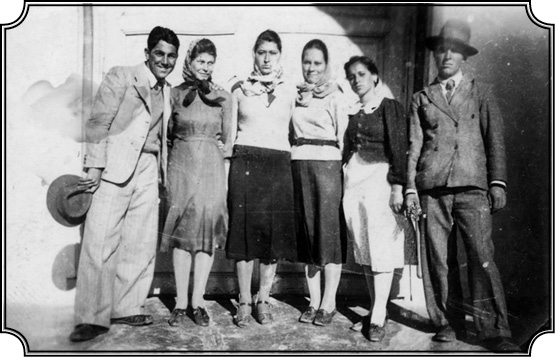
Karpat 1940 yılında Armutlu’da akraba ve arkadaşları ile birlikte.
Babanızın okuldaki olaya tepkisi ne oldu?
Bu olaydan sonra eve döndük ve “ne yapacağız”ı konuşmaya başladık. Sınıfta kalmayı kendime yedirememiştim. Çünkü sınıfta kalacak bir adam değildim. Evet, doğru vaktimin büyük bir kısmını kitap okuyarak, roman okuyarak, bilmem ne okuyarak geçirmiştim, ders kitaplarına gereken önemi vermemiştim o da doğru ama hani bir taraftan da sınıfımı geçecek kadar derslerime çalışmıştım. Babam düşündü taşındı, “Bu adamlar seni okutmayacaklar, senin okumana pek imkân vermeyecekler” dedi. “Seni Mecidiye Medresesi’ne vereyim” dedi. “Kararı sen ver, Tulça’ya mı dönmek istersin, yoksa Mecidiye Medresesi’ne mi gitmek istersin” diye sordu. Ben de “Mecidiye Medresesi’ne gitmek isterim” dedim. “Gerekirse imtihan veririm ve orada 2. sınıftan başlarım, kendime güveniyorum.” Yani lisede kaybettiğim sınıfı telafi etmek istiyorum. “Bunu başarırım. Sana söz veriyorum baba, artık böyle bir şey olmaz” dedim. “Peki” dedi. Hatırlıyorum yazdı, sıcak bir yaz. Gerçi babamın malı mülkü vardı; değirmenler, bağlar, bahçeler vesaireler vardı. O devirde bizde yirmi-otuz kişi çalışıyordu ve bütün bunları gayet modern bir şekilde babam yönetiyordu. Yirmi beş dönümlük bir bağ dikmişti, fevkalade üzümler veriyordu. Bizde şarap yapılır satılırdı. At arabaları kullanılırdı, ürettiğimiz malları pazara götürmek için ama gene de babam bir kamyon almıştı o devirde. 1930’larda olmuştu bu iş, o devirde kamyon sahibi çok az adam vardı oralarda. Bağa, bahçeye birinci derecede önem verir, en modern, ilmi şekilde ağaç yetiştirme usulünü okuyarak tespit eder, ona göre aletler alırdı. Mesela arıcılık da yapardı. Arıcılıkta da o zamanlar modern sayılan aletler kullanılırdı bizde. Medresede yetişmiş olmasına rağmen, gayet pratik, ilme önem veren, üretime inanan, pazar ekonomisini anlayan ve ona göre hareket eden bir adamdı. Orduda da binbaşı rütbesi vardı. Bu şekilde çok yönlü bir adam idi. Onun için daima takdir ederim onu. Ve çok dürüst, herkese yardım etmeyi seven bir adam. İşte okul konusunda da kararı bana bıraktı, ben bu şekilde Mecidiye’ye gittim.
Mecidiye adı nereden geliyor?
Mecidiye 1856-57’de, Sultan Abdülmecit tarafından kurulmuş bir şehirdir. İsmini de Sultan Mecit’ten almış, Mecidiye adı oradan geliyor. Babadağ’a yüz kilometre mesafede. Tren yolu vardı, tren yoluyla gidilirdi, araba yolları da vardı tabii. Orası bambaşka bir dünyaydı. Kurulduğu zaman yüzde 95’i Kırım muhacirleriyle meskûndu. Çünkü 1856 savaşından sonra Kırım’ın Müslüman halkı, “Ruslar oraları tekrar alacak, girecek ve onlara işkence edecek hatta onları Sibirya’ya sürecek” korkusuyla, (çünkü onlar Osmanlılarla, İngiliz, Fransızlarla işbirliği yapmışlardı) Osmanlı Devleti’ne hizmet etmeye, göç etmeye karar vermişlerdi. Bu gelen muhacirlerin büyük bir kısmı Dobruca’ya yerleştirildi ve onların merkezi olarak Mecidiye şehri o tarihte gayet modern planlara göre inşa edildi. İstanbul’da hazırlanmış şehircilik planına göre, “sokakları şu kadar arşın genişlikte olacak” diye maddeler konmuş, öyle yapılmış. Caminin çatılarının ölçüleri bile orada belirlenmiş, ona göre çatıya konacak kurşun levhalar hazır olarak ölçülü biçili gelmiş. Bu konuda benim bir makalem vardır, arşivlerde araştırıp bu şehrin nasıl kurulduğunu anlattım, bizim arşivlerde bütün bunlar mevcut. Bu şehir böylece Kırım’dan gelen muhacirlerin merkezi olmuş. Gerçi o bölgede daha Osmanlı zamanından kalma, orduların yukarıya, yani kuzeye Babadağ’a, Bucak ve Kırım’a geçmelerine yardım eden bir geçit noktası varmış. Çünkü Dobruca’nın ortasında bir bataklık var, eskiden Tuna oradan geçermiş, işte onun kalıntılarına Balat denilmiş, Romenler “Balta” der oraya, “geçme imkânı vermeyen, bataklık” anlamında. Bu sular derin, 1-1,5 metre, ama orada bir nokta var, ordular oradan geçermiş. İşte o noktanın ismi Karasu. Mecidiye’nin eski ismi böylece Karasu oluyor. Mecidiye, Karasu’nun hemen yanına yapılmış ve burası Abdülmecit zamanında bir merkez haline gelmiş. Anlattığım gibi, kuzeyde Türklerin, Müslümanların kalabalık olduğu bölge göçlerle boşalınca onların kültürel ve dini ihtiyaçlarını gören Babadağ Medresesi artık yeter derecede talep görmüyor, öğrenci çekmiyor, hocası da yok zaten, çünkü yeter derecede nüfus yok. Onun için Mecidiye’de nüfusun ihtiyaçlarını görecek bir medrese kurulmasına karar veriliyor. Babadağ’daki medrese 1902 senesinde Mecidiye’ye naklediliyor ve böylece Mecidiye, Dobruca Türk-Müslüman halkının bir çeşit eğitim merkezi haline geliyor. Bu okulda, Dobruca’nın Türk-Müslüman halkının ihtiyaçlarını karşılayacak öğretmen, imam yetiştiriliyor. Mektebin müdürü Rumen. Günde üç saat dinle ilgili, Türkçe ile ilgili dersler veriliyor. Kuran dersleri, fıkıh dersleri, ahlak dersleri, tarih, İslam tarihi, Türkçe dersleri veriliyor, geri kalan dört saat ise Rumence dersler. Rumence dersler tamamıyla Rumen müfredatına uygun. Klasik tarihten tutunuz, uluslararası edebiyat derslerine kadar her bakımdan modern bir eğitim var. İmam-Hatip ve öğretmen yetiştiren, yani Türk-Müslüman halkın ihtiyaçlarını karşılayan kısımdaki dersler ise hâlâ eski kafayla, dogmatik, sağlam bir usule dayanmayan, ezberciliğe dayanan, akla, muhakemeye önem vermeyen, basmakalıp, şekilci derslerden ibaret.
Bir halk çocuğu
Bu medresenin müfredat programını kim yapıyordu? Kim sorumluydu?
Bu müfredat programını Rumen Eğitim Bakanlığı yapıyor. Türkçe programı ise oradaki hocalar düzenliyor, kendi bildiklerine göre. Rumenler bunun farkına varmıyor tabii ne olduğunu da sorgulamıyor, olduğu gibi kabul ve tatbik ediyorlar. Rumen müfredatı ise onların kontrolünden geçtiği için çok daha güncel, çok daha realist ve bence de son derece sağlam bir programdı.
Onlar bu programı nasıl şekillendirmişler, Sovyet öncesi ve sonrası? Ne tür etkiler vardı sizce?
Hiçbir Sovyet etkisi yoktur. Önceleri Romanya’da Sovyet etkisi çok azdı, belirttiğim gibi Fransız etkisi çok kuvvetliydi. Bizim müfredatımız, Rumence programımız, Fransız liselerindeki müfredata uygundu. Ve biz köy öğretmeni olacağımız için aynı zamanda köylünün ihtiyaçlarını karşılayacak bilgileri de onlara verecek şekilde yetiştiriliyorduk. Mesela anatomi, sıhhat, ziraat dersleri.
Yani bu bizim Köy Enstitüleri ve İmam-Hatip karışımı gibi bir eğitim mi?
Köy Enstitüleri gibi bir yerde, öyle de anlaşılabilir tabii. Köy Enstitüleri de köylüye yardım edecek şekildeydi. Fakat Köy Enstitüleri temel bir pedagojik eğitimden mahrumdu, bizde ise çok sağlam bir pedagojik temel vardı. Biz aynı zamanda öğretmen olarak yetiştiğimiz için pedagoji ve felsefe gördüğümüz gibi, klasik tarih, edebiyat ve benzeri dersleri de görüyorduk. Yani ağır bir yük vardı, günde 7 saat ders görüyorduk. Üstelik biz “leyli” (yatılı) idik. Leyli olduğumuz için, sabah asker gibi 7’de kalkar şöyle üstünkörü bir kahvaltıdan sonra bir saat ders çalışma, (“meditasiye” derlerdi onlar) sonra normal ders çalışma, ondan sonra yemek, ondan sonra yine bir saat “meditasiye”, ondan sonra tekrar dersler başlar ve akşam saat altıya, yediye kadar sürerdi. Leyli olduğumuz için, haftada dört saat cuma günü şehre gitme iznimiz vardı.
İlk İslami eğitimi de burada aldınız?
Evet, bu okul ilk defa beni beklemediğim bir İslam’la karşı karşıya getirmiştir. Derslerin önemli bir bölümü İslam’la ilgili, çünkü burada yetişenler aynı zamanda imam olacaklar. Ama burada, birkaç yerde de belirttiğim gibi benim bölgemdeki İslam’la, halk İslamıyla resmî İslam, kitabi İslam birbiriyle çatıştı. Babadağ ve o bölgelerde Sünniler de Kızılbaşlar da vardı. Onlara “Alevi” denmezdi bizde, “Kızılbaş” denirdi. Bizim köyün civarlarında bir sürü Kızılbaş köyü vardı. Yani bu Kızılbaş adı aşağılayıcı anlamda asla kullanılmazdı.
Onlar kendilerine Kızılbaş derler miydi? Ya da “Kızılbaş” denmesini nasıl karşılarlardı?
Gayet iyi karşılarlardı. Çünkü onlar için Kızılbaşlık kötü anlama gelen bir damga değildi. Kızılbaşlığa sonradan yüklenen anlamlardan haberleri bile yoktu. Bugün Türkiye’de olduğu gibi “Aleviyiz biz, Cemevleri kuracağız” gibi bir iddiaları da yoktu. Konuştuğumuz zaman “Biz de Müslüman siz de, ama bize Kızılbaş diyorlar, biz başka, siz başka ama yine kardeşiz” derlerdi. Biz de öyle derdik. Hiçbir zaman ayrımız gayrımız olmadı. Okulda Halil isminde bir arkadaşım vardı, Kızılbaş’tı. Beraber gidip gelirdik okula, hiçbir zaman bu şekilde bir ayrılık aklımıza gelmedi. Sanki ben Beyazıt’ta oturuyorum, sen Şişli’de gibi bir şey.
Oradaki Aleviler esas olarak Celali İsyanları’ndan sonra sürülenler mi?
Ondan evvel gelenler de var, daha sonra gelenler de var. Orada iki tip sürgün vardı. Baba İshak taraftarları olan, Selçuklular zamanında isyan etmiş olan Babailer vardır, Anadolu’da. Onların arasında bir İshak Baba vardı. 1240’ta ölen Amasyalı Baba İlyas’ın halefiydi. İshak Baba’nın müritleri bir süre sonra, tam tarihi bilmiyorum, Dobruca’ya sürüldüler. Nitekim onların kurdukları şehir hâlâ İsakça ismini taşır. Bunlar Selçuklu devletinin baskılarına karşı ayaklanan Türkmenler (Babailer)’in çocukları idi.
Bugünkü Romanya haritasında İsaccea yazan yer orası mı, yani Osmanlı’daki adıyla İsakça mı?
Evet orası. Benim köyümün otuz kilometre kadar kuzeyindedir, Tuna üzerinde kurulmuştur. Hâlâ orada durur, İshak Baba Türbesi, camii falan vardır.
İshak Baba, Babailer isyanında Anadolu’da Selçuklularla savaşırken 1240 tarihinde savaş meydanında öldürüldü galiba, yani onun adına, onu anmak için mi türbe yaptırılmış daha sonra sürülenler tarafından?
Aslında galiba Baba İshak’ın halifelerinden birine ait o türbe. Ama oradaki halk türbeye de, camiye de “Sakça” der. Osmanlı’daki adı İsakça. Ve orası 1812’den sonra Rusya ile sınır boyu, serhat bölgesi oldu. Tuna’nın daraldığı bir yer, tam karşıda Rusya. Çok az incelenmiş, tarihi çok az bilinen bir yerdir. Gerçi benim akrabam olan genç bir hanım, bir yazı hazırlamış onun hakkında ama biraz daha çalışılması lazım. İşte orada, İsakça’da, İshak Baba’nın müritleri yaşıyor. Ondan sonra gene Anadolu’dan sürülmüş, bir kısmı Güney Dobruca’daki Deliorman’da bulunan Kızılbaşlar, bir kısmı bizim o bölgedeki insanlar... Bunlar orada 7-8 köy oluşturuyorlardı, belki de daha fazladır. Ama orada Kızılbaş-Sünni ayrımı falan yoktu. Yani ben ancak Türkiye’ye geldikten sonra böyle bir ayrım olduğunu ve ne kadar keskin olduğunu, siyasileştirildiğini anladım. Her yerde “siyaset müteşebbisleri” belirdi. Küçük kültür farklarını büyüterek, istismar ederek kariyer yapanlar türedi.
Oradakiler birbirlerini doğallıkla kabullenip öylece yaşıyorlardı, farklılıkları körükleyenler de yoktu herhalde…
Doğal, normal bir şey olarak öylece yaşıyorduk, “onlar onu yapıyor, bunlar bunu yapıyor ama hepimiz de Müslümanız” diyorduk. İşin en güzel tarafı bu hoşgörü. Benim gördüğüm Müslümanlıktaki hoşgörü, Dobruca’daki hoşgörüydü. Kızılbaşlar bizim evimize gelir, biz onlara giderdik; hep görüşürdük. Onlara karşı herhangi bir ayrılık duygusu falan duymazdık. Biz her şeyden evvel Türk’tük ve kimlik her şeyin üstünde bizi birleştiriyordu. Rumen idaresi bizi kimliğimiz etrafında birleştiriyordu. O devirde dahi Anadolu’dan getirdikleri geleneksel giysilerini giyerler, eski şarkılarını söylerler, folklorlarını yaşatırlardı. Ama ne yazık ki bunların hiçbiri derlenip toplanmamıştır. Ben bile hatırlıyorum onların şarkılarını dinlediğimi. O devirden (16. yüzyıldan) kalma şeylerdi bunlar. Derlenmediği için bu büyük tarih yok olmuştur.
Annenizin ve onun annesinin şifacılık bilgilerinin kayda geçmemesi, derlenip toplanmaması gibi, değil mi? Tüm yerel bilgiler, insanlığın çok eski bilgi birikimleri böylece yok oluyor…
Evet, o bilgiler de annemin kendisiyle birlikte kayboldu. Çok defa bu olayları düşünüyorum ve burada kendimi de kabahatli buluyorum. Bütün bunları biz not etmemişiz, yani kişi olarak, toplum olarak hatta millet olarak ne Osmanlılar, ne biz bugünkü Türkler. Yarattığımız birçok şeyi, gelecek nesillere intikal ettirmek için hiçbir şey yapmıyoruz. Bizim bilhassa halk arasında, halk sanatı diyeceğimiz o kadar çok güzel şeyimiz vardır ki bunları muhafaza etmediğimiz gibi bir yere kayıt ederek de devamını sağlayamıyoruz. Batı’nın en küçük bir eserine muazzam gıptayla bakıyoruz “ah biz de bunu yapabilsek” diyoruz. Bilhassa bu ruh hali 1940’larda, 1950’lerde Türkiye’de çok geçerli idi. Ben bunların farkındaydım biraz ama ancak Amerika’ya gittikten sonra bunun daha iyi bilincine vararak halkımızın aslında muazzam olan sanat gücüne, yaratma gücüne karşı yeni bir ilgi ve hürmet duydum. Romanya’da iken hatırlıyorum çocukluğumda, genç kızlar kendilerine çeyiz yapmak için 12-13 yaşından sonra gergef denilen gergide işler yaparlardı. Klabzdan denirdi, altınlı bir şeyler, çeşitli renklerde. O işlenen çeyizler ki hepsi sanat eseridir, aklımda kalmış, onun için Romanya’ya gittiğimde onları sordum; “Artık pek bakmıyoruz o işlere” dediler. “Bunları muhafaza eden, yapan işleyen, devam ettiren yok mu” diye sordum, “Yok” dediler. Neyse sağda solda bazı parçalar bulunabileceğini öğrenince ben de oralara gidip o eserleri toplamaya başladım. Şimdi bende orada işlenmiş epey eşya vardır. Dokuma para keselerinden tutun, peştamallara kadar harika güzellikte şeyler. Amerika’ya götürdüm onları. Beni ziyarete gelenlere çıkarır gösteririm bazen. İnanamazlar o güzelliklerin elde yaratıldığına. Amerika’daki evimde duvarlarda çeşitli eşyalar vardı, bir hayli para harcayarak seyahatlerimde topladığım bazı şeyler. Sonra onların hepsini çıkarıp attım ve duvarlarımı Kütahya tabaklarıyla süsledim. Kırk-elli tane tabak var, büyük. Niyetim kurmakta olduğumuz Türk Araştırmalar Merkezi’ni ve eğer bir gün kendimize mahsus bir binaya sahip olursak, orayı bütün bu bizim sanatımızı gösteren eserlerle donatmak istiyorum. Belki bu Rumeli’nde topladığım elişlerini çerçeveleyerek oraya da koyabilirim. Anlatmak istediğim nokta şu: Bilinçli olarak, bizim halkımızın yaratıcı kuvvetini takdir etmemiz lazım. Bunu her alanda görüyoruz. Çini işlerinden tutunuz, mimaride ev yapımına kadar her yerde var bu.
Kültürü muhafaza etmedeki eksikliğimizi neye bağlıyorsunuz, hafıza kanallarımız mı tıkalı?
Bu milletin kendine mahsus, muazzam bir kabiliyeti var, yaratıcı bir kabiliyeti var. Eksik olan nedir? Bu kabiliyeti devam ettirecek, kaydedecek, yaşatacak entelektüel bir güç, istek, arzu. Olmayan bu. Dönüp dolaşıp entelektüelliğe geliyorum. Bir toplumu idare eden elitleridir ama elitle toplum arasında çok sıkı, derin bağların bulunması lazım. Bu bağlar mevcut olursa, elit de halkının yarattığı her şeyi muhafaza eder, saklar, geliştirir, daha yüksek seviyeye çıkarır. Konuşmalarımızın başında da işaret ettiğim gibi benim doğduğum, büyüdüğüm Dobruca o kadar eski bir yer ve o kadar çok şey vardı ki orada… Ama bunları muhafaza edecek bir entelektüel grup çıkmamıştı. Müftüler, kadılar vardı. Onlar halkıyla beraber bir yaşam, bir ortak duygu sağlamaktansa kendi mevkilerini, kendi hayatlarını, kendi çocuklarını düşünmüşler sadece, onları Rumen liselerine, üniversitelerine göndermişler, kendi halklarını unutmuşlardır. Kötü bir şey. Burada gördüğümüz şey, belki bizim tarihimizde kökü olan, yanlış elit-halk münasebetleridir. Elit kesim, daima halkı kendi çıkarları için kullanmıştır. Yani kendi halkı için çalışan o halkla beraber yükselmeyi, ilerlemeyi hedef etmiş bir elitimiz yoktur.
Aslında Atatürk de bir elitti ama onu herhalde farklı bir yere koyuyorsunuzdur?
O farklı. Bugün dahi görüyorum bu eksikliği. Dini elitlerden tutunuz, siyasi elitlere kadar hepsi sanki bu halkı sömürmek, onu kendi maksatları adına kullanmak için yaratılmışlardır. Kendisini biraz düşünen insanları, halk takdir etmiştir. Bakınız bunların arasında Atatürk vardır. Atatürk’te her zaman bu milletle bütünleşme hissi vardı. Halk bu gibi adamları hiçbir zaman unutmaz. Biraz Ecevit’te de vardı ama Ecevit’te bu biraz teorikti. Yaşam şekliyle, düşünce şekliyle pek halkla birleşebilen bir adam hüviyeti yoktu ama böyle bir niyeti vardı. Onun için “Karaoğlan” diye halk ona sarıldı. Sonu gelmedi o ayrı bir mesele… Şimdi bunu neden söylüyorum: Bir halk çocuğuyum ben, her şeye rağmen bu topluma aitim, kültürüyle, duygusuyla… Ben halkımı anlıyorum ve bütün ömrümde, eğer bir şey yapabilmişsem, tarihte olsun, sosyal bilimlerde olsun bir şeyler yazıp da bir şey yapabilmişsem, bunun ana nedeni halktan kopmamış, ruhumu muhafaza etmiş olmamdır. Burada söylenmesi gereken nokta şudur: Bir insan, ait olduğu topluma, cemiyete, kültüre bir dereceye kadar sadık kalırsa o zaman başka kültürleri de daha iyi anlar, daha iyi benimser ve yabancılaşmaz. Bir insan kendi toplumunu ne kadar iyi anlarsa, onu ne kadar benimserse o zaman diğer kültürleri de o derece anlar, benimser ve ancak o zaman kendi benliğini ve kimliğini çok daha fazla kuvvetlendirir.
Alevilerden, Babailerden, Kırımlılardan söz ettik. Bu yelpazeye bir de Şeyh Bedreddincileri de eklemek gerek galiba. Bedreddin müritleri Deliorman tarafında mıydı daha çok?
Şeyh Bedreddin’in müritleri biraz daha güneyde, Serez civarındadır ama Şeyh Bedreddin’in tesiri bizim oralarda da görülmüştür. Çünkü Eflak Voyvodası Mirça, Şehzade Musa’yı desteklemiştir. Musa, Şeyh Bedreddin’in de arkadaşıydı. Voyvoda Mirça (bir ara Dobruca’ya hâkim olmuştur), Şehzade Musa’nın ve Şeyh Bedreddin’in destekçisidir. Şehzade Musa, Eflak-Boğdan’a geldiğinde Şeyh Bedreddin de gelmiştir. Ama o daha çok Deliorman’a gelmiştir. Kuzey Dobruca’ya geldiğini sanmıyorum ama onlarla da bir ilişki var, gördüğünüz gibi.
İsim babası Petro
Daha sonra Anadolu’ya hâkim olan Sünni düşüncesine muhalif Alevilerin gelmesi, yine İslamiyet’in bu “dünyevi yorumu”nu pekiştiriyor. Bedreddincilerin etkisi var, gene bu Musa-Mirça birlikteliği var. Dolayısıyla Osmanlı İmparatorluğu’nun ana merkezlerine ya da Orta Doğu’ya, Arap Yarımadası’na hâkim olan İslam yorumuna daha muhalif, daha dünyevi bir yorum hâkimiyeti var bu bölgede. Bunu kastediyorsunuz, değil mi?
Şüphesiz öyle. Fakat işin güzel tarafı şudur ki o dönemde bizim oralardakiler, bunu, bugün bizim gibi, birbirine aykırı, muhalif bir Müslümanlık olarak görmüyordu. Bizim orada hoşgörü esastı. Bu çok önemli bir noktadır, bugünkü Türkiye’nin anlaması gereken bir şeydir. Bir insanın biraz farklı düşünmesiyle onu ayrı tutmak, başka bir kategoriye sokmak ve adeta onunla ilgiyi kesmek doğru değildir. Bu dogmatik, ideolojik bir görüş tarzıdır ki bizim geçmişimizde yok. Ben bu şekilde çok hoşgörülü ama köküne kadar Müslüman ve Türk kalmış bir toplumda yetiştim. Bakınız gene bu hoşgörüyle ilgili bir misal vereyim: Babamın çok yakın bir Bulgar arkadaşı vardı. Rahmetli babam çok güzel Bulgarca konuştuğu gibi Rumence ve Rusça da konuşurdu. Fakat bilhassa Bulgarlarla çok yakın arkadaşlığı vardı, çünkü o bölgede de nüfusun önemli bir kısmı Bulgardı. Babamın, Petro isminde çok yakın bir Bulgar dostu vardı. Dükkânları vardı, bize üç kilometre mesafede Başköy diye büyük bir köyde oturuyordu. Babamı çok sevdiği için babama demiş ki, “Haşim, senin bir oğlun olursa, onun ismini ben vereceğim ve böylece akraba olacağız.” Onlarda isim babası adeti vardır. İsim babalığı akraba kadar yakınlık gerektirir. Ben dünyaya gelmişim, haber her tarafa yayılmış ve bu Petro gelmiş, “Haşim, kardeşim, oğlunun ismini ben koyacağım” diye tutturmuş. E tabii, babam çok müşkül vaziyette kalmış. Ne diyecek? “Hayır” dese zor, ama belli ki asla bir Hıristiyan ismi koydurmayacak. “Tamam Petro” demiş “ama Müslüman ismi olacak.” “Tabii Müslüman ismi olacak ama ben koyacağım, efendim” diye cevap vermiş Petro da. Şimdi bizimkiler bana zaten Kemal ismini koymuşlar, fakat bu arkadaşın da gönlünü kırmamak için onu da davet etmişler ve demişler ki, “Bak, bu çocuğa biz Kemal ismini vermek istiyoruz, sen ne dersin?” O da, “Bu çocuğun ismi Kemal olacak” diye bana isim vermiş, yani benim isim babam olmuş, dileği yerine gelmiş. Düşünün, ben onu ziyaret eder, sanki akrabaymış gibi hürmet gösterirdim. Hatırlıyorum, sünnet olduğum zaman küçük bir altın hediye etti. Kirvelik gibi bir şey oldu. İşte bu o devirde oralardaki hoşgörünün misali. Petro, Hıristiyan’dı, kiliseye giderdi. Biz camiye giderdik ama bu kadar yakın dostluklar kuruyor, adeta akraba gibi olabiliyorduk. Şimdi bu olayları bugünkü insanlara anlatmak ve kabul ettirmek adeta imkânsız. “Yahu nasıl oluyor bunlar” diyorlar. Oluyordu işte. Bunlara ben de hayret ediyorum mesela.
Ama bunlara karşın medresede hâlâ dogmatizm hâkim…
İşte böyle bir hava içinde, yetişmiş bir insan olan ben, Mecidiye’ye gittiğim zaman medresede dar, kitabi, dogmatik bir İslam’la karşılaştım ve ona karşı isyan ettim. Ve benim yedi senem bu medresede bu şekilde geçti. Evet, bize namaz kıldırdılar, birçok şeyler öğrettiler, bizim arkadaşlar imamlık yaptı. Fakat ben hiçbir zaman o eğitime hâkim olan ruha intibak edemediğim gibi onu kabul etmedim. Bunu bütün hocalar bilirlerdi, bizim Türk hocalar bu nedenle beni pek sevmezlerdi. Sevmedikleri için de bana hakkım olan notları vermezlerdi, hep küçük numara verirlerdi. Ama Rumen derslerim çok iyi olduğu için rahat rahat sınıfı geçerdim. Hani gördüğünüz gibi benim hayatım bir bakıma hep mücadeledir. Her yerde karşıt şeylerle karşılaşıyordum. İlginç konular bunlar. Mesela babam öldükten sonra orada bulunan kimseler gayet tabii olarak bana geldiler. İmamlık eğitimi görüyorum ya, çocuk doğar isim konacak, ölü defnedilecek, hoca yok bana gelirlerdi. Ben daha 15-16 yaşındayım, yeni buluğ çağına ulaşmışım fakat adam geleneğine uygun şekilde ölüsünü gömmek, ona göre ibadetini yapmak istiyor ve gelip diyor ki, “Sen hoca oğlusun ve hoca mektebine gidiyorsun, sen hocasın, yap bu işi”. Yani kestirip atıyor. Ve biz de böylece küçük yaşta hocalık, denebilirse eğer, imamlık yaptık. Burada önemli nokta o imamlığı, hocalığı yapmak değil, çünkü başka bir yerden de imam getirilir ya da bulunur. Önemli olan, adamların belirli bir şekilde geleneksel yaşamlarına olan bağlılıklarıdır. Müslüman ismi almak, sünnet olmak, nikahını kıydırmak gibi, bunlar üç-beş tane (ayin diyebiliriz bunlara, bu dinsel ayinler sayesinde kimliklerini koruyorlardı). Bu duygu bakımından önemliydi onların müracaatları. Artık burada Türkmüş, değilmiş dine karşıymış, vesaire gibi şeyler yok. Sadece, “ben bunları yaparak Müslümanım, Müslüman kalmakla benliğimi koruyorum” yani bir yerde, “böylece Türk kalıyorum” gibi iç içe geçmiş bir duygu var. Varlıkları tehlikeye girmiş, benim içinde yaşadığım türden topluluklarda bu duygu çok açık şekilde görülür.
Rejim değişikliği döneminde mi başladı bu “tehlike” duygusu?
Bunlar ne zaman bozulmaya başlamıştır Romanya’da? Komünist devirde. Komünist dönemde din, gelenek vesaire inkâr edildiği için bu kadar sene dayanabilmiş olan bu kitle, o dönemde çökmeye başlamıştır. Rumenler ve Hıristiyanlar kadar olmasa da Müslüman kitle de çökmüştür. Gelenekler sayesinde bir dereceye kadar varlıklarını koruyabilmiştir ve bugün hâlâ geleneklerini koruma mücadelesi içindedirler. Bir hafta evvel oradaydım (Ekim 2006). Bu durumu yakından görmek fırsatını buldum tekrar. Tabii ki o yaşantı yavaş yavaş kayboluyor fakat halen geleneksel yaşamdan kalma gayretler devam ediyor. Tekrar medrese dönemine dönersek; benim 7 senem bu medresede çok verimli geçmiştir. Hayret bir şey ama beni sonraki hayatıma hazırlamıştır.
Verimlilikten kastınız?
Bir kere her şeyden evvel bu geleneksel, dogmatik, içine kapanmış İslam’la, benim içinde yetiştiğim güzel, dünyevi, insana gülen İslam arasındaki farkı gördüm. Bu ikinci tip İslam, Anadolu’da hâkim olmuştur. Benim “hür İslam” dediğim İslam. Bunu sonra anlayacaktım tabii ama Babadağ’daki günlük yaşamımdaki İslam’la okuldaki İslam arasındaki farkı görüyor ve okuldakine isyan ediyordum. Ama diğer taraftan içimdeki bu çatışma nedeniyle İslam’la modern dünyayı bir arada yaşatmak, böylece onu anlamak ve içime sindirmek imkânım olmuştur. Her ne kadar dogmatik İslam’a karşı menfi bir tavrım olmuşsa da öbür İslam’a, hakiki inanca olan hürmetim ve özlemim devam etmiştir. Bir taraftan modern dünyayı izliyor, son yazılanları okuyorum ama bir taraftan da içimde bir kavga sürüyor. Verimlilik dediğim bu kavganın, çatışmanın beni sürüklediği noktayla ilgilidir. Ve ben bu kavgayı ancak Amerika’da çözümleyebildim. Çünkü Türkiye’ye geldikten sonra bambaşka meseleler ortaya çıkmıştı. Fakat şurası da muhakkak ki medrese dönemimde çok şey okuma fırsatı buldum. Okulun kütüphanesi nispeten zengindi. Dünya edebiyatının en tanınmış eserleri Rumenceye tercüme edilmişti ve ben onları ya kütüphaneden ya da yaz tatillerinde kendi paramla alarak okumuştum.
Bu dönemin, geleceğinizi belirlemede katkısı çok olmalı…
Şüphesiz benim entelektüel oluşumumda bu devrenin çok önemli bir yeri vardır. Bir taraftan İslam’la ilişkimi devam ettirmiş, bir dereceye kadar o dünyayı anlamış, diğer taraftan da modern dünyayı anlamış, bu dünyanın, yani Batı dünyasının en önemli eserlerini, edebiyatını okumuş, az da olsa bazı fikir cereyanlarını şuradan buradan takip edebilmiştim. Ama diğer taraftan da normal hayatım devam etmiştir. Yazları köye gider ve köyde normal bir insanın hayatını yaşardım. Artık babamdan kalan ne varsa, onların kısmen idaresiyle uğraşırdım. Malların genel idaresini annem yapmaya çalışırdı. Ben ise bahçeyle, sebzecilikle, tarımla ilgili kısımları üstlenmiştim. Bu sebze bahçesi sorumluluklarım sayesinde orada da fevkalade güzel sebze yetiştirmeyi, pazarlamayı filan öğrendim. Zaten sebzelerin pazarlamasını ben yapardım, yani yaz günü pazarlara gidip sebze satardım. Hatta bazen Bulgar, Rus köylerine gidip sebze satardım. Bu vesileyle de Bulgarcam adamakıllı geliştiği gibi biraz da Rusça öğrendim. Çünkü o köylerde Rumence bilmedikleri için, köylünün dilini konuşman gerekiyordu. Böylece bu ortamda, farkına varmadan dört-beş dil konuşarak yetiştim ve gayet tabii olarak yetiştim. Yani o devirde orada bu dilleri öğrenip konuşmak tabii bir icaptı. Hani kitap okumak için Bulgarca öğrenmiyordum, ticaret yapmak için, alışveriş için, geçinmek için öğreniyordum. Benim gibi bu lisanları öğrenen çok kişi vardı ve ondan sonra bu öğrendiklerim çok işime yaradı. Okulda ise Tatarcam alabildiğine gelişti, çünkü okuldaki öğrencilerin büyük bir kısmı, diyebilirim ki yüzde 80’i Kırım kökenliydi. Yüzde 20’si de Deliorman’dan gelen, Kızılbaş çocuklar. Onlar da bu medreseye geliyor, burada eğitim alıyor, ondan sonra dönerek kendi köylerinde hocalık yapıyorlardı. Dolayısıyla orada ilginç bir kültür birikimi vardı. Deliorman’dan gelen çocukların anlattıkları destanlar, söyledikleri şarkılar vardı. Bildiğimiz destanlar, Anadolu destanları. Kırım’dan gelmiş olanların da kendi şiveleriyle söyledikleri Kırım şarkıları var ama hepsi de Türkçe temelli. Ne kadar karışmış, nereye yerleşmiş olurlarsa olsunlar kendilerini Türk sayıyorlardı. Çoğu da sonradan Türkiye’ye gelmiş, buraya yerleşmiştir. İlginç bir kültürel, toplumsal karışım var Mecidiye’de. Benim bölgemden Mecidiye’ye gelen çok az kişi vardı; topu topu üç kişi mi neydik… Biz bunların hiçbirine uymuyorduk. Ben hele hiçbirine uymuyordum. Yani hepsiyle yakınlığım vardı ama ben Kuzey Dobruca kimliğini temsil ediyordum; Saltuk Dede’nin İslamını, o düşünceyi temsil ediyordum. Kırım’dan gelenlerin, Kırım Hanlığı geleneğini, Deliorman’dan gelenlerin Kızılbaşlığı, Babailiği temsil etmesi gibi. Ama bir yerde hepsi de, fark gözetmeden, Atatürk’ün Türkiye’sini benimsemişlerdi.
Kaç öğrenci vardı toplam?
100-110 falan. Birbirimizi gayet iyi tanırdık.
Kaç yıl okudunuz?
1935’ten 1942’ye kadar oradaydım. Orada tahsil gördüm ve diyebilirim ki temel kültürümün kökenleri oradadır. Burada okumam sayesinde Rumencem fevkalade güzel gelişti. Okulda herkeste aksan vardı, Türk oldukları için. Okul zaten Müslüman Türk’tü. Herkeste aksan vardı, bir bende aksan yoktu. Herkes, hatta Rumenler bile derdi, hâlâ da derler; “Rumenceyi fevkalade güzel konuşan, gayet edebi, güzel bir Rumence konuşan Kemal’den başka Türk yok.” Bunu kendimi methetmek için söylemiyorum, onlar söylerdi, halen de söylerler; “fevkalade güzel Rumence konuşuyorsun” diye iltifatlar alırım.
“Sizin hiç babanız öldü mü?”
1938’de babanızı kaybettiğinizde Mecidiye Medresesi’nde mi okuyordunuz?
Evet.
Babanızın ölümünden iki gün sonra da Atatürk’ün ölüm haberi geldi. İkisini de çok seven biri olarak o günlerinizi nasıl hatırlıyorsunuz?
O devirde Romanya’da Atatürk, Türkiye’nin kurtarıcısı, Türklüğün başı, ideal bir kimse olarak görülürdü, yani dinci olsun olmasın herkes Atatürkçüydü orada. Ben orada, “Atatürk; dini, İslam’ı yok etti” gibi bir şey işitmemişimdir; hayır böyle bir şey yoktu. Onun için ölümü üzüntüyle karşılanmıştı. Nitekim ben Mecidiye’de medreseye gittiğim zaman fes giyiyorduk. Kırmızı fes. İttihat ve Terakki devrinde burada okullara giden kimseler gibi biz de fes giyiyorduk. Benim okula girişimden bir sene sonra o değiştirildi, şapka giymeye başladık. Üzerinde “SMM” rumuzu vardı; “Seminarul Musluman Medgidia” kelimelerinin rumuzu. Bizim şapka giymemiz de Türkiye’deki şapka devriminin sonucuydu ama bizim oralarda fes de giyiliyordu. Mesela babam fes giyerdi, fakat kimse çıkıp da “niye fes giyiyorsun, niye şapka giymiyorsun” diye söylenmezdi. Bükreş sefiri olan Hamdullah Suphi beyin telkini üzerine okul fesi bıraktı, rengi gene fes gibi kırmızı olan şapka giyildi. Okulda çocuklar, arkadaşlar Atatürk’ün ölümünü anarlardı. Rumenler, Atatürk defnedildiğinde Romanya’dan bir grup asker gönderdiler törene. Askerlerle beraber bir grup Türk de götürmüşlerdi. Ve onlar Romanya’ya döndükten sonra bu töreni anlatmışlardı. Yani onların vasıtasıyla oranın halkı da Atatürk’ün cenaze törenine katılabilmişti. Büyük üzüntü duyulmuştu şüphesiz, mevlit okunmuştu hatırladığım kadarıyla.
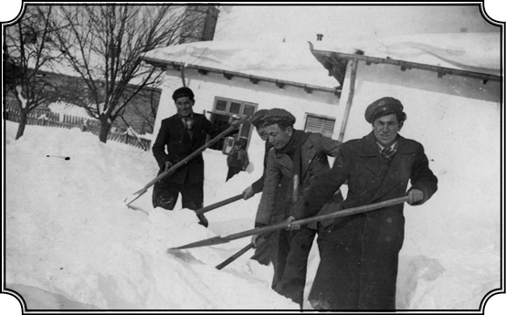
Mecidiye Medresesi önünde kar temizleme harekâtı (1940). Önde Karpat.
Tabii babanızın ölümünden daha çok etkilenmişsinizdir…
Ama küçüktüm, yani… Daha 15 yaşındaydım ve babamın ölümünden iki gün sonra Atatürk öldü. Tabii ki üzülüyordum fakat asıl üzüntüm babamı kaybetmiş olmamdandı. Üstelik bunları birbirine bağlamak imkânsızdı. Birisi doğrudan doğruya sizin ailenizi, şahsınızı ilgilendiriyor. Diğeri sizin uzak vatanınızı ilgilendiriyor. Ama Romanya’da Atatürk’e karşı daima bir ilgi olmuştur. O zaman ve hâlâ gerek Rumenler nezdinde olsun, gerek Müslümanlar nezdinde olsun Atatürk’ün sarsılmaz bir yeri vardı. Atatürk orada Türkiye’deki gibi tartışma konusu değildir. Devlet reisi olarak görülür, Türkiye’yi kurtarmış adam olarak görülür ve o şekilde görülmeye devam edilir. Babamın ölümüyle ilgili duygularım ise çok çok özeldi. Babamın ölümü ile ben diyebilirim ki ilk defa, ölümün ne kadar acı bir şey olduğunu anladım. Çünkü bana en yakın olan ve birçok bakımdan bağlı olduğum bir temel yok olmuştu. Hatırlıyorum ilk bir-iki gün o sarsıntıyla bir şey hissetmemiştim fakat ondan sonra öyle bir yıkım oldu ki, anlatamam. Öylesine bahçenin bir köşesine gidip ağlardım. Sanki güneş artık yeteri kadar parlamıyor, ay eskisi gibi ışık vermiyor… Ağaçların, bitkilerin yeşilliği sönmüş sanki… Her şey yüzünü değiştirmiş gibi oldu. Babam benim okumamdan memnundu, onunla seyahate çıkardık. Seyahat dediğim, bazen kamyonla bazen arabayla sağa sola giderdik… İşte o yolculuklarda konuşurduk. Ben, dediğim gibi, birçok şey okurdum, laf açıldı mı, bildiklerimi anlatmaya başlardım. Konuştukça da konuşurdum, anlatırdım “bu böyleydi, bu şöyleydi.” Daha 10-11 yaşında çocuktum işte. Babam beni beğenirmiş fakat beni şımartmamak için söylemezdi. Tam tersine çok sert davranırdı. Fakat anneme söylüyormuş, “Yav yumruk kadar kafasıyla ne kadar da çok şey biliyor bu! Durmadan her şeyi anlatıyor, söylüyor, bu yumruk gibi kafa nasıl biliyor” falan dermiş. Herhalde ona gurur veriyordu benim durumum. Sonraları bana karşı da tavırları değişti. Büyük adammışım gibi davranmaya başlamıştı, aramızda muazzam bir fark olmasına rağmen. İşte o ölünce sadece babamı değil sanki bir arkadaşımı da kaybetmiş gibi oldum, kendimi uzun zaman toparlayamadım. Ancak okula gidip derslere başladıktan sonra, bir Ramazan ayıydı vefatı, yavaş yavaş kendime gelmeye başladım. Ondan sonra bende de bir değişiklik oldu. Malum, ölümden sonra mal-mülk kalıyor, mirasçılar var, ablalarımın da hisseleri var. Miras meseleleri ortaya çıktı. Bir kısmı “paylaşalım” diyor, bir kısmı “birlikte bir şey yapabilir miyiz malları bir arada tutarsak” diyor, bir kısmı “tutsak ne olacak, geliri ne ki” diyor. Tatsız tartışmalar işte. Büyük olaylar değildi ama tatsızdı. Ben de okula gidiyorum, bunlardan bayağı rahatsız oldum ve o zamandan itibaren bunun dışında kendime göre bir hayat tanzim etmek, aileden kopmaktan ziyade bir istiklal, özgürlük ihtiyacını duydum. Babamın ölümünden sonra bende böyle bir değişiklik oldu.
“Foto” Kemal
Bir “tek başına kalmışlık” duygusu, “hayata karşı kendi ayakları üstünde durma azmi”, bu mu hâkim oldu sonunda sizde de?
Eskiden babamdan para gelir harcardım. Babamın oğluyum, babamın malının bir parçası benim malım gibiydi. Ama o ölünce durum değişti tabii. “E o halde bizimkilerle bu konuda kavga edeceğime, dövüşeceğime, bağrışacağıma buradan kendimi çeker ve hayatımı bildiğim gibi kendim kurarım” diye düşündüm. Hani bende bu ölümün bir diğer etkisi, kişiliğimi ön plana koyarak, kendi başıma mücadele ederek, kendi başıma bir şeyler yapmak ihtiyacını ve gereğini hissetmem oldu. Yani yalnız kaldığımı düşündüm. Yalnız kalınca ne yapacaksın? Ya boyun eğip gümbürtüye gideceksin veyahut baş kaldırıp mücadele edeceksin. Bende de bu hesaplaşma duyguları oldu. Tabii o zamanlar küçük yaşta ailemizin geçimini sağladığı üretim ve pazarlama işlerinden biraz anlar hale gelmiştim, pratiğim kuvvetliydi bu konularda. Daha küçük yaşta piyasa işlerini öğrenmiş, sebze olsun, üzüm olsun, şu bu olsun, alışverişleri iyicene kavramış ve hatta kendi başıma da ufak tefek ticaret işleri yapmaya başlamıştım. Yani pratik yönüm de bu şartlar altında gelişmişti. Babamın ölümünden sonra da, bilinçli olmamakla beraber kendi kendime yetişir hale gelmek için fotoğrafçılığa başladım ve medresede okuduğum son üç yıl geçimimin büyük bir kısmını fotoğrafçılıkla kazandım. Yalnız okulda çocukların fotoğrafını çekip onlara satmakla değil, bilhassa köye geldikten sonra da. Halen Romanya’yı ziyaret ettiğim zaman, Rumenler, “senin o zaman çektiğin düğün fotoğrafları duruyor” diye yad ederler. Düğünlerinde fotoğraflarını çeker, satardım. Bir Kodak makinem vardı. Böylece geniş çapta para bakımından kendi kendime yeterli hale gelmiştim. Bu yeteneğim sonradan çok işime yaradı çünkü İstanbul’da da üniversiteyi kendi imkânlarımla bitirdim ki sırası gelince onu da anlatırım. Vaktimin büyük bir kısmı okulda, Mecidiye’de geçiyordu. Eve yazları gidiyordum. 7 yılım Mecidiye’de geçmiştir fakat ben o kasabaya bir türlü ısınamamıştım. Tatillerin bir an evvel gelmesini bekler, hatta günleri sayardım; “Kaç gün kaldı? Yirmi beş, yirmi dört, yirmi üç…” böyle geçerdi günler. Ondan sonra günü gelince Babadağ’a, Armutlu’ya giderdim. Hani cennete gitmiş gibi olurdum. Tabii ki Mecidiye’de bulunduğum zamanda durmadan okur, birçok şeyler öğrenirdim. Benim için Mecidiye bir çalışma yeriydi. Ama diyebilirim ki temel kültürümün önemli bir kısmını okulda öğrendiklerimle değil, derslerin dışında okuduklarım sayesinde kazanmışımdır.
Resmî tarihin Rumencesi
Hem tarih hem edebiyat merakı var sizde. Ve ikisiyle de en çok o yıllarda haşır neşir olmuşsunuz…
Daha o devirlerde birçok meseleleri kendime göre köklü bir şekilde derinlemesine anlamaya başlamıştım. Diyelim tarihe yaklaşım meselesi. Tarih hocası bir Rumen idi. İsmi Vasile Vasilescu, hâlâ hatırlarım. İyi bir tarihçiydi ve sınıfta şüphesiz en iyi tarih bilen, anlayan bendim. Adam ise bir bakıma amacına ulaşamamış bir tarihçiydi çünkü İstanbul’a gelip burada Osmanlı tarihini incelemek istiyordu ve Iorga Okulu’nun mensubuydu. Nicolae Iorga, Rumenlerin en büyük tarihçisidir, klasik tarihçiler içerisinde sayılır ve en büyük eseri Almanca yazdığı 5 ciltlik Osmanlı Tarihi’dir. Gerçi Iorga çok yazmıştır, iki yüz kadar kitabı vardır ve Rumen tarihçilerinin başıdır ama bu Osmanlı Tarihi en önemli eserleri arasında sayılır. Hâlâ Romanya’nın en gözde tarih enstitüsü, Nicolae Iorga Enstitüsü’dür. Bükreş’teki bu Enstitü’ye sonraları çok gittim, orada konferanslar verdim. Nicolae Iorga, Rumen milli tarihini savunurdu. Milli tarih anlayışının kurucularındandır. Nasıl ki bizde Fuad Köprülü, Osmanlı tarihini, Türk tarihi şekline sokup kendine mahsus bir tarih ekolü kurmak istemişse, Iorga da Rumen tarihini milli tarih olarak yazmak istemiş ve her şeyi milli açıdan ele alıp göstermiştir. İşte benim hocam Vasilescu, Iorga’nın öğrencisiydi ve bize okutulan tarih de Rumen milli tarihiydi. Bu tarihe göre Rumen milleti 2. ve 3. miladi yıllarda, Roma lejyonlarıyla, yani Roma’dan gelmiş askerlerle, onların işgal ettiği Transilvanya’da, Eflak’ta yaşayan Dakların birleşmesi sonucunda ortaya çıkmış yeni bir millettir.
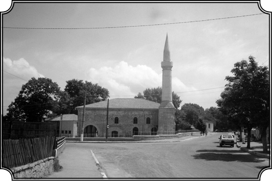
Gazi Ali Paşa tarafından 1610 yılında Babadağ’da yaptırılan camii. Sonradan onarım gördü.
Dak, böyle okunduğu gibi mi?
Dak. Ama onlar Daç diyor. “Daci si Români” diyor. Bize öğretilen buydu. Hani dünyanın en büyük olayı, onların gözünde Romalılar ve Daçlar’ın 2. yüzyılda başlayan birleşmesidir. Romalıların başında İmparator Traian(us), Daçlar’ın başında Bueribista ve bilhassa Decebal(us) adlı kumandanlar var. Romalılar, Daçları yeniyorlar ve askerler oraya yerleşiyor. Bunlar erkek olduğu için Daç kadınlarıyla evleniyorlar ve bu birleşmeden Rumenler ortaya çıkıyor. Bu nazariyeye göre Rumen milleti 3-4. yüzyılda tamamı ile gelişmiş olarak ortaya çıkmış ve ondan sonra da başkalarının idaresine girmemek için sürekli mücadele etmiştir.
Peki, bu Kıpçaklar, Peçenekler, Nogaylar, İskitler ne zaman gelip karışıyor Rumenlere?
Başta Rusya üzerinden Peçenekler geliyor. 10. yüzyılın sonu ile 11. yüzyılda gelmişler. Peçeneklerden sonra Kumanlar yahut Kıpçaklar geliyor. Fakat Rumen tarihinde Hıristiyan olmuş, sonra Rumen halkının bir kısmını oluşturmuş bu Peçeneklerden, Kumanlardan asla söz edilmez, genellikle bunlara “Barbar” denir. Barbar istilalarından söz edilirken şöyle denir: “Barbarlar şu sıralama ile Rumen topraklarından geçmiş ama Rumen milleti gene ayakta kalmıştır: Gotlar, Hunlar, Cepisler, Avarlar sonra Peçenekler, Kumanlar, Tatarlar (13. yüzyıldaki Moğollara, “Tatar” derlerdi). Ondan sonra Slavlar, Bulgarlar ve Macarlar” diye devam ederler.
Sarı Saltuk Baba’nın 13. yüzyılda oraya gelişini nereye koyuyorlar?
Bunlar Rumen tarihinde asla zikredilmez. Yoktur. Ancak tarihi çok daha yakından inceleyenler bu konuları biraz bilir. Mesela bu Peçenekler, Kumanlar hakkında Rumen tarih literatüründe toplasanız en fazla beş kitap çıkar. Onlar Doğu’ya arkalarını dönmüştür, “Biz Batılıyız” derler. Şu kadar sene oralara hâkim olmuş ve o milletin doğrudan doğruya yapısına girmiş Hunlardan, Kumanlardan diğerlerinden fazla bahsetmezler. Bunlar biraz etnik olarak Türk unsurları ya... Ben arada sırada onlarla konuştuğumda söylüyorum bu eksikliği, aklı başında olanlar, bilgi sahibi olanlar “evet, haklısın bunlardan söz edilmemesi bir eksiklik” diyorlar. İşte Iorga’nın okulu ki en hâkim okul odur, bu tezi yürütür: “Rumenler olarak biz hep buradaydık, Barbarlar gelip hâkimiyet kurdular, sonra geçip gittiler.” Burada en kritik noktalardan bir tanesi şüphesiz ki şudur: Eflak’ın doğuşu meselesi. Eflak nasıl doğmuştur? Eflak, aslı Kuman olan Basarab, Basar-Rap ailesinin oradaki varlığıyla başlamıştır; Basarabya adı oradan gelir. Rumenler ders kitaplarında olmasa da konferanslarda ve benzeri etkinliklerde Basarab’ın Kuman olduğunu, yani Kıpçak olduğunu kabul ediyorlar. Ama resmî tarih kitaplarında bu konu yoktur.
O zaman bunlar 10. yüzyıldan daha sonra gelen Kıpçaklar?
Evet, Kıpçaklar. 12. yüzyıl, 13. yüzyıl.
Bu Basar-Rap ailesi de o yıllarda mı gelmiş?
Aslında tam olarak ne zaman geldiğini bilmiyoruz fakat Basar-Rap ailesinin Kıpçak olduğu kesin. Eflak, ki Romanya’yı meydana getiren iki üniteden birisidir, Kıpçak’tı. Dobruca’ya da Basarap ailesinden gelen Mirça hâkim olmuştur ve I. Bayezid ile mücadele etmiştir.
Bu Mirça, Bedreddin’in fikirlerini benimseyen Kıpçak lider değil mi?
Evet, Şehzade Musa’ya ve Bedreddin’e destek olmuş bir adam. Birlikte Osmanlıyı, Bayezid’i devirmek istemişler. Şimdi bunlar Rumen tarihinde yazılı değildir. Ama Bulgar tarihi de öyledir, bu anlayışla yazılmıştır. Bulgarların kurucusu Asparuk, Volga’dan (İdil’den) gelen Türk kavimlerindendir. Slavlaşmıştır. İkinci Bulgar devletini kuran Ivan Asen ve Peter denilen kardeşler ise Kuman’dır. Fakat Bulgarlar hiçbir zaman bunların Kumanlığını, Kıpçaklığını kabul etmezler, yani Bulgarların da kendilerine mahsus geliştirdikleri bir milli tarih görüşleri vardır. Rumenlere dönelim. Rumenlerin tarihçileri, hocam Vasilescu ve onun hocası Iorga mesela, ne yaparlarsa yapsınlar, Romanya’nın beş yüz yıl boyunca tabi olduğu bir Osmanlı idaresi vardır. Bu gerçekle nasıl baş ederler? Şöyle: “Beş yüz yıllık Osmanlı idaresi, (onlar Osmanlı demezler “Türk” derler, Osmanlı tabiri son yıllarda kullanılmıştır) beş yüz yıllık direnişle geçmiştir”. Rumen milleti Türk istilasına karşı direnmiş ve nihayet 1877-78 savaşında istiklalini kazanmıştır. Bu alabildiğine sübjektif ve tamamı ile milli hisleri besleme amacını güden şovenist bir tarih anlayışıdır ve bize bu tarih okutulurdu. Iorga’nın 5 ciltlik ünlü Osmanlı Tarihi adlı eseri, Osmanlı kaynakları kullanılmadan yazılmıştır. Sanırım Türkçeye tercüme edildi ama o eserin bugün tutulacak tarafı yoktur. Gene de önemlidir. Üstelik adam tarihini Rumence yazmıyor, Almanca yazıyor. Yani Rumenler onu okumak için ya tercüme edecekler yahut da Almanca öğrenecekler. Çelişki var burada. İşte bu tarih ekolü, Rumen tarih ekolüdür. Buna karşı Macarların, Rumen milletinin doğuşu hakkında teorileri var ki Rumenler bunu şiddetle reddederler. Macar teorisine göre Rumenler güneyden, Balkan yarımadasından, çok geç tarihlerde 11-12. yüzyılda çoban olarak sürüleriyle gelmişler ve oralarda başta Macar kontlarının hizmetine girmişler ki doğrudur bu, sonradan çoğalmışlar, çoğalınca da nihayet orayı…
Yurt edinmişler.
Yani Transilvanya’ya hâkim olmuşlardır. Rumenler bunu asla kabul etmiyorlar. Bu da kısmen Macar tarihiyle ilgilidir ve bu yanıyla da çok ilginçtir. Şurası muhakkak ki Erdel’de, bugünkü Transilvanya’da Macarlar üç millet tanımıştır. Oraya daha evvel gelmiş Almanlar var; onlardan sonra özel bir grup olan Macarlar var ama Rumenleri millet olarak tanımamışlar. Rumenlere “Yobac” deniyor Macarlar arasında, serf gibi bir anlamı var. Tam köle gibi değil ama asilzadelerin hizmetinde çalışanlar. Macar tezi de böyle işte. Macarlar 2. ve 3. yüzyılda Romalılarla Daçların bileşimiyle meydana gelmiş bir Rumen milletinin varlığını kabul etmiyorlar. Diyorlar ki; “Siz ancak bin sene sonra geldiniz ve çoban sürülerinizle birlikte çoğaldınız, yerleşik düzene geçtiniz ve ondan sonra çoğalan nüfus sayesinde bu topraklara, Transilvanya’ya sahip oldunuz.” Bunlar ilginç tezler, ben Romanya hakkında Macar tezlerini çok sonradan öğrendim. Romanya’da bu okutulmazdı, Romanya’da okutulan tek tez şuydu: “Romalıların ve Daçların birleşiminden, Rumen milleti asil ve Batılı bir millet olarak ortaya çıkmıştır.” “Öbürleri gelmiş geçmiş ama biz kalmışız, gelip geçenler sırasıyla şunlardır…”
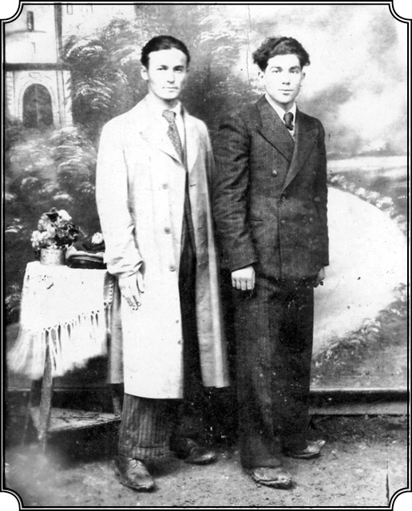
1942 yılında Mecidiye’de 8. sınıftayken yakın arkadaşı Deliormanlı Şaban Mahmut ile. Şaban Mahmut’un ailesi Anadolu’dan gelen, isyancı Alevi Türkmen aşiretlerine mensup, Deliorman’a sürülmüş. O da sonradan Kemal Karpat gibi Türkiye’ye göçmüş, İstanbul Emniyet Müdürlüğü’nde çeşitli görevlerde bulunmuş.
Peki, sizin teziniz ne Rumen tarihi konusunda?
Benim tezim çok değişik. Kısaca şöyle: Rumenler, çeşitli kaynaklardan gelen, çeşitli insan gruplarının birleşimi ve karışımı ile meydana gelen bir topluluktur ve bu topluluğun dili Latincedir. Bu topluluk Hıristiyan olduktan sonra kendine mahsus bir kimlik kazanmaya başlamış ama bölge bölge değişik yetişme ve gelişme özellikleri göstermiştir. Hıristiyanlıktan sonra da onların “Barbar” dediği birçok kavim, örneğin en başta Kıpçaklar oraya gelip yerleşmiş ve bu var olan kitlenin içine katılarak tekrar yeni bir oluşum sağlamışlardır ve nihayet bu süreç Eflak ve Boğdan’ın kurulmasına yol açmıştır. Ama bu durumun ortaya çıkışı ancak 12. yüzyılda başlamıştır. Rumenlerin millet olarak ortaya çıkışı ise 19. yüzyıldadır. Ondan evvelki dönemde gerçekten bir Rumen tarihi aramak biraz yanlıştır. Ama etnik bakımdan “burada ne oluyor” diye bakarsanız o zaman fevkalade ilginç bir olayla karşılaşıyorsunuz. Çeşitli gruplardan gelen, Slav olsun, Kıpçak olsun, topluluklar kaynaşarak yeni bir grup ortaya çıkarmışlardır. Burada din çok önemlidir. Çünkü Peçenekler ve Kıpçaklar Hıristiyanlaşmıştır, bunların içine karışarak yeni bir kimliğin, etnik bir kimliğin ortaya çıkmasına, doğmasına ve gelişmesine yol açmışlardır. Birçok milletin oluşmasında olduğu gibi. Burada bir de hanedan olursa, devleti temsil eden bir grup olursa o zaman durum milletleşmeye doğru gidiyor. Burada da Rumen milletinin oluşmasına yardım eden işte böyle bir hanedan faktöründen söz edebiliriz. Onların İstanbul’a tabi bir voyvodası vardı. Voyvoda sülalelerinin ve onların altında bulunan “Boyar grupları” dedikleri toprak sahiplerinin, bir elit grubun varlığı gibi etmenler, bir benliğin kurulmasına yardım etmiştir yavaş yavaş.
“Sahi kimiz biz?”
Peçenekler, Kıpçaklar oraya geldiklerinde Budist ya da Şamanist-Pagan mıydılar yoksa Müslüman mıydılar?
Peçeneklerin küçük bir kısmı, hatta Kumanların da küçük bir kısmı Müslümanlaşmıştı ama bunlar Şamanizm’i benimsemişlerdi. Bir kısmı da Budist’ti. Malum, Moğolların kendilerine ait bir dini yoktu, sonradan İslamlaştı onlar. Bilhassa Özbek Han döneminde. Bunlar tabii, sonradan 13-14. yüzyılda olan olaylar ama bu bölgelerin İslamlaştırılması, Altın Ordu Devleti’nin, Kazan’ın, Kırım’ın filan İslamlaşması gibi olaylar da bu bölge tarihi açısından çok mühimdir. Tüm bu olay ve gelişmeler Rumen tarihini de, Balkan tarihini de etkilemiştir. Ama ben bunları o zaman Romanya’da değil, sonradan Amerika’da öğrendim. Romanya’da ben ancak onların “milli” tarihini öğrendim ve bilhassa Türklerin inkar edilişini gördüm. En küçük bir Rumen askerî zaferiyle adeta tüm Osmanlı ordusunu mahvetmiş gibi gösterdiklerini gördüm. O zamanlar biz bu durumu daha ziyade duygusal bir tepkiyle karşılıyorduk; “Yaa biz o kadar da zayıf, o kadar da korkak değildik herhalde, bir avuç Rumen, nasıl gelmiş de biz Türkleri mahvetmiş olabilir ki…” Bu tepkilerimiz daha Armutlu’daki ilkokulda başlamıştı. Rumenler sınıfta tarihi anlatırlarken şöyle derlerdi: “Rumen ordusu ilerleyerek Sinan Paşa’yı böyle mahvetti.” Öğretmen heyecanlanırdı ve “Rumenler, Türkleri şöyle yendi böyle yendi” diye devam ederdi. Osmanlı demezlerdi, “Türkleri yendik” derlerdi. Biz de Türk’tük işte, sınıfta dört-beş Türk vardık. Dışarıya teneffüse çıktığımız zaman “Gelin bakalım, Rumen-Türk mücadelesi değil mi, hadi görelim kim yaman” diye dövüşe başlardık. Hani benim de çok hoşuma giderdi bu durum, yumruklardım onları. İşte bunlar benim bilincime işlemiş şeylerdi daha küçük yaşta. Yani “ben neyim, sen nesin, kimsin” meseleleri daha o zamandan belirli bir şekil almıştı kafamda. “Rumenler ve Türkler…” Onların daha başlangıçta ikiliğe yer veren tarih anlayışlarını nasıl kabul ederim? İçimde yarı bilinçli bir tepki belirmiş: “Sen beni yenmişsin, nasıl yenersin?” diyor içimdeki ses. O zaman merak da uyanıyor, “biz kimiz, nereden gelmişiz, ne yapmışız, ne olmuş” falan diye. İşte bu duygusal tepkiler içinde olmama rağmen, Rumen milli tarihini ve bu tarih içinde Osmanlının, Türklerin geleneğini de Vasilescu sayesinde öğrenmiş oldum. Aynı zamanda edebiyatla da çok meşgul oluyor, ilgileniyordum. O zamanlarda oralarda iki görüş vardı. Bir; “sanat için sanat” dedikleri, Titu Maiorescu’nun temsil ettiği bir okul vardı. O devirlerde onların en büyük saydıkları şair Mihail Eminescu bu ekole mensuptur. Sanat görüşü: “Hiçbir gaye gütmeden, her şey güzellik için, sanat güzellik için, sanat sanat içindir” şeklinde özetlenebilir. Buna karşılık bir de daha çok köy gerçekleri ve çalışanların hayatlarıyla ilgili olanların yarattığı gerçekçi ekol vardı.
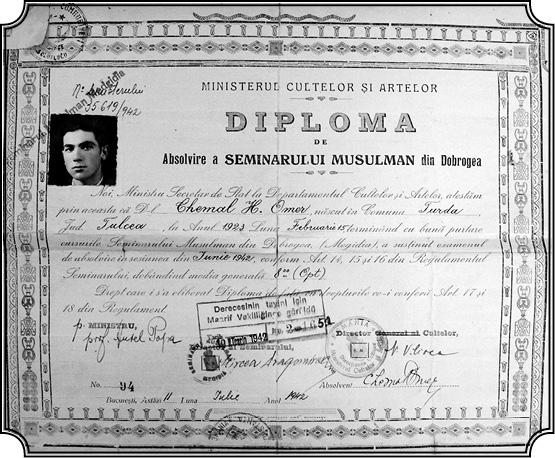
Mecidiye’den aldığı ve daha sonra Türkiye’de Haydarpaşa Lisesi’ni bitirdikten sonra onaylanan diploma (1942). Diplomanın arkasında alınan dersler var: Romence, Türkçe, ahlak, tarih, coğrafya, matematik, doğa bilimleri, fizik...
Sanat toplum içindir diyenler...
Toplumsal edebiyat diyebileceğimiz…
Toplumsal gerçekçilik.
Evet, onun başında da aslen Rus Yahudisi olup sonradan Romanya’ya yerleşmiş ve ismini değiştirmiş biri vardı. Sosyalistti. Gerçekçilik ekolünün kurucusudur. Kohen’di esas ismi, sonra Romanya’dayken başka isim aldı. İlginç ama edebi alanda sağlam fikirleri olan biriydi. İşte o zamanlarda bütün bu edebiyat ürünlerini okuyordum. O ekolleri takip ediyordum.
Yani o devirlerde dahi gördüğünüz gibi ben, gerek tarih okullarına, gerek edebiyat okullarına, farklı yaklaşımlara açık biriydim, çok ilgiliydim. Yaşım henüz 16-17 idi ama gerçekçilik, idealizm gibi birçok soyut ve tartışmalı kavram hakkında geniş çapta bilgi sahibi olmuştum. Bunları o çağda tam olarak anladığım elbette söylenemezdi ama bilgi sahibi oluyordum ve olmaya da yatkındım. Bu özelliğim ilerisi için bana geniş ufuklar açacaktı.
“Sanat, tamirat içindir”
Okul yıllarınızda edebiyat merakınızın yanı sıra tiyatroculuğunuz da varmış galiba…
Okulda her sene müsamereler tertip ederdik. Müsamereyi biliyorsunuz, orada piyesler oynanır, şarkılar, şiirler okunur. Bildiğiniz talebe gösterileri… Ben de bu faaliyetlerin içinde önemli roller alırdım ve hele içimde o yılların genç çocuk heyecanı olduğu için bunları zevkle yapardım. Bir süre sonra birkaç arkadaş düşündük taşındık, “Peki” dedik “biz bunları yapıyoruz ama acaba biz bu piyesleri, şarkıları vesaireyi daha pratik bir şekilde geliştiremez miyiz?” Pek belli olmaz ama benim bir de pratik yanım, daima hayata bağlı bir tarafım vardır. Mecidiye’de bir Türk Okulu vardı. Camları kırılmış, dökülen bir bina. Biz öğretmen okuluyduk. Öğretmen okulu olduğumuz için nasıl ders vereceğimiz öğretilirdi bize, ki çok işime yaramıştır bu. Hem Rumence hem Türkçe ders verecek duruma geldik. Bu Türk Okulu bizim tatbikat okulumuz, pratika yaptığımız yerdi. Eskiden yapılmış bir okul, büyükçe ama camları kırılmış, duvarları biraz yıkılmış, kapıları viran falan. İşte arkadaşlarla konuştuk ve dedim ki, “biz özel olarak bir piyes yapalım, seyri de ücretli olsun. Gösteriden elde ettiğimiz parayı okulun tamiri için verelim.” Arkadaşlarım da “peki” dediler ve böylece oturduk ve bugünkü ölçüler içinde dahi bana muazzam gelen bir program düzenledik. Ve burada ben başrollerdeydim. İki piyes oynandı. İlki, bir avukatın marifetlerini anlatan “Ovidiu Şikana” adlı Rumence bir piyesi. İkincisi, Dobruca’dan çıkmış ve oranın en ileri gelen aydınlarından biri olan Mehmet Niyazi’nin Kırım lehçesinde yazdığı Alimcan. Alimcan piyesi gelenekle modernitenin çatışmasını anlatır ve Dobrucalı bir aileyi konu edinir. Yeniye karşı açılmak isteyen, daha özgür düşünmek isteyen aile fertleri ve onların karşısında da bir baba var. Baba, oğullarının değişim isteklerine karşı geliyor, bu tema üzerinde giden bir piyes. Arkadaşlar, “ikisinde de başrolü sen oynayacaksın, içimizde en iyi aktör sensin” diye tutturdular. Aktörlüğü yok işte ama durum bu. Ben bunu da, her şeyi yaptığım gibi hevesle yapıyorum. Eğlence kabilinden yapıyoruz ve başarılı oluyoruz. Onun için kabul ettim, iki piyeste de başrolü oynadım. Bir piyes bittiğinde öbür piyes için hazırlıklar yapılırken (ikisi de aynı sahnede oynanıyordu), arada uzun bir şiir okudum ve bayağı da başarılı oldum. Artık herkes beni tanıdı orada “aman Haşim Efendi’nin oğlu Kemal neymiş meğer”, “aman şöyle aman böyle”, “Babadağlı Kemal böyle yaptı, şöyle oynadı.” Şimdi bile söylerler karşılaştığımızda. Bunları herhangi bir hırsla yapmıyordum, eğlence kabilinden yapıyordum ve onun için başarılı oluyordum zaten. Gene kızlar da beni “artist” gibi görüyorlardı herhalde. Yan bakıp “gel” der gibi gülüşlerini hâlâ hatırlar gibi oluyorum. Ama o zaman bu gibi tebessümleri nasıl değerlendireceğimi bilemeyecek kadar “toy”dum.
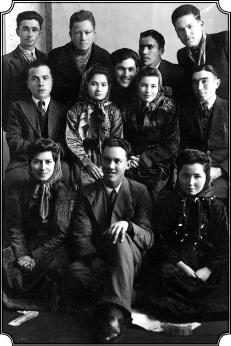
Karpat’ın Mecidiye’de bir tiyatro grubu kurup okulun tamiri için para topladığı dönem (1942). Tiyatro grubunda rol alan kız ve erkek arkadaşlarıyla. İkinci sırada iki kız arasında gülen bir Karpat.
Sonra devam etmediniz ama tiyatroya?
Ondan sonra biz bu piyesle turneye çıktık, Türklerin bulunduğu Boğazköy’e falan gidip aynı şekilde oynadık. Orada biraz para topladık, okulu tamir ettirdik. Evet, olaylar bu şekilde gelişiyordu ama derslere de devam ediyoruz tabii ki. Bir gün okulun yardımcı müdürü ve İslam-Türk derslerinin başkanı Sıddık Hoca derse girdi, oturdu; “Kemal” dedi, “bana bak burası artist okulu değildir.” “Burası” dedi “hoca okuludur, bunu iyice sok kafana.” Bunu söylediğini duyunca, birden bire nefret ettim adamdan. Biz geri kalmış bir halkız orada, çağımıza uymak için, kendi imkânlarımızla kendi kurumlarımızı tamir edip düzeltmek, yeniye yetişmek için çabalıyoruz, adam bunları görmüyor, kalkmış “burası artist okulu değildir” diyor. Olur mu böyle şey! Ondan sonra düşündüm, “ben hoca mı olmak istiyorum? Böyle bir köyde imamlık mı yapacağım?” Gerçi babamın ölümünden sonra toplum geleneklerine uygun sünnetini, namazını vesairesini devam ettirmek gerekiyor diye biraz hocalık, imamlık yapmıştım. Bunları düşündüm ve bunların bana yetmeyeceğini gördüm. Ben hayatımın sonuna kadar bunu yapamazdım.
O zaman “ben de buralardan giderim ve istediğim gibi bir eğitim görürüm” mü dediniz?
Kafamda yeni ufuklar açılmaya başlamıştı. Anladım ki ben henüz tamamlanmış bir kimse değilim. Daha çok şey öğrenmem, bilmem, ufkumu genişletmem lazım. Bunu nerede yapabilirdim? Üniversitede ama Mecidiye okulundan aldığım diploma Romanya’da üniversiteye girmeme imkân vermiyordu. Gerçi tarih hocam Vasilescu bana vaat etmişti: “Sen çok iyi bir elemansın, çok parlak kafan var, tarih bilgin de sağlam, ben senin iyi bir tarihçi olarak yetişmeni istiyorum, Bükreş’teki tarih profesörüme yazacağım, seni kabul etmesini rica edeceğim, sen tahsiline Bükreş’te devam et”. Fakat ben artık Romanya’da kalmak istemiyordum. Daha evvel anlattığım nedenlerden dolayı gitmek istiyordum ve içimde şöyle bir his uyanmıştı: “Romanya’dan gitmem şart, çünkü burada kaldığım sürece, bu koşullar altında gelişemeyeceğim.” İşte o zaman bende beliren bu uyanış, içimdeki soruların da çoğalmasına yol açtı. Arayışım başlamıştı. 18 yaşındayım, kendimi sorguluyorum: “Burada üniversiteye devam edemeyeceğim, acaba ben ne yapabilirim? “Ben kimim?” “Ben neyim, hayattaki ana amacım nedir, ne olmalıdır? Kime hizmet edeceğim?” Evet, en büyük soru buydu; “Kime hizmet edeceğim, ne yapacağım ben?” Belki de o yaşta bir çocuk için bunlar büyük sorulardı…
Bu soruları paylaştığınız hocalarınız, arkadaşlarınız, akrabalarınız var mıydı?
Yoktu.
“Eh, ben artık gideyim”
Sadece kendi içinizde mi yaptınız bu tartışmayı?
Tamamen, hepsi kendi içimdeydi. İşte bunları kimseye açmadığım, kimseyle paylaşmadığım için karar verip birkaç ay sonra Türkiye’ye gelince herkes hayret etmişti. Çünkü beni tanıyan herkes, “bu çocuğun Romanya’da büyük istikbali var” diyordu. Çünkü Rumence’yi fevkalade güzel konuşur ve fevkalade güzel yazardım. İnsanlar, “sen Rumen edebiyatına katkıda bulunacaksın” gibi komplimanlar yaparlardı. Ailemin hali vakti de iyi, tanınmış aileyiz, her tarafta dostlarımız, akrabalarımız var. Her tarafta takdirle karşılanıyoruz, herkes tanıyor beni; “Haşim Efendi’nin oğlu Kemal, seni büyük bir gelecek bekliyor” diyorlardı. “Bu adam bir şeyler olacak burada ama ona bağlı” diye arkamdan konuşurlarmış. Ama işte “orada bir şeyler olabilmem” için, bir yerde Rumen olmayı, o kültüre daha fazla girmeyi kabul etmem gerekiyordu. Ben bunu yapamazdım. İşte “ben neyim, ben kimim” sorularıyla birlikte “ben kime hizmet edeceğim” sorusu belirleyici oldu. Ve o zaman, “eğer ben hakikaten bir şeyler yapabileceksem hayatımda, eğer bir topluma faydalı olabileceksem o toplum benim öz toplumum olmalı, Türk toplumu olmalı. Ben bu şartlar altında Romanya’da kalarak kendi toplumuma faydalı olamam” dedim. Ben his dünyamla, bilinç dünyamla ayrı bir yerdeyim onlardan. Benim vatanım Türkiye’dir. O halde benim Türkiye’ye gitmem gerekiyor ve gideceğim” dedim ve böylece Romanya’dan çıkmaya karar verdim.
Bu düşüncelerinizi annenize de mi söylemediniz?
Bunları anneme de söylemedim. Aniden “gideceğim” dedim. “Nereye gideceksin?” “Türkiye’ye.” O kadar. Tabii ailemin buna karşı gelmemesinin ve aslında hiçbir itirazla karşılaşmamamın bir de sebebi varmış. Rahmetli babamın, ben doğduktan sonra yine bir Türkiye seyahati var. Yedinci mi sekizinci mi seyahati bilmiyorum. O zaman yazdığı vasiyetnamesinde de “oğlum Kemal’in İstanbul’a gidip tahsilini orada görmesini isterim, kendisine yardım edilmesini, İstanbul’da tahsil görmesini…” gibi şeyler yazmış. Benim o zaman bundan haberim yok fakat ablalarımın varmış. Babam vasiyeti eski Türkçeyle yazmış, tabii ablalarım eski Türkçe biliyorlar, onlar okumuşlar. Ve ben “Türkiye’ye gideceğim” diye tutturunca “e zaten babası vasiyet etmişti onun için karşı gelmenin bir manası yok” demişler. Bu bakımdan aile içinde herhangi bir güçlük olmadığı gibi, o zaman evli olan, kendi aileleri bulunan ablalarım yardım da ettiler gidebilmem için. Böylece 1942 yılında Medrese’den mezun oldum ve iki ay sonra da müracaat ederek pasaportumu aldım. “Eh ben artık gideyim” dedim.
Sevgiliniz yok muydu lisedeyken, hani gençlik aşkı filan, ona da mı söylemediniz?
Kimseye söylemedim. Birçok kız arkadaşım olmuştur ama öyle aşk gibi bir şeyim olmamıştır. Çünkü benim kafam çok başka meselelerle meşguldü ama kadınlara karşı lakayt da değildim. Benim aradığım kadından başka bir şeydi. Sorduğunuz için anlatıyorum, yoksa mevzuu etmezdim, o sıralar 21 yaşında, kocasından ayrılmış, çok güzel bir Rumen kadın vardı. Ben 17-18 yaşındayken bana aşık oldu ve bir türlü yakamı bırakmadı. Fakat işin garibi ben yanaşamıyordum çünkü onun istediği aşk bana henüz yabancı geliyordu. Ben o zamandan beri (ki her zaman böyle olmuştur), kadını daima bir çeşit sır dolu, güzellikler dolu bir cevher bohçası gibi gördüm. Kadının en güzel tarafı vücudu değil, içidir. Önemli olan, onun içine nüfuz etmek ve içindeki güzelliği bulmaktır, ki o da erkeğin elindedir. Belki de okuduğum kitapların, romantizmin biraz tesiriyle o yaşlarda bende kadın konusunda bu gibi düşünceler oluşmuştur ve bunlar da hayatım boyunca, yani bugüne kadar devam etmiştir. Çok yakın, samimi kadın arkadaşlarım olmuştur ama bir kere benim nasıl bir insan olduğumu anlayınca, yani seks düşüncesiyle yaklaşmadığımı öğrenince şaşırırlardı, bazıları da üzülürlerdi. İtiraf edeyim ki çocukken arkadaşlarla bir aradayken seksten falan bahsederdik, hatta bazıları pratiğini de yaparlardı. Bende o duygu yoktu. Bazen sorardım onlara “ya nedir bu sizin anlattığınız” falan. Bana acayip geliyordu, çünkü bende o his yoktu. Doğrusu arkadaşlarım benden 2-3 yaş büyük oldukları için daha gelişmişlerdi.

1967’de kapatılan Mecidiye Medresesi’nden kalanlar. 2002 yılında Medrese’nin kuruluşunun 100. yıldönümü için bir araya gelen toplulukta Karpat da vardı (en arkada kapının hemen önünde).
Siz daha platonik yaklaşıyorsunuz.
Platonik yaklaşımdı herhalde. Fakat cinsel dürtü bakımından da yavaş geliştim belki de. Diyebilirim ki kadın cazibesinin yalnız estetik, içsel cazibe olmadığını, o kadının bir de vücudu olduğunu, bir insan tarafı olduğu gerçeğini 20-21 yaşına geldikten sonra gördüm. Ama bunu gördükten sonra bile hayatımda hiçbir zaman seks düşüncesi hâkim olmamıştır ve bu daima böyle kalmıştır bende. Hatta Amerika’ya gittikten sonra bile açıkça yapılan “gel beraber olalım” gibisinden bazı teklifleri reddettim. Sadece cinsellik yetmiyordu bana, “sen bana yabancısın, senin vücudun seninle ilişki kurmama yetmez” derdim. “Senin içini bulmam, anlamam, keşfetmem ve bu iç dünyanla seni istemem gerekir” filan derdim. Aslında kadınlar konusunda bu tarz bir düşünceye sahip olmam da bir şanstı benim için, çünkü böylelikle kadınlarla çok vakit kaybetmedim ve zamanımı daha çok okumaya, araştırmaya harcayabildim. Çünkü öyle insanlar gördüm ki, 16-18 yaşlarında tüm enerjilerini, tüm zamanlarını kadın meselesine harcıyor, adam olmayı, okumayı yazmayı bırakıp geceli gündüzlü bunu düşünüyorlar… Elbette insan vücudunun bir özelliği olarak bunu tabii karşılamayı öğrendim ama çok sonra. Resimlerim vardır birlikte çekilmiş, hem erkek hem kadın birçok arkadaşım olmuştur ama bunların hepsi normal görüşme arkadaşlarıdır. Hatta oranın ileri gelen ailelerinin bir iki tane çok nefis güzellikte kızları da vardı. Onlarla da biraz ilgilendim fakat hakiki manada aşık olmadım açıkçası. Belki böyle ufak tefek şeyler gelmiş geçmiştir, o kadar. Ama o fizikselliği, çok sonra anladım, tattım.
Amerika’dayken?
Türkiye’de.
Oralara geleceğiz tekrar. Şimdi şu Romanya’dan ayrılma konusuna dönelim. Türkiye’ye gelmek istiyorsunuz ama Rumen vatandaşısınız, pasaport almanız kolay oldu mu?
Halen Rumen vatandaşıyım ve vatandaşlık değiştirme gibi bir fikrim de yok o sıralar. “Eğitimimi tamamlarım, sonra gene Romanya’ya dönerim. Yeni fikirlerle gelip belki de bu halka yardım ederim” gibi şeyler geçiyordu kafamdan. Gitme hayalleri kuruyordum ama bir taraftan da endişe vardı içimde, “ya gidemezsem!” diye. Ama korktuğum olmadı ve işlerim de inanılmayacak kadar uygun gitti. Savaş var bir taraftan… Benden bir iki yaş büyük olanlar askere alınıyor, cepheye gönderiliyor. Sıra bana gelmemiş daha. Yaşım küçük olduğu için. Pasaportu verdiler, “tahsile gidiyorum” diyerek pasaport aldım. Hâlâ inanamıyorum o şartlar altında (çünkü kimse dışarı gitmez savaş zamanı), bana nasıl pasaport verdiler. Nitekim hatırlıyorum, evdeydim, köyün belediyesinden bir hizmetli geldi, “seni telefona çağırıyorlar” dedi. Köyde bir tane telefon vardı o da Belediye’de. Merkezlerle irtibatta olan telefon. “Seni Tulça’dan çağırıyorlar” dediler. Gittim. “Pasaportun çıktı, gel pasaportunu al” dediler. Ve böylece 1942 yılının Eylül ayında Romanya’dan çıktım.
Rumen faşistleri hoşgörü ortamını bozdu
Romanya’dan çıkma kararınız sadece “kime hizmet edeceğim” sorusunun cevabıyla mı ilgiliydi, oraları terk etme konusundaki kararınızı etkileyen başka ne gibi olaylar olmuştu?
Anlattığım gibi Mecidiye’de farklılığın bilincine vardığım gibi aynı zamanda farklı bir topluma, Türklere ait olduğumu da anlamış durumdaydım. İşte daha oradan hareketimden evvel birçok gelişme benim arayışıma ihtiyaç kalmadan bu kimlik meselesini belirlemiş ve damgalamıştı. Yaşadığım yerde hoşgörüye, farklı kimlik ve kültürleri kabul eden temel demokratik felsefeye dayalı bir anlayış vardı uzun yıllardır. Bir hususu dile getirmeden geçemeyeceğim: Osmanlı’nın bu kadar farklı dinleri, dilleri, kültürleri 500 yıl barış içinde bir arada yaşatabilmesinde herhalde İslam’ın bir dereceye kadar etkisi olmuştur. Kuran’ın 49. suresinin bir ayeti aşağı yukarı şöyle bir esas koymuştur: “Allah diyor ki; birbirinizi daha iyi anlamanız için sizi (yani insanları) aşiret ve kavimlere ayırdım. Hiçbir kimse (yani kavim, millet) kendini diğerinden üstün görmesin.” Bu kısa satırlar çok temel bir insanlık prensibini içermektedir. Sonradan yazılan anayasalar, kanunlar bu gerçeği çeşitli şekillerde dile getirmiş fakat ancak kısmen uygulamışlardır. Romanya-Dobruca’da, benim köyüm Armutlu’da kurulmuş bu karşılıklı geleneksel dinsel ve kültürel “hoşgörü”ye dayanan yaşam şekli 1938’lerden sonra Demir Muhafız faşistlerinin ortaya çıkmasıyla birkaç yıl içinde yok olup gitti. İşin garibi bu faşist akım süratle gelişti. Köylerde, küçük kasabalarda birçok insan bu sayede hâkim duruma geçmek, mevki kazanmak fırsatını elde etti. Rumen olan her şeyi, herkesi yüceltmek, tüm diğerlerini aşağı sayma, yok sayma ve onları istilacı olarak görme eğilimi bir sene içerisinde yaygınlaştı. Önceleri el ele yaşayan halk, birbirine yabancı gözüyle bakmaya başladı.
Nüfus ağırlıkları da onların güç kazanmasına uygun olarak değişmiş miydi?
Nüfus değişimi de birinci derecede rol oynamıştır. Gene tarihe dalacağız. Romanya, 1912-13 Balkan Savaşı’nda, 1878’de Bulgaristan’a verilmiş olan Dobruca’nın güneyini kendi topraklarına kattı. Bu, Silistre ve Pazarcık vilayetlerini kapsayan bir bölgeydi. Burada kahir ekseriyet Türklerdeydi. Türklerin çoğunluğu halen Bulgaristan’a geçmiş olan bu bölgede yaşar (Deliorman da bu bölgeye girer). Güney Dobruca’yı alan Rumenler burayı Rumenleştirmek için Eflak’tan adam getirtip yerleştirdiler, yetmedi Makedonya’dan Ulahları getirdiler. Ulahların dili Latin dilidir ve Rumence’ye çok yakındır. Bunlar yeni rejimin temsilcisi ve muhafızları haline geldiler. Türkleri kaçırtıp mallarına el koyma yollarını seçtiler. Topraklara düzenbazlıkla el koydular. Türkler ses çıkaramıyor, bir kısmı da Türkiye’nin yolunu tutuyordu. Ama Türk nüfusu gene de çoğunluğunu koruyordu.
Türkler iki arada bir derede kaldılar yani…
Oradaki Türklere sorarsanız Bulgarlara karşı Rumenleri tercih ederlerdi. Onların daha insani olduğunu düşünürler. Bulgarlar ise aşırı milliyetçiydiler ve Türklere karşı şiddetli, derin bir kinleri vardı. Belki aynı ırktan geldikleri için. Bunları söylememin nedeni: Ulahlar yerinden edilmiş, kendilerini Rumen sayıyor ama Rumenler onları Rumen kabul etmiyor, Makedon diyorlar. Mesela Galatasaraylı futbolcu Haci (Hagi) bunlardandır. Dobruca’nın Çamurlu köyündendir, ama “Makedon”dur. Romanya’nın bir çeşit milli kahramanıdır ama “Makedon” olarak. Ulahlar da buna tepki gösteriyor, “hakiki Rumen biziz, siz karışıksınız” diyorlar. Bunlar ideolojik yaklaşımlar. 1940’ta Hitler güçlenip Orta Avrupa’ya hâkim olmaya başlayınca, Güney Dobruca’nın yine Bulgaristan’a verilmesi gündeme geldi. Rumenlere kalan Kuzey Dobruca’daki Bulgarlarla Güney Dobruca’da yaşayan Rumenler yer değiştirmeye başladı. Okuldan köyüme döndüğümde Bulgarların gitmiş, yerlerine Rumenlerin gelmiş olduğunu gördüm. Bizim şansımıza köyümüze gelenler, kökenleri Eflak olan muhacirlerdi, Makedonlara nazaran daha yumuşak, anlayışlı idiler. Romanya’da faşizm yükselmeye başlayınca Makedonlar arasından Demir Muhafızları tutan çok insan çıktı. Bu sayede mevkilerini güçlendirdiler. Şarkıları, marşları, toplantıları, okullardaki propagandalarıyla az zamanda “siz, biz” ayrımını getirdiler ve derinleştirdiler. “Rumenler ve yabancılar” şeklinde kavramlar gelişti. Yahudi düşmanlığı da had safhaya ulaştı. Dükkanlarını yağma ettiler. Dövdüler.
Müslümanlara hakaret ama Yahudilere alenen saldırı, öyle mi?
Bize doğrudan saldırmadılar. Ama diğerlerine... Hatta hatırlıyorum bir keresinde babamla Taler isminde Yahudi bir kadının dükkanına gitmiştik. Kadın çökmüş, perişan olmuş ama sert ve kararlı duruyor dükkanın ortasında. Babam ona “korkma, ben sana hep yardım edeceğim arkanızdayım, bana gelin” dedi. Babam etrafına hep söylerdi, “Rumlar, Yahudiler benim dostlarımdır onlara ilişen beni karşısında bulacaktır” diye. İşte belki de bu olaylar nedeniyle, o zamandan beri faşizme karşı büyük tepkim oluşmuştur. Eskiden bu halkları farklı görmek gibi bir meylim yoktu, hepimiz insandık ve bir arada geçiniyorduk. Fakat kalkıp da “sen Türksün burada işgalcisin, sen buraya ait değilsin” dediler mi siz de savunmaya geçiyorsunuz.
Evlad-ı fatihan, evlad-ı perişan oldu
Köyünüzde de bunları birebir yaşadınız yani?
Bende bu bilincin derinleşmesine neden olan iki olayı anlatmak istiyorum. 17 yaşımı bitirmek üzereydim. Eve tatile gelmiştim. Çok sayıda kız ve erkek arkadaşım vardı, beraber toplanır eğlenirdik. Masum, tatlı bir eğlence tarzımız vardı, herkes zevk alırdı. Amcamın kızı Fatma’nın Rumen arkadaşları vardı. Ben de onlara katılırdım. 30-40 kişi bile olurduk. Hatırlıyorum her zaman görüştüğüm Ioana isminde bir genç kız vardı. Benim yanımda oturuyordu; elinde de bir mısır. “Bana ver” dedim. “Vermem” dedi. Elini tuttum, mısırı aldım elinden. Köye yeni gelmiş bir muhacir vardı, Demir Muhafızlara meylediyordu. Bizim kendi aramızda eğlenmemize bakıp “Bakın” dedi, “bir Türk bu muameleyi benim köyümde bir Rumen kızına yapsaydı onu bıçaklardım.” Adam, kızın elini tutmamı yediremiyor kendine, Türk olduğum için. Ben sersemledim. O tarihe kadar herkes dosttu, birlikteydi, şimdi birdenbire aşağı bir insan oldum. Aşağı bir kast mensubu olarak bir Rumen’e dokunamazdım yani. Bu faşist ideoloji, birdenbire bu insana üstün bir kimlik vermiş ve beni de o topraklardan dışlamış. İkinci olay da şu: Alistar diye renksiz, bir özelliği olmayan, benden birkaç yaş büyük biri vardı, Bir de Aleko adlı, klarnet çalan bir arkadaşımız. Aleko bana bir gün dedi ki “ben Alistar’ın evine çağrıldım, gideceğim, sen de gel.” Gittik, bu Alistar denilen zat kaşlarını çatmış sert sert etrafa bakıyor. Yani benim orada olmamdan memnun değil. Hâlbuki önceden dostluk ederdik. Ve adam konuşmaya başladı: “Her şeyden önce size şunu hatırlatmak isterim ki ülkemizin tarihinde artık değişiklikler zamanı başlamıştır. Artık gerçek Rumen’i gerçek olmayandan ayırt edeceğiz, kiminle dost olup kiminle konuşacağımıza karar vereceğiz, Rumen olmayanla dost olamayız.” Ben orada tek Türküm, köyün en zenginlerinden ve en nüfuzlu ailelerinden geliyorum, birçok insan kapımızda çalışıyor ama orada bir anda Türk olduğum için aşağılık, istenmeyen bir yabancı durumuna düşürüldüm.
Bu tabii sistematik bir şekilde tüm topluma yayılıyor. Okullarda durum nasıldı mesela?
Okullarda Türkler aleyhine kitaplar okutuluyor, bize “işgalci-yağmacı” diyorlar ve biz bunlara cevap veremiyoruz. İçimizden doğru olmadığına inanıyor ama cevap veremiyoruz. Romanya’dan çıkmaya karar verişimin ana sebeplerinden bir tanesi budur. Türk, “kötü, kana susamış” bir insan olarak tasvir edilip damgalanıyor. Hâlbuki ben bunun böyle olmadığını kendi gözlerimle görüyorum. Bu faşist rejim kitaplarında tasvir edilen Türk’le benim gördüklerim arasında çok fark var. Göz göre göre kötüleme, tarihi iğfal etme ve kendi milletini en yücelere çıkarmak için diğerini aşağılama var. Bakıyorsunuz, Rumeli’ne “Evlâd-ı Fatihan” olarak gelen Türk, “Evlâd-ı perişan” hale gelmiş. Ve burada ben varım, küçük önemsiz bir kimse, hiçbir şey. Bunları kafamda değerlendirmeye bakıyorum. Her tarafta nutuklar çekiliyor; “Burası ezelden beri Rumen toprağı olmuştur. Buradan bir sürü insan gelip geçmiş, bazıları burayı ancak geçici bir ülke edinmiştir, Türkler de geçicidir.” Nereye baksanız tutunacak bir yeriniz yok. İşte o tarihlerde ben özgür, her dine ve kültüre hürmet gösteren bir düzeni özlemeye başladım. İşte benim gerçek demokrasiye karşı ilgimin kaynağı biraz önce anlattıklarımdır. Bu olaylar da bir bakıma beni “milliyetçi” yapmıştır. “Kendi kültürümün, kimliğimin ve geçmişimin çok değerli olduğunu bilmek için hiçbir mücadeleden geri durmayacağım” düşüncesi daha o zaman belirdi ve sonra bilinçlendiğimde de varlığımın temel direklerinden biri oldu. Kendi dinimi, dilimi ve kültürümü objektif biçimde daha iyi tanımak ve anlamak için çaba sarf etmem gerektiğini ve aynı zamanda hâkim grup kimliğinin ve kültürünün kimseye zorla kabul ettirilemeyeceğini anladım. Bunun yanı sıra Romanya’dan ayrılmama neden olan, bizim toplumla da ilgili şeylerdir. Çünkü bu yapılanlara karşı kimse ses çıkarmıyordu. Belki haklıydılar, ses çıkararak yapacakları bir şey yoktu ama hiç olmazsa bir yerde bir direniş olur. Bu yoktu. Olmadığı gibi başka yollardan varlığını korumak, yaşamak ve o ülkede onurlu yaşamak için fazla bir şey de yapılmıyordu. Çağına uymak yerine adeta uymamak için, kendi içine kapanma, yeni şeylere karşı gelme gibi şeyler de oluyordu. Veya yukarıdan gelen emre körü körüne itaat ve sonradan utanmadan “biz Türkler devlet emrine itaat etmeyi varlığımızın parçası haline getirdik” diyerek, korkaklıklarının kabahatini başka şeylere yüklerlerdi.
Sonunda her şey birleşti ve oralardan gitme fikriniz pekişti…
Evet işte böylece bir Eylül günü çıktım. Köstence’ye gitmek için Hırsava’da Tuna kıyısında oturan Vasfiye ablama uğradım. Oradan sandal ile nehir üzerinden karşı yakaya geçtim. O ayrılış günü beni çok derinden etkilemiştir. Vasfiye ablam beni uğurlarken uzun uzun sarılıp “Kemal’im sanki seni bir daha hiç göremeyecekmişim gibi geliyor bana” deyip ağlamıştı. Ben de “Niye ki, ben geleceğim tekrar buraya, göreceğiz birbirimizi” falan diyordum. Hâlbuki o her şeyi hissetmiş demek. Sonra onu öpüp vedalaştım. Nehre inen sokağın sonuna kadar, ben köşeyi dönene kadar arkamdan yaşlı gözlerle izlediğini hissediyordum. 8 ay sonra İstanbul’da ölüm haberini aldığımda çok ağladım ve o an pişmanlık duydum. “Keşke dönüp ona sarılsaydım yüzümü omzuna koyup saçlarına gömüp ağlasaydım, ‘ablacığım’ deseydim ona” diye yazdım hatıratıma. Ama ablamdan bu acıklı ayrılış bile, bende bir şeyleri başarma, başarılı olup geri dönme azmini kuvvetlendiriyordu. Ayrıca önümde hasretle beklediğim o büyük hayalim, anavatana gitme hayalim vardı gerçekleşmek üzere olan…
Sonra Romanya’dan kazasız belasız çıktınız…
İşte böylece bir eylül günü çıktım. Romanya’dan çıkışta da, Bulgaristan’da da yine aynı milli ayrım, milli nefretle karşılaştım. Sınırda Kara Ömer İstasyonu’nda Rumen treninden, Bulgar trenine geçtim, kadın polis sordu bana: “Nereye gidiyorsun?” “İstanbul’a gidiyorum” dedim. Bulgaristan’dan trenle geçiyoruz, “Yani sen Rumen değil misin?” dedi. “Değilim, ben Türküm” dedim. “Ah şu Rumenler” dedi Bulgarca, Bulgarca konuşuyoruz “hi şi guyam sa sabiti”, yani “Ah şu Rumenlerden öyle nefret ediyorum ki, onları dişlerimle çiğ çiğ yiyebilirim” anlamında bir şeyler söyledi. Bakınız o kadar etkilemiş ki beni, o Bulgarca cümleyi ve o yüz ifadesini bu kadar sene sonra halen hatırlıyorum. Sonra trenle Bulgaristan’a girdik. Trende Dobruca’daki nüfus değişiminde Babadağ’dan Güney Dobruca’ya gitmiş bir-iki kişiyle karşılaştım. Onlar da tanıyorlardı beni.
O zaman Bulgaristan’da henüz rejim değişikliği olmamıştı değil mi? Sosyalistler iktidara gelmemişlerdi daha?
Aşırı milliyetçi eski rejim vardı. Karnobat’ta tren değiştirdim. Orada Rumeli Türklerinin giydiği kıyafette bir adam gördüm, “bu Türk, biraz konuşayım” dedim. Gittim yanına, “sen Türk müsün” dedim. Birden sert bir cevap: “ya nisam tsiganen.” Yani “ben Çingene değilim” dedi ve beni dövmeye kalktı. Bu arada da “bana Türk diyerek nasıl hakaret edersin!” diye bağırıyordu. Trende benimle gelmiş bir iki arkadaş var, “yok yanlış anladın. Öyle demek istemedi” diyerek müdahale ettiler. Dayaktan zor kurtuldum. “Türk” dediğim için, Bulgaristan’ın ortasında beni dövecek adam…
1* yay. Haz. Notu.